| 「心のブレーキ」がわかればあなたも結婚できる！ | |
| 湯田佐恵子 | |
| (2017) | |
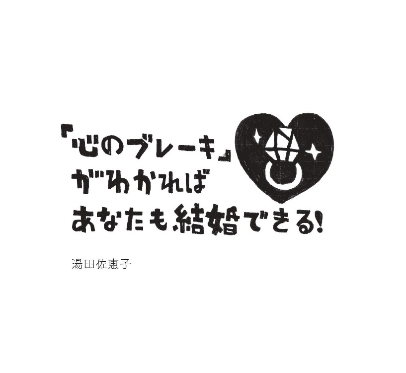
装丁・本文デザイン、イラストレーション／ 斉藤啓（ブッダプロダクションズ）
（２０１６年度日本ブックデザイン賞 入選）
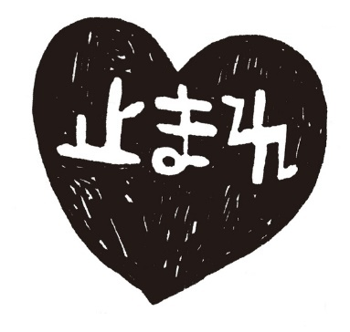
こんにちは！ 婚活・結婚カウンセラーの湯田佐恵子です。
突然ですが質問です。
あなたは今まで、「自分は結婚できないかもしれない...」と一度でも不安になったことはありますか？
「自分は結婚できない」としたらなぜ？
１ 「容姿にコンプレックスがある」
２ 「もう適齢期を過ぎているし」
３ 「料理、掃除、片づけができない」
４ 「人の面倒をみる自信がない」
５ 「お金の管理ができない、貯金がない」
６ 「ジコチューでワガママだし人に合わせたくない」
７ 「性格暗いしネガティブだから、好きになってくれる人なんていないと思う」
８ 「そもそも恋愛に夢中になる気持ちが分からないから、結婚は難しいと思う」
一般に独身者が気にしている可能性のある項目をざっとあげてみました。
あなたはこの中のいくつに当てはまりましたか？
「たくさんあてはまる！」という方は、「結婚はこうあるべき」「○○できないとダメ」と考えていて、「自分は結婚に向かない人なんだ」と思い込んでいるかもしれませんね。
でも......どうか、安心してください。
右の項目どれ一つとっても「結婚に向かない人」の決め手にはなりません。
だって、「そういう人」なのにちゃんと結婚している人って、たくさんいますよね？
もしかしたら、あなたの結婚を長いこと止めていたのは、あなたのために頑張ってきた「心のブレーキ」だったのかもしれません!?
私は、41 歳の時までにトータル３つの結婚相談所を体験し、30 人近い男性にお見合いを断られつづけながらも、やっとの思いで自分の「心のブレーキ」らしきものを発見し、結婚相手を見つけることができました。
「こんな（男性から避けられるようなキャラの）自分でも、満足のいく結婚ができた！」
この自分自身の驚きを貴重な体験として、「カウンセリングの出来る結婚相談室リアルラブ」を２０００年に開業しました。
カウンセリング内容は恋愛、結婚にとどまりません。
生活のこと、仕事のこと、家族のことなど、あらゆることをお聞きしながらその方の幸せを止めているブレーキを発見し、婚活の状況をお聞きしています。
のべ１万回以上のカウンセリング実績の中には、既婚者や、ほかの相談所で活動されている方も多く含まれます。
そんなわけで、私の結婚相談所は開業以来ずっと、結婚相手探しと同時に、「『心のブレーキ』を発見し、ありのままの自分を愛すること」を大事にしてきています。
「自分を止めているブレーキに気づき受け入れることで、より簡単に、最高のパートナーに巡り合い、幸せになれる。」
これが私の信念です。
さて、今や自分自身の結婚願望を当たり前のようにシェアしあえる時代。
価値観に関する情報までもインターネット上に書き込まれ、同じ価値観の者同士が話題を共有しとても簡単に出会えます。
にもかかわらず「結婚相手が見つからない」と嘆く女性は相変わらず多いですね。
がんばって婚活してもなかなか成婚まで辿りつけず、「自分に自信がもてなくなって」と結果が出ないことに苦しむ人たちが、むしろ増えているようです。
若い頃は自然に異性と出会い、いつの間にか相手を好きになり、「20 代で結婚なんてちょっと早いし」と、何度か恋愛を繰り返していたはずなのに、ある時ふと気づくと、さっぱり自分に近づいてくる人が現れない...！
意を決して婚活を始めたのに、お見合いでもパーティーでも納得のいく相手が見つからず、本気でドキドキできる人が見つからな〜い！
そんな体験はありませんか？
十数年間、私は会員を継続的にカウンセリングしていく中で、この「本気で愛し合える人にめぐり会えない」という問題と向き合い続けました。
ひとりひとりの個人的な過去の体験や家族関係を聞きながら、その方の信念や世界観を探っていくと...
自分では前に進みたいと願っているのに、意識下には、前に進むことを怖れている、あるいは「前に進んでも決して自分は幸せにはならないのではないか？」という深いレベルの強烈な「思い込み」が見えてきたりするのです。
これが私たちの「心のブレーキ」として作用し、前に進ませなくしていたのです！
よく「アタリマエの幸せ」「フツウの幸せ」でいいと言いますよね？
「自分なんて『こんなもの』」だし、「結婚なんて妥協が当たり前」と教育された人もたくさんいるのではないかと思います。
でも、「フツウの幸せ」ってどんな幸せでしょうか？
「アタリマエ」とは自分にとってどんな状態？
何が「フツウ」なのか、実は一人一人違います。
他の誰でもない自分が、自分らしい輝きを放って生き、どんな幸せを望むのかは、１００人いれば１００人とも、全員が異なります。
「自分の価値」を軽く見ようとすればするほど、自分自身に対する誤解が生じてしまいます。
自分自身に誤解があると、現在地が分からないで地図を眺めているようなもので、行きたい先はあってもどう進んでいいかも分かりません。
そうなると、 相手選びもあまり根拠のない「自分の好み」だけにとらわれてしまい、果てしない「ないものねだり」になりがち で、結果、自分がどうしたいか自信がなくなり、相手探しどころではなくなってしまいます。
「あなた」という人は世界に一人しかいないのです。
そして、あなたの望む幸せの形は、あなたにしか分からないのです。
あなたの結婚を止めている「心のブレーキ」に気付くことで、ありのままのあなたの魅力や価値を受け取ることができます。
この本を読んでいただくことで、ありのままの自然なあなたの魅力を取り戻し、ぜひあなたにぴったりのパートナーを引き寄せていただきたいです。
この本を活用して、よりたくさんの方が勇気と希望をもち、軽い気持ちで「心から結婚したい」と思ってくださるなら、著者としてこんなに嬉しいことはありません。
さあ、あなたらしいパートナーとあなたらしい生き方とを手に入れ、人生という大海原へ一緒に漕ぎ出しましょう！
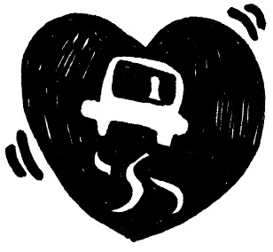
結婚とは？
私がこのテーマを真剣に追いかけはじめて、かれこれ15 年以上経ちました。
出会い自体が大変難しかったあのころと比べ、インターネットの目覚ましい普及によって、今や出会おうと思えばいくらでも出会える時代。
そして「将来、いつか結婚したい」と考えている独身男女はアンケートなどでもとても多いのに、こんなにも結婚できない人が多いのはなぜ？
素朴な疑問ですよね。
その疑問に答える一助となりそうな、とても興味深いアンケート結果があります。
「ネガティブ・イメージが強い未婚者」ＶＳ「体験を肯定する既婚者」。
そんな構図が浮かび上がってきます。
数字が苦手な方もちょっとがまんして、次の資料を見てください。
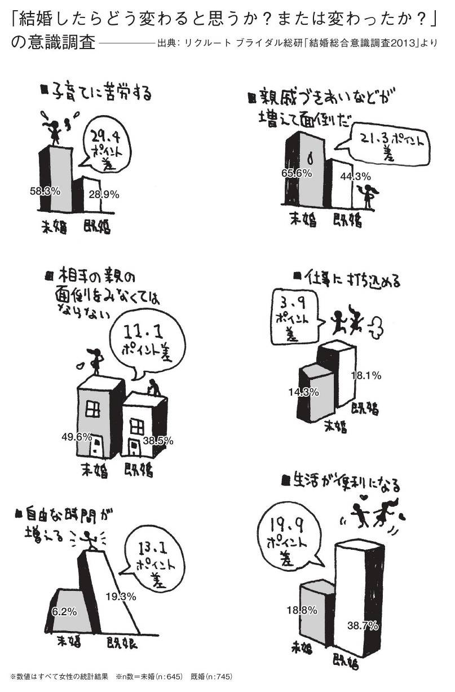
この意識調査の結果から分かることは？
既婚者が「結婚＝子どもやパートナーのために生きる喜びを体験でき、助けあうことで生活が便利になり、仕事に打ち込めて、自由な時間が増える」とポジティブに捉えているのに対し、独身者は「子育てをしなくてはいけない。親戚と付き合わなくてはいけない。
相手の親の面倒を見なくてはいけない!? 」と想像しているということ。
こういったデータを見て明らかなことは......
独身者の多くは、「結婚を実際以上にひどいものだと思い込んでいる」のかもしれないってこと。
もしかしたらそのせいで、結婚に対して、「無意識」に二の足を踏んでしまっているのかも？
多くの独身者は、知らず知らずのうちに、結婚を遠ざけ、自らチャンスを逸してしまっている ...... のかも ？
冒頭で書きましたが、実は私も独身時代、お相手探しには人一倍苦労をしました。
そして、その頃はまだ、「結婚生活は幸せなもの」というイメージは全くなく、とくに若い頃は「（お手本となるような）ラブラブな夫婦なんて見たことない！」「結婚って墓場だろうな。」と強く感じていた一人でした。
「結婚しなくては！」と焦れば焦るほど、一向に結婚に近づけていない気がしていました。
その後、いろいろと自分なりに努力し結婚を手に入れ、その後の結婚生活も実際体験している今、まさにアンケートのように、「結婚生活ってこんなに便利で快適なもの」「本当に楽しくて、充実した人生を幸せに生きられる」と心から感じられるようになりました。
ちなみに私たち夫婦の鉄則は、「喧嘩するときはそのつど誤解や行き違いを解く」ということ。
ですから喧嘩は多いのですが、喧嘩すればするほど年々絆が深まっています。
むしろ理解が深まっているので、結婚当時より今のほうがずっとラブラブな感じです。
（※巻末の「とつぜんインタビューです」に夫の生の声が載っています。）
婚活中の独身者にもありのままの私たちを「幸せな夫婦」のモデルケースとしてインプットしていただきたいので、喧嘩やすれ違いなどのたびに会員にもシェアし、「何かあって話し合うほどに、夫婦や家族の絆は強くなれる」と伝えています。
言いかえてみれば、恋愛の時はたとえどんなに信頼し合いラブラブのゴールインをしても、いつか熱が冷めて、相手の気になる点が大きく見えてしまうときが、必ずやってきます！
そんなとき......「相手を嫌悪したり、関心を持たずにそのまま放っておいたりしたら、確実に二人の意識は離れ離れになる」。
これは保証します！
ですから、「結婚生活に希望が持てる」かどうかは、「幸せになろうとするかどうか」次第なのです。
さて、こんな声が聞こえてきそうです。
「あのう、私、『結婚生活は幸せだ』というイメージを持って婚活しているつもりなんですけど、でも、さっぱり結婚相手が見つからないんですけど？」
ごもっとも。婚活しているんですから、ほとんどの人が、結婚生活は幸せだと思っているつ・も・りですよね？
自分の表層意識と無意識がいかにくい違っているか、これから段階を追ってご紹介していきます。
さて「相手が見つからない」のですね？
「見つからない」とは、具体的にどういう状態なのでしょうか。
もしかしたら、「気に入った人には選ばれず、選んでくれた相手は好きになれない」というミスマッチでしょうか？
女子会などで独身女性が集まると「あのパーティーはいい男がいなくて！」とか、「会社には素敵な男がいないから」とよく耳にしますね。
それでは、さまざまな実例の深層に共通してみられる典型的パターンを想定し、考察してみたいと思います。
「婚活中のＡ子さん」は現在アラフォー。
大手企業に勤めていて若手に頼られる真面目なベテラン社員。
Ａ子さんは「私の周りにはさっぱり素敵な人がいないんです。
職場でも素敵だなと思うと結婚しているし、独身男性はいるんですけどなんだか変わっている人ばかりで...」と、出会いがないことをいつも嘆いています。
そしてお見合いを数知れずこなしても、しばらくすると相手の嫌なところが見つかり、どうしても気になって断ってしまう、という繰り返しをしています。
......とある日のこと。Ａ子さんは会社で衝撃的な噂を耳にします。
「つい最近聞いたんだけど......。ほらＢ子さんっているでしょ？ 少し前に転職してきた同世代の。彼女、Ｃ夫君との間で結婚話が出ているんですって！」
「えっ〜、Ｃ夫君のどこがいいの?! 」と社内はその噂でもちきり。
たしかに、「ろくろく挨拶もできない」社内きっての変人と言われているＣ夫君。
最近なんだか垢抜けてきて、格好良くなってきちゃったりして......傍目にも幸せそうなのが分かります。
Ａ子さんは、「まぁ、別にもともと私の好みじゃなかったし......」とは思うものの、「やっぱり『先を越された感』は残るのよね......。」と、なんだか複雑な心境。
「変人Ｃ夫君」と結婚できちゃうＢ子さん。
Ａ子さんにしてみたら「なんであんな人と？ ヒソヒソ（←同僚と内緒話の声）」ですよね？
当初、「Ｂ子さんって、結婚相手に『妥協』できる人なんだ！」と思っていたＡ子さん。
飲み会の席でＢ子さんがみんなに囲まれ質問攻めにあっていた時、
「Ｃ夫さんって、なんだかちょっと独特の雰囲気あるし気になっちゃって。結局私からアタックしたの」
と嬉しそうに言っているのを聞き、またまた「目がテン」に......。
そして、Ａ子さんが「まあ、他人の好みなんてどうでもいいわよ」と思いつつ、すっかりその件は忘れていたところ、なんと！あの「変人Ｃ夫君」が、結婚後会社に信頼されて昇進したそうで！ （え〜!? それだけでも、許せない！）
そして自信を持ったのか、さらにたくましく魅力的な男性になってきた!? ......というのです！
私たちは、「人」というものを固定的な「変わらないもの」としてとらえがちですが、自分も他人も、人って少し長い目で見ていると案外変わりますよね。
毎日会っていると分かりにくいですが、久しぶりに会うと変化に案外気づきます。
「自分は変わらないもの」、そして「自分の好みは変わらないもの」と思いこんでしまうと、自分の嗜好が変化していたり自分自身が成長していたりしてることにも気づきにくくなりがち。
「自分はこれが好き／これが苦手」と決めて、ずっと「好きだと思っているもの」だけを大事にし続けていると、どんどん選択肢が少なくなってしまいます。
またそれだけでなく、楽で快適な分だけ、刺激も少なくなりますよね。
そしてそのことで自分自身や取り巻く環境の新たな変化に気づく可能性も少なくなってしまいがち。
自分自身の好みやスタイルを固定的な変わらないものだと信じ込んでいると、その時自分が求めている真実に気づきにくくなります。
そして、自分や周囲の変化にも気づきにくいので、チャンスを見逃しやすい......です。
そうでなくても、環境的に独身のまま同じ職場で自分の生活がルーティーン化してしまうと、新たな価値観を持つことのリスクを、本人も全く気づかずに避けてしまいがち。
会社の責任も重くなり、慣れるほどどんどん仕事が増えて忙しくなり......結果、一番求めているはずの『結婚』が、ついつい後回し......というパターン。
会社でも、デキない男性社員のサポートを一生懸命やる場合もあったり。
だからこそ、自分の意識は「若さと美しさを保つためにこんなにがんばって毎日気を遣って心も体もしっかり磨いている！
だから『絶対素敵な男性じゃなくては』！」と強く思っていたりします。
女性としてのプライドは若いころとなにも変わっていないので、「こんなにがんばっているのだから、きっと誰か素敵な男が分かってくれるはず」という願望ばかりがますます強くなり、そしてますます相手選びに慎重になり、「もっともっと」と高く望んでしまいがち......！
実際、そういったいきさつで結婚相談所に入会する女性は多く、高学歴・高収入で聡明な自立女性たちが、
「こんな私を守ってくれる、自分以上の高学歴・高収入でイケメンを」
と、超レアで激しい倍率の人気男子をゲットしようと果てしないチャレンジをし続けています......！
かたや男性はというと、どうも傾向として「変人Ｃ夫君」じゃないですが、一見か弱そうで男女関係どころか人間関係からも引きこもりがちで、結婚願望もセックス願望も薄い草食系男子がどんどん増殖中。
とはいえ、さまざまなジャンルでオトコを負かしつづけるほどパワフルになってしまっているアラサー、アラフォー女性だからこそ、
「本当は私、か弱い......（というより、実は孤立の中、疲れ切ってへとへと......）なので、オトコにはやっぱり守ってもらいたい......」
という、むなしい願望を持っていたりします。
ところが......男子の方はといえば、会社でも学校でも女子とのさまざまなジャンルの競争でかなり負けが込んでしまって、セクシャル本能の征服意欲を、ことごとく減退させてしまっている！
この男女関係のミスマッチこそが、近年の日本の「晩婚化」や「非婚時代」を作っているのですよね〜。
あらゆるツールとお金を使って「なんとしてもお金を持った素敵なオトコと結婚する！」と決心しがんばる女子。
その傍らで、「ま、できれば結婚してもいいか......？」くらいの低いモチベーションで出会いを求める草食系男子にとっては、もしかしたら結婚という言葉は、幸薄く重たく感じてしまうかもしれませんね......。
さて。話がそれました（失礼）！
戻しまして、「変人Ｃ夫君」を「オトコ」という目で見ることができなかったＡ子さん。
女子とろくに会話もできないようなオトコは、イコール「常識的でない」と判断し、切り捨てていたわけですね。
ありがちですが「イケメンでそつなくリードしてくれる優しい人」という完璧な男性を求めているＡ子さんには、声を掛けてもまともに返事もしてくれないＣ夫君の内に秘めていた魅力など、気づくはずもなかったわけです！
ところがいまや、Ｂ子さんのお願いすることを全面的に受け止め、なんとも堂々としてきているあの「変人Ｃ夫君」!!
そつないリードを身に付け、表情まで変わって、優しさが内側からあふれ出ているようです。
そんな彼の変化がＡ子さんの目にも見えてきたら、「人はかかわりによって成長するんだ！」と気づくかもしれません。
もしかしたら本人の思い込みのブレーキが解除され、今まで気づかなかった他の人への可能性も見えてくるかもしれないのです。
ですが......。
往々にして、人は無意識にこれまで信じていた信念を信じ続けようとしたがります。
冒頭のデータでもそうでしたよね。既婚者は結婚を肯定しているし、独身者は独身を肯定し、「今の自分から変わりたくない気持ち」に理由をつけてしまうのです。
つまり、人は無意識に、今までの体験の中から培ってきた信念（つまり、根拠のない「思い込み」）を信じ続けたいのです。
「Ｃ夫君は少し変わったけど、やっぱり私はＢ子とは好みが違うしＢ子みたいにはなれないわ......。結局私にとってたくましくてそつなくスマートなデートができるような男性は会社にはいないのよね......」
と、自分自身の今までのものの見方を正当化し理由をつけ、変化への気づきを忘れてしまうことが多いのです。
さあ、それでは本人のおっしゃるように、たくましくて、そつなくスマートなデートができるような男性が現れたら、Ａ子さんは本当に幸せになれるのでしょうか？
例えばＤさんというたくましい方が現れ、Ａ子さんをそつなくスマートにリードしてくれたとします。
Ａ子さんの反応は......？
「そつなくてスマートだしたくましい。けど......なんだか話していて面白くないのよね......」！
まさに ...... これこそが、婚活女性にありがちな「ないものねだり癖」！
一般的に「結婚相手が見つからない」と困っている女性は、
「自分が望む方には望まれず、手が届きそうなのは怪しげなオトコばかり......」
などとミスマッチを感じていると思います。
前述したＡ子さんも、「変人Ｃ夫君は妥協以外のなにものでもない！」と感じていましたよね。
つまり、最初から自分の中に一定の「合格基準」ができているんですね。
そしてそのモノサシを、「絶対的なもの」だと感じているようです。
結婚相手がなかなか決まらない人は、このモノサシの数がとにかく、たくさんたくさんある人が多いです。
お見合いの相手選びの条件ひとつ取っても......
「身長は絶対譲れません！私より低いなんてありえない」
「収入は即生活ですから。私の収入以下なんて絶対生きていけません」
「私の稼ぎを当てにされてもね！」
「え〜？やっぱり大卒でないと話が合わないんですよね......」
「ああ、そりゃ顔は命ですね〜」
「あ〜、やっぱり家が遠いと通えませんから」
「友だちもいないなんてありえない」
「いまの生活変えたくないし、専業主婦になってほしいという方はちょっと」
「長男や一人っ子は親の面倒が......」
などと、基準だらけ。
実際「あれはここがだめ、こちらはこれがだめ......」と、「前提条件への要望が多い」ことで結果決めにくくさせているケースは本当に多いです。
......その奥には、
「結婚相手は、私を幸せにしてくれるべきだ」という思い込みが、前提になっていませんか ？
ちなみにこれは主に女性の側のパターンですね。
男性も時々いますが、それを堂々と言う方はそんなに多くはありません。
動物のメスは本能的に、「強いオス」を期待し試すようです。
「種の保存」など、いろいろと生物学的理由もきっとある事でしょう。
でも今、人間社会は男性が性的にも弱くなっている時代のようです。
この過剰なまでの女性側の期待は、このままいくとパートナー候補を全員締め出すことになってしまいかねません！
ただ......ここで誤解して読むのをリタイヤしないでくださいね。
だからと言って、 私は「妥協するべきだ」と言っているのではない のです。
今伝えたいのは、 このあまりにもたくさんある、パートナーに対しての「女性特有の期待」 なのです。
この「女性特有の期待」の中身に関しては、また後ほどたっぷり考察しますね！
さあ。
それでは望みのパートナーを手に入れ、愛を育み、Ｃ夫君をどんどん「素敵な夫」に仕立て上げたＢ子さんに注目してみましょう！
Ｂ子さんには、誰も見向きもしなかった「変人Ｃ夫君」の隠れた魅力が見えたのかもしれません！
いったいなにが、Ａ子さんと違っていたというのでしょうか？
まあ、もしかしたらＢ子さんはすごく美人かもしれませんし、あるいはＡ子さんと比べてとんでもないおブスかもしれませんし、あるいは昔から「オタク好きだった」のかもしれませんが、このシチュエーションにはなにも書かれてないので......
「そういった違いはとくにない」のが前提だと判断してください。
何か違いとして挙げられるのは......
Ｂ子さんは「最近転職してきた」ことくらい？
同じルーティーンの中で、何年も変わらない生活をしているＡ子さんとの違いは、Ｂ子さんには「環境の変化」があったこと......
外的条件からくるこんなちょっとした違いが、意識の変化を招いた......？
ですが、その可能性がまったくないとは言い切れません。
最近科学的にも解明されていることなのでご存知の方も多いのではと思いますが、そういう「環境の変化」があった時には、不安もリスクも、つまりストレスも大きいので注意力を最大限に働かせているため、同じルーティーンの中で生活している時には感じられることのない小さな変化も発見しやすい、と言われています。
極限状態ほどすごく澄み切った意識のクリアな状態＝ベストパフォーマンスを引き出せる状態になり、脳内物質エンドルフィンなどの作用で、快感や恍惚感が起こるだけでなく、疲れも忘れ、なおかつ視野が広がる、と！
ということは、つまり、たまたまＢ子さんは新たな職場での緊張感がうまく作用したためにネガティブな先入観を抱かなかっただけ、なのかもしれませんね！
（分かってみれば......な〜んだ！という結論。）
そもそも「結婚する」という行動自体が、人生最大のハイリスクな転機なんですね。
新婚の場合、幸せを感じているからストレスを自覚しないで済んでいるだけかもしれないですね。
「新婚はポジティブな意味でもストレスフルなもの」と覚悟してかかった方がよさそうです。
「婚活」も、普段通りで相手の魅力を見つけようと思っても無理がある」のかもしれませんね。
ハイリスクな気分を体験している瞬間こそ、「出会いスイッチ」がＯＮになる可能性があるのかも♪
婚活を頑張っている方の中には、異性との出会いを繰り返すためだけに膨大なお金と時間を費やし、なおかつ成果が出ない方が本当に本当にたくさんいらっしゃいます。
ですから「たくさんの相手と会っても素敵だと思える人と出会えないんです......」という人は、もしかしたらＡ子さんのように相手の「条件」にばかり意識が行ってマイナス点ばかりが気になり、とても相手の魅力を発見できる状態にはない可能性がありそうですね......？
じゃあ、自分の「出会いスイッチＯＮ」にするための「ハイリスク」って？
Ｂ子さんのように転職しなきゃいけないの!?
いえいえ！ Ｂ子さんはたまたま偶然の産物としてハイリスクを逆手にとることができたということ。
その状態を作り出すためだけにいちいち転職を繰り返していたらたまったものではありませんよね！
それに、転職も何度も何度も繰り返していれば、やがて慣れてきて本人にとっての刺激も少なくなってしまうかもしれませんし......。
実は、誰でも「本気でとことん集中」しさえすれば、「ランナーズハイ」のようなハイパフォーマンス状態を作り出せるのです！
「一心不乱」、「無我夢中」の状態は、β エンドルフィンなどの脳内物質が作り出される心理状態と言われています。
「目的に向かい、自分を信じて、できる限り工夫しつづける」といった態度は、自然な流れを作りだし目的地までたどり着くのにいちばん良い心の状態を作ってくれるんです。
達成したいのなら「とことん・できるまで・あらゆる可能なことを・やりつくす」。
これが成功の鍵。
まるで迷信的な精神論のように聞こえるかもしれませんが、現代の脳生理学などさまざまな科学の発展によりハイパフォーマンス状態の効能はどんどん論証されています。
つまり、
「何かを成し遂げたいと思うなら、とにかく本気でやろうと決める＋意図し続けること」。
ということは、お見合いでもなんでも、前向きに希望を信じて「一心不乱」に婚活をつづけていれば、
「わたしお見合いはちょっと......」とか、
「結婚相談所には素敵な人がいなくて......」とか、
「パーティーは苦手で」とか、
「このままでわたし結婚できるのかしら？」
と、「愚痴をいったり泣き言並べたり、適当な理由を付けてやらないことを正当化している」人よりは、明らかに数か月ないし数年早く、素敵な方と出会って成婚していく傾向があります。
これは当然ですよね？
「相手が○○でなければ幸せにはなれない......」と「言い訳」をし、「文句」をいいつづける人は、ご自分が思い描いた通りの、「こんな人絶対イヤ！ と思っているお相手とのお見合い」といういや〜な結果を引き寄せます。
そして結果的に「ほおら！やっぱり......素敵な男はいなかったでしょ!? 」と、自分のネガティブな思い込みを「証明」するという悪しきスパイラルに陥りがち。
そして、この悪循環を断ち切るためには、その「言い訳」や「文句」の正体、つまりあなたの「心のブレーキ」と向き合うこと。
「どうして私、こんなに期待してるんだろう？」と、丁寧に自分の心に問いかけてみることこそが大事です。
リアルな目で、自分の内面をありのまま眺めて見るといろいろな気づきが起こります。
「どうしていつも期待してるんだろう？」と。
さあ、どんな答えが出てきましたか？
「だって、結婚相談所に登録している人ってろくな人はいないし......」
「だって生活していくには年収○百万以上じゃなくちゃ！」
いつもの「思い込みの思考」が始まりましたね！
さあ、ちょっと考えてみましょう。
「結婚相談所に登録している人ってろくな人はいない」
「生活していくには年収○百万以上じゃなくちゃダメ」という考えは、「真実」でしょうか？
私たちはちょっとした「思い込み」を持つことによって、日常会話でも意識せずにその「思い込み」を語ってしまい、情けないくらい簡単に自分の可能性に限界を設けてしまいます。
例えば......、
「素敵な人は一人もいない」
「ちゃんとできなくてはダメだ」
「もう、若くないから」などなど。
「それ、本当に確かめたんですか？」あるいは、「その基準は誰が決めたんですか？」と突っ込みを入れたくなるような一方的な「思いこみ」だったりします。
とくに「私はもう若くない。」の思い込みはとても可能性を狭めてしまうので、そのロジックに早く気づいてもらいたいものです。
過去を見つめたままの生き方だと、誰でも自分の人生で一番年を取っていることになりますよね。
「すべての瞬間が『もう若くない』」と感じてしまいます！
つまり、後ろ向きに立って今まで生まれてから生きてきた道を見つめれば、たとえ10 代からでも「ああ、もうこんな歳。もう若くない......」と思えます。
これからも一生若くはなりえないので、「ああすればよかった」と後悔と絶望の人生を生きることになります。
「ポジティブなものの見方をすると望んだものが手に入りやすくなる」と言われています。
ネガティブな「後悔」や「自責」は、その感情自体が後ろ向きで、進みたい方向に対しブレーキとなってしまうからです。
だからこそ、「未来をどう認識するか」。
今までの人生をずっと生きようと思うと過去に執着しがち。
そして、望む人生を生きようと思うと、未来に向けて心が開きます。
過去が現在に影響を与え、現在のこの一つ一つの選択が未来に影響を与えることができます。
今を充実させればさせるほど、豊かな未来が手に入ります！
そうやって前を向き未来へ意識を向けると「今この瞬間が一番若い」と感じられますよね。
たとえば私は今50 代。
これから60 代、70 代、80 代、90 代を体験していくんです。
前を向くと、今からでも人生ってずいぶん長そうだなあと思えるし、この先たくさんの可能性を作り出すことができます。
現代の日本は長寿社会ですから、ある意味自分が「お年寄り」になるかどうかさえも選択できる時代といえますね。
例えば、65 歳くらいから始めたスポーツで20 年以上鍛え上げ、最高齢でギネス並の成績を持っている方など近年は多いようですが、今は本当に年齢関係なく、元気な人は信じられないくらい元気です。
電車のシルバーシートの前で席を譲ってほしくて待っているお年寄りばかりではないですよね？
素敵にファッションを楽しんでいたり。いくつになっても人生を謳歌している印象を受けます。
おそらく、高齢化が著しい今後の日本社会では、今後10 年経っても私たちの意識はそのままで、実年齢だけがスライドしていくのではないでしょうか。
つまり自分のことを「お年寄り」と考える人がどんどん減っていくだろうと私は思っています。
いや。おそらく、さらに「若さ」 を実感できているスーパーお年寄りが増えていることでしょう。
高齢者人口の割合はどんどん上がりますから、実年齢と肉体年齢に肯定的なギャップがあることが「普通」になっていくことでしょうね！
「思い込み」の枠を外していくと、どんなことでもそうですが、こんな風に限界だと思っていたあらゆることが限界ではなくなり、可能性が広がります。
年齢についての思い込みの枠を外し、今の日本の少子高齢化の状況に適応して行くと......これって人類の 「進化」かもしれませんね。
「もう若くない」と思っている人は、人生を「リタイヤしたい」と思うくらい、限界を感じているのかもしれませんね。
でも、たった30 代くらいで、すでに新たなチャレンジをすることもなくメンタル面で本当の「お年寄り」に近づいていく人生でいいのでしょうか？
いつまでも若くありたいですか？
それとも、もう今からリタイヤして席を譲ってほしい気分でしょうか？？
そしてそんなにも早くリタイヤしてしまいたい「心のお年寄り」を、「一生のパートナーとして面倒見たい」なんて思ってくれる異性がいるでしょうか？
「思い込み」は「若さ」だけじゃありません。
「自分の限界」を作ってしまいがちな思いこみはあまりにも多くて、一つ一つ発見していくと大きな気づきが起こり、自然に相手と巡り合うことができて、それだけで自由になれて結婚できちゃう人もたくさんいます。
それでは深層心理でなにが生じているのか、さらに丁寧に見ていきましょう。
さあ、「心のブレーキ」のひとつは、「自分の限界を作ってしまうものの考え方---『思い込み』」だということ、納得いただけましたでしょうか？
そして、その思い込みの集積として、「自分にはできない」などと、絶望的に自分自身全体に対して信じ込んでいるケースが多いんです......。
例えばせっかく「これは素敵な出会いかも？」と直感で感じていても、その人が「自分はいつも失敗しているしな......」と思い込んでいれば、「またうまくいかないかも!? 」と疑心暗鬼に駆られがち。
何度か同じような体験が重なっていると、それがパターン化され、「『こんな私』だから、いつもうまくいかないんだ......」となってしまいます。
でも「自分のパターン」は、イコール自分自身ではありませんよね。
もちろんパターンはすぐには直せないかもしれませんが、でも、「『私だから』ダメ」なのだとしたら、「私が死なないと変えられない」ということになってしまいますよね！
自分の「パターン＝クセ」でしかないものに惑わされて、例えば「クルマのアクセルの効きが悪くなったからと言ってクルマ全部買い直す」なんてことをしていたら、すごくお金も手間も無駄ですよね？
どうぞ、自分のちょっとした癖に癇癪を起こし、自分の将来全部を投げ捨ててしまわないでくださいね。
実際、こんなことこそが自分自身を「長いこと結婚させない最大の理由」となり得るのです......。
多くの人が無自覚に、漠然とした自己嫌悪から「結婚できない」事実を作りだしてしまっています！
つまり、表面意識では「自分と合う相手がさっぱり現れない」と思っていても、無意識レベルでは全く本人が自覚しないまま、「こんな私が結婚できるはずがない」と信じ込んでいて、結婚を許可していない可能性があるのです。
みなさんは、私たちがふだん感じている「表面意識」とか「顕在意識」と呼ばれているものは、意識全体のほんの数%でしかない、というお話はご存じでしょうか？
私たちの日常生活における言動のほとんどは、習慣によって無自覚に動いています。
ですから、時々人との対話などによる「気づき」によって、自分の行動の無意識の動機を自覚したり、意図的にこうしようと選択する時以外は、ほとんどの時間無意識に動かされているのです！
さて。
無意識レベルで自分自身の気持ちを見てみると、いろいろな気づきがあります。
あなたの心は、「結婚したいのになぜか相手が見つからない......」と思っていますね？
意識下の自分の信念に気づくための有効な質問方法は、近年いろいろなカウンセリング技法や心理学からもたくさん出回っていますが、私の独身時代にも何度もお世話になり、今もよく会員に使っている定番の婚活用エクササイズをご紹介しましょう！
『30 日間で理想のパートナーを見つける法』（チャック・スペザーノ著）第４日「あなたはほしいものを手にしている」という項目のエクササイズです。
自分の中に、いかに思ってもいない考えがあるのか効果的に分かりますので、皆さんもぜひチャレンジしてみてくださいね。
（以下、『30 日間で理想のパートナーを見つける法』チャック・スペザーノ著・高橋裕子訳・ＶＯＩＣＥブック 36 〜38 ページを参考に作成）
「結婚したいのになかなか上手くいかない」なら、ちょっと『自分は結婚なんかしたくない』振りをしてみましょう。
その上で次の質問に直感で答えます。
① あなたが結婚したくないのはなぜですか ？
② 結婚しないおかげで、どんなことができますか ？
③ 結婚しないおかげで、なにをしなくて済みますか ？
④ 結婚しない目的は何ですか？
⑤ このことによってどんな意味で特別な存在になりますか ？
⑥ あなたは何を怖れていますか ？
⑦ どんな犠牲を払うことを怖れているのですか ？
⑧ 完璧な結婚相手を持たないことで、どんな罪悪感を埋め合わせようとしていますか ？
⑨ なぜ自分はパートナーを持つにふさわしくないと思うのですか ？
⑩ もし完璧な結婚相手を持てば誰に忠実でなくなりますか ？
⑪ 結婚しないおかげで、誰に『復讐』できますか ？
内容によって、質問に答えられないと思うこともあるかもしれませんが、できるだけ答えてみるだけでも、意外に自分では思いつかなかったような発見があると思います。
いくつか回答例を紹介します。
① あなたが結婚したくないのはなぜですか ？
「もっといい人がいるかもしれないから」
「我慢をしなくてはいけない」
「フツウの人と結婚しちゃうとフツウの人になっちゃう」
「自立していたいから」
② 結婚しないおかげで、どんなことができますか ？
「好きな時間に好きなことができる」
「夜遅くまで本も読めるし朝寝坊もできる」
「全然違う人生を歩めるかもしれないという可能性を残しておける」
「憧れのスターをずっと好きでいること」
「恋愛」
③ 結婚しないおかげで、なにをしなくて済みますか ？
「家事・育児をしなくて済む」
「自分のペースを崩されなくて済む」
「嫌な相手に我慢しなくて済む」
「喧嘩をしたり、怒ったり、心配しなくて済む」
④ 結婚しない目的は何ですか ？
「自分の心を探求する」
「やりたいことを見つけるため」
「一人で気楽でいる」
「ひきこもる」
⑤ このことによってどんな意味で特別な存在になりますか ？
「自己の確立？」
「友達の中で自分だけが結婚できないかわいそうな存在......」
「平凡じゃない人」
「一人前じゃない人」
⑥ あなたは何を怖れていますか ？
「社会的立場」
「自分の正体がばれること」
「人と親密になること」
「怒りやジェラシー、淋しさなどを感じてしまうこと」
⑦ どんな犠牲を払うことを怖れているのですか ？
「掃除や育児など」
「若さをたった一人にささげること」
「時間をとられたり、自分の思い通りに行かないこと」
「相手に関心を持っても自分が関心を持ってもらえないこと」
⑧ 結婚相手を持たないことでどんな罪悪感を埋め合わせようとしていますか ？
「女としても母としても不十分な私」
「裏切るかもしれない罪悪感」
「以前の恋愛相手を捨てたこと」
「親の期待に背いたこと」
⑨ なぜ自分はパートナーを持つにふさわしくないと思うのですか ？
「半人前だし、文句ばかり言ってるし、偉そうだから」
「社会に適応できないから」
「変わっているから」
「ネガティブだし、相手に与えるものが特にないから」
⑩ もし完璧な結婚相手を持てば誰に忠実でなくなりますか ？
「初恋の相手？」「母？」「兄......？」「両親？」
⑪ 結婚しないおかげで、誰に『復讐』できますか ？
「母？」「祖母？」「世間？」「天（神様）？」
実際どんな答えが出てきたのか、いろんな人の回答を集めてみると、「結婚したい」と思っているはずなのに、いかに結婚について前向きに考えられない理由を持っているか！
ちょっと心の内側に入って問いかけ始めたら、堰を切ったようにいろいろ出てきました。
たしかに私自身もそうでした。
「なんとかして結婚したい！」
......いやむしろ、「結婚しなければ！」と悲壮感いっぱいで思い描いていた当時の結婚のイメージは、映画のラストシーンでしかなかったことを想い起こします。
「めでたく結婚できたら、あとは余生だと思ってつましく暮らそう......」
前向きな生活のイメージなどさっぱり湧いてきませんでした。
「結婚したらやりたいことができない」と思い込んでいれば、本気で結婚したい気持ちになるはずもなく、晩婚なのは当たり前かもしれません。
いかがでしょうか？ ぜひみなさんもやってみてください。
一つ一つ丁寧に答えてみると意外な発見があるかもしれません。
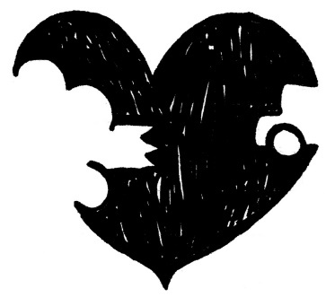
さて。
「結婚したい」にもかかわらず、自分の心の奥では「結婚したくない」と感じている。
その気持ちが「心のブレーキ」となって、自分の結婚をストップさせている......。
それじゃ、どうしたらいいの？
ここで多くの人が勘違いしやすいのですが、ネガティブな気持ちをなかったこととして「否定」するのは逆効果です。
自分の中にまったく相反する二つの気持ちがあると気づいたら、それをどうにかしようとせずに、ただ「そうなんだー。」と、現実をそのまま認めましょう。
ありのまま、しっかりと向き合いさえすれば、それだけで変化は起こり始めます。
「ネガティブな声を否定しなくては！」と焦ってあがいたり、「結婚したくない気持ち」を無視すると、逆に抵抗が強まってしまいます。
その理由は、ネガティブな気持ちの下にも「本当の大事な目的」があるからです。
これはですね、たとえて言えばちょっと神経質な犬を連れて散歩していると想像してみてください。
飼い主の進みたい方向に対し、犬が、なにかに対して思い切り後ずさりしているような状態です。
まずは犬の様子を見てあげなければ前に進めませんね？
犬の気持ちを無視して強引に前に進もうとすると......、かまれたり引き摺られたり、散歩はえらく疲れるものになってしまいます。
まずはこの状況を見て、いまなにが起きているのかを良く観察する......。
それでも異常が分からず、まだ進みたい方向に歩いてくれないときは、犬の気持ちをわかろうとして直接聞いてみたりしますよね？
「どうした？」と、しっかり犬の目線まで下りて、なでなでしながら聞いてみると、犬の言葉は分かりませんが、「怪しいものがあったから安全かどうか気になっていた」など気持ちが伝わってくると思います。
犬にとって「『安全』を大事にしたくて前に進ませないようにしていた」のだとしたら、この「安全」こそが、先ほどお伝えした、ネガティブな気持ちの下にある「本当の大事な目的」です。
飼い主は散歩をしようと前に進めようとしても「犬」は安全が気になり抵抗している。
この動きを無視して一方的に頑張っても、犬と競争になってしまいます。
「犬」の気持ちを受け入れ、飼い主もその「安全」に意識を向けてみると、気づかなかったことが見えてきて、やがて犬は安心して一緒に前に進んでくれます。
もしかしたらあなたも、あなたの中の「犬」に対し、強引に手綱を引いてしまっているのかも......。
本人は、頭では「フツーの幸せでいいから、早く適当な人と結婚をしたい」と思って真剣に努力しているのに、実際婚活してみると、そのたくさんの選択肢からあれもこれもと試したくなりがちです。
アウトレットや家電量販店に行ったことをイメージしてみると分かりやすいかもしれません。
選択肢が増えれば増えるほど、逆に足りないオプションばかりに目が行くようになります。
「あれはこれがダメ、こちらはここがよくないし......」といった具合に、決断を先送りにしはじめ、結果的に「絵に描いた理想のパートナー」を探し続けることになる......。
そんな体験はありませんか？
「あの人は私に夢中だけどちょっと退屈。......もうちょっと私の興味を惹く人でないとな〜」
と、次々新たな人とお会いしていて、次第に、会う人会う人なぜか理想からどんどん離れていき悪くなっている感じがしたらご用心！
自分のストライクゾーンが狭くなり「ないものねだり」のパターンにはまり始めている可能性があります。
婚活の「ないものねだり癖」は外的条件だけではありませんよね。
以前、「結婚相手に求める条件」と「本人自身の自己評価」の調査を読んだことがありますが、
「プライドは高い方」
「性格は自分第一主義」
「性格はきつい方」
「彼選びに妥協はしたくない」
「付き合い始めると長所よりも欠点が目につく」
などの自己中心型傾向にイエスと答えた女性は、現在「交際相手がいない女性」の方が、「交際相手がいる女性」よりずっと多かったというのです......。
つまり、「自分はわがままで、キツイ性格で、相手の欠点ばかり気になる。
だから、相手には優しさを期待する」ということになり......。
「えっ〜!? 相手からもらうばっかりなの？ ズル〜イ？」という感じです！
ちなみにこれは女性、男性ともに言えます。
自分には優しさがないから優しさを求める、かわいらしさがないから、たくましさがないから......など。
そもそも、「自分にない」と感じるものをゲットしたい！ という欲求はいわゆる異性を求める本能と言えます。
多くの人の飾らぬ正直なモチベーションになっているのは、ある意味動物の本能として当然なのかもしれないのです。
ただ、自分に若さがない・美しさがない・かわいらしさがない・頭の切れがないと決めつけ、相手に求める「ないものねだりのほしがり屋」に対し無償奉仕で与えてくれる異性がどれだけいるか？ ......ということに。
「それじゃ、自分はどうしたらいいの？ 私だってもし若い時から交際相手がいれば、相手がわがままなことをいってもそれを優しく受けとめたり、適応力も育っていたかもしれなかったのに......！」
そうそう！ そうなんですよね......。
「愛される人は、愛するからますます愛され、愛されないことに不満を言ってふて腐れる人は今後さらに誰からも近づかれず、孤独を引き寄せる」のです......。
相手がいないと、人へ優しさを与える事を忘れがちになったり、優しくしてもらえないから、もっとすねてしまい......さらにグレて......！
ついつい子どもみたいな気持ちになり、「自分に足りない要素をもっと相手に求める」となり......相手をますます遠ざける。
これが悪循環（負のスパイラル）ですね。
私も、過去や他人を羨ましがっても仕方ないとわかりつつ羨まずにはいられない、そんな時期を過去何十年も過ごしました。
ですが安心しましょう。
裏を返せば、「愛する人はますます愛され、憎む人はさらに憎まれる」という法則は、平等に人々を支配しているってことですから。
想像してみてください。
もし、「ないものねだりのほしがり屋」があなたに「欲しい欲しい！ くれ〜！」と近づいてきたらどんな気持ちでしょうか？
自分以下の経済力と知力で、会話のセンスもなくて、気が利かなくて、おまけに「かわいくなくちゃ女とは言えない！」とバカみたいに信じている。
あるいはあなたが男性なら「年収○○万以上じゃなきゃ男とは言えない！」とバカみたいに信じているおブスな女......です！
ただ......
問題なのは、おかしいと分かっていても「妥協する気にはなれない」こと......ですね？
「妥協」って我慢がつきもの。
例えば、「ダイエットしなくてはと『デザートは我慢しよう！』と思っていたのに、一緒にいた友達がケーキを頼んだのでついつい自分も食べちゃった。あ〜失敗......。ダイエットはもういいか......」みたいな気分になる時、ありませんか？
これを婚活のジャンルで言えば、
「もう39 歳だからお見合いで知り合った人とがんばって結婚しようと思っていたのに、不倫だった元カレから電話がきたのでついつい会ってしまい、身も心も再燃しちゃった！ もう婚活はあきらめました......！」みたいなことかもしれません！
自分自身が心から望んでいる状態よりも、いつもの慣れ親しんだ低次元の欲求の方が優先されてしまいがちなのです......。
「スマートなボディー」よりも「スウィートなケーキ」♪
「幸せで充実した結婚」よりも「不倫の危ない快感」？
私たちはこんな風に、本当にやりたいことではないことにはまりこみ、本来自分がやりたいことを逆に遠ざけてしまうことって案外多いですよね......！
例えば「ケーキは我慢」と思った瞬間から、居ても立ってもいられずケーキの事ばかり考えてしまう......！という経験、ありませんか？
思考を抑圧すればするほど反動のように、一層ケーキのことを思い浮かべてしまい食べたくなる......。
つまり、「ない」ということが気になり始めると、あの「ないものねだり癖」が始まるのです。
キョーレツに「満たされない思い」が拡大視されてしまい、「もっともっと」と感じてしまいがち。
「婚活」のジャンルでもこんな風に反動が出ていると考えられます。
例えば、「彼のここがちょっと」とか「私、ここがダメだから......」とか、相手や自分の「足りないところ」に意識が向くと、「もうちょっと」「あれはいいけど、こちらが今度は......」みたいに、ますます気になるところが増えてきてしまう。
つまり............！
こういった「足りないところ」に焦点を当てているネガティブな会話自体が、すでに満たされない思いを増幅させ、「負のスパイラル」を生む原因になっているのです！
上記のケーキの会話を読んでみても、
「ダイエットしなくては」
「我慢！」
「もう39 歳だから」
など、キーワード自体がネガティブですね。
そこから性急な、追い立てられるような気持ちを連想してしまいがち......。
ただ、人間の深層心理は本当に複雑です。
なぜなら、「よし！ こんなことを考えないぞ！」とか「考えちゃだめだ！」と意識の外に排除しようと思えば思うほど、心の中はそのイメージを作り続けるからです。
そして、否定を繰り返すほどストレスいっぱいになり......。
ある時一気に禁止している方向へ向かって、ただただ「ドカ食い」みたいに走ってしまうことに！
ダイエットでいうリバウンド現象ですよね......。
前述の「不倫だった元カレ」に走る女性の気持ちも同じ。
真面目な人ほど「不倫なんてしてはいけない！」と自分を縛ります。
そして「そんなこと考えてもいけない！」と頑張って意識から排除しようとするので、逆に突然の出来事があると、ついついそちらへふらふらと引っ張られてしまい、元の木阿弥に......？
これも先ほどの、「負のスパイラル」の一例と言えそうですね......。
基本的に、自分が心から「こうなりたい」と思っているなら、それを意図して一心不乱にあらゆる努力をすると「思いは実現する」と言われています。
自分が欲しいと思ったものをしっかりと手に入れている先人たちは、その引き寄せ的な法則に従って欲しいものを手にしていると。
今やそういう本やセミナーは、本当にたくさんありますよね？
結婚も全く同じこと。
そして......期待通りには結果が手に入らないと、私達はなぜか「とはいっても時間がないし、お金もないし、協力者がいないし、前例がないし......、素敵な相手がいないし」と、いかに手に入れることが「できない」か、もっともらしい「言い訳」を見つけてしまいがち。
「うまくいかせようと決意すると、うまくいかせるための方法は『無限大』に発見できる」。
これは成功法則本などによく書かれている言葉です。
全く同じ意味で「逆もまた真なり」なんです。
つまり「うまくいかないと思ってしまうと、うまくいかないための理由を『無限大』に発見できる」のです！
理由は本当に人さまざま。
例えば「あの時はよかった、あの時代ならできた」（と信じている）とか、「あの人にはできるけど、きっと私にはできない」（と信じている）とか。
なんでもいいのですが、つまり本人がそう信じていれば、遅かれ早かれそういう結果を作りだすことになります。
「信じている結果を引き寄せる」のです。
ですから、「何をどう信じているか」が大事です。
うまくいかない時、私たちは往々にして「うまくいかないのではないか？」と信じているから、ついついその証拠を探してしまいがち。
「自分は必ずうまく行かない理由がある」などと信じている人は、自分がうまく行かない理由を毎回勝手に無意識が作り出してくれちゃいます！
「昔から何かを達成したことなんて一つもなかったな......」。
こういう発言に対しては「本当に『一つも』ですか？」と聞き返すと、いかに「記憶」が偏っていて、いい加減か分かります。
だって「達成したことが今までない」なんて、ありえないですよね？
すべての人はさまざまなことを達成してきています。
例えば赤ちゃんの頃から「立ちたい」、「歩きたい」と無意識に思い、達成してきましたよね？
個人的なことも、良く考えれば達成した事は何か必ずあるはずです。
私の例で言えば......「中学になってやっと４段の跳び箱が飛べた！」とか。
何かができても、自分より優秀な誰かと比較したり、できたことの価値を過小評価していると、それを「達成実績」として許可できないのです。
私たちの多くはやりたいと思っていることを、スムーズには実現させないような信念を持っていたりします。
「そんな簡単にうまくいくなんてありえない......」などと信じて「こんなにも生まれてから今まで苦労しているんだから、できるはずないよ」と、最初からできないことを前提に行動していたりします。
そして、「そんなに簡単に欲しいものが手に入るなら、『この私』を幸せにして証明してみてよ!? 」と、自分からは動かず待ちの姿勢になっていたりして......、
「ほうら、やっぱりね！」と不幸を自ら証明しようとしたりします。
これこそ「こじらせ癖」ですよね！
安心してください。
私自身、ずっと長いことこじらせまくっていました。
ただただ毎日、同じような言い訳と文句にあけくれていました。
でも、自分の言っていることが「言い訳のパターン」なんだと気づき始めると、「もしかしたら、うまくいく人生もあるかも？」と思えるかもしれません。
そんなわけで、私たちは「欲しがれば欲しがるほど、周囲には誰もいなくなる......」という、まるで駄々っ子のような状態を作ってしまいがちです。
「手に入らないだろうと信じている状態」では、「手に入らない結果を手に入れる」ことになります......。
「ほ〜ら！ やっぱり手に入らなかった！」と自分が強固に抱えている信念を、悲しい事実が証明してくれます。
次も「やっぱり手に入らないんじゃないか？」と思えば、同じように「やっぱり手に入らない」ことを証明して、さらにその信念は強化されてしまいます。
また、「負のスパイラル」ですね......。
「泣きっ面にハチ」です。
ただ、疑問が湧きませんか？
私たちが生きている限り、何かを「欲しい」と思うのはある意味自然ですよね？
「『欲しい』と思うのは普通の『動物的本能』ではないの？」と思うかもしれません。
生命を維持し、子孫を増やすための「本能」。
これは動物だから共通なはず。
ところが、人間は動物と違って、おなかがいっぱいになっても「もっと食べたい」し「何かのために備蓄しておかなくては」と考えます。
つまり、際限のないこの「ないものねだり癖」は、人間特有のものなのです！
この「欲しい」は、純粋な「本能」というよりむしろ、「なくなったらどうしよう？」という不安や怖れから来ていることになります。
これが人間を「食糧の備蓄」に走らせたり、次から次へと競争しながらマネーゲームへと駆り立てたり、日本や世界の「性的産業」を潤わせたりしているのですね。
哺乳動物には「発情期」があるけれど、人間はいつでも発情できますし......。
いっそのこと人間もライオンみたいに、おなかがいっぱいになったら一切食べたくなくなればいいのですが......！
そうなったなら、世界中肥満に悩む人はいないかもしれませんね〜♪
この満たされないネガティブな欲求は「心のブレーキ」の核となります。
幼少期に抑圧したはずの「足りないからゲットしなくては」と焦る気持ち。
この「満たされない欲求」は、人によっても違いますし、同じ一人の人でもまだ10 代のころと、30 代40 代になってからでは出方がだいぶ違います。
10 代〜20 代の頃はこういったキョーレツな魅惑に身を任せ、お互い惹かれあうままに「あたしのこと好き？」「それじゃもっと愛して〜！」。
「今どこにいるの？ すぐに会えなきゃ死んじゃう！」などと、四六時中ベタベタするような依存的な恋愛になりがちだったかもしれません。
若いころにはさんざそんな経験した方でも、30 歳過ぎるとさすがにそんな子どもっぽい恋愛は恥ずかしくなり、若い子たちの共依存的な恋愛を見ると、「気持ち悪くって見たくない！」と感じたりします。
「守ってほしい、支えてほしい、導いてほしい、慰めてほしい、関心を持ってもらいたい」。
これらのないものねだりのルーツは何かといえば、「幼いころから『足りない』と感じていた親や家族に対する愛着への欲求」。
私たちは子どものころから、わがままや独りよがりな態度は周囲から受け入れてもらえないことを学んでいるので、普段はあまり外には出さないという人も多いと思います。
でも、思春期や初めて経験する男女関係などで、この抑圧していた感情が突然暴れて出てきたりします。
もともと自分に厳しく、甘えたりお願いすることに抵抗がある人の場合、異性に思い切り近づくと、最初はいいのですがある時突然、自分の中に埋めていた満たされない気持ちが、こともあろうに文句や批判、非難、相手への嫌悪感や自己嫌悪となって吹き出したりします。
多くの人は、いったい何が起きたかわからないまま、この不快感を「パートナーがあんなことするからよ！」と思い込み、喧嘩し、そして別れたりしてしまいます......。
そして多くの場合、「この人なら」と、別の人とリベンジするのですが、ないものねだり癖がそこでも形を変えて疼いてしまい、何度か繰り返して初めて「私、相手に期待しすぎているのかも？」とうっすらと自覚することもあります。
そして、そこに気づくとほとんどの人が「期待しすぎちゃダメ！」と「我慢」し、心を閉ざします。
甘えたり許しあったりすることを禁じてしまうと、やがて......よほどのことがないと、ドキドキしなくなってしまいます......。
だからこそ。
「やってはいけない！」「我慢しなくちゃ！」
と自分を縛ったり、叱ったりしても解決にはなりません。
「心配」も「不安」も「自信のなさ」も、「文句言いたい気持ち」も「イライラ」も「食べたい気持ち」も、ありのまま受け入れましょう。
「正しい」「間違い」などの判断を超えて、自分を叱らず、客観的に見つめましょう。
先ほどの犬の例を思い出してください。
自分の意識の中にある、自分の進みたい方向と違った気持ちは、葛藤すればするほどストレス値は高くなります。
自身の中にあるもう一方の困った側の声も、
「あ〜、またやってるな......」と受け入れましょう。
「あ〜また『食べずにはいられない』って叫んでるな......」
「あ〜『この男じゃ将来が不安だ！』って感じてるな......」
「あ、また自己嫌悪してる。大丈夫！」など。
そんな自分の「心のブレーキ」に関心を向け、受け入れはじめると、「どっちに進んでもいいんだ」と、自分自身に許可を与える事ができるようになります。
そして自由な気持ちで本当に進みたい方向が見えてきます。
しばらくしてそれに慣れてくると、自然と進みたい方向に進めそうに感じてきます。
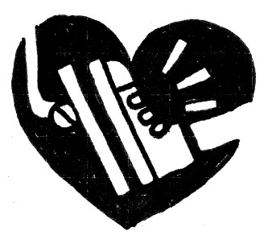
さあ、進みたい方向に頑張っても頑張っても進ませないこの「心のブレーキ」。
自分と同等の力で押し戻してくるのですから手ごわいです！
「自分との闘いだ」などとよく人はいいますよね？
気合を入れて、「何とか頑張り続ければ、きっといつか幸せはやってくる！」と。
もちろん第１章の２節『高望みはやめましょう」と言われても......できない！」でハイリスク状態に追い込むことの効能について書いたように、がむしゃら一心不乱に頑張ることも大切。
努力し工夫を続けるからこそ、望んだ結果を手に入れられることは事実です。
ただ、無理やり力づくで頑張りすぎると、本当に体を悪くしてしまうケースもあります。
自分の中に、抵抗している何かがあるわけですから、それをよ〜く見てみませんか？
無視しつづけると、ひどくなれば「婚活うつ」にさえなりかねません。
出会っても、相手の気になる点が見えてしまい交際さえままならない、という方は女性だけでなく、草食系が叫ばれて久しい今では男性にも増えています。
モチベーションが上がりにくい環境の中で、何度も何度も努力し、気に入った相手に巡り合ってもその方から理由も告げられずに断られたり......。
インターネットで知り合う場合、ある日突然音信不通になるということも良くあります。
婚活って、精神的に苦しいことも多いですよね......？
相手に過剰に期待してミスマッチを繰り返してしまうと、またまた「あの思考」が始まるわけです。
「『こんな自分』だから、結婚してくれる人なんていないんじゃないか？」。
そしてその証明を無意識に求め、自己嫌悪をさらにいたずらに強化してしまう......。
「私なんて誰からも必要とされてない」
「何の価値もない」
「関心を持ってくれる人なんていない」
「そもそも自分が幸せを望んだことが間違っていた......」
「死んだ方がまし」？
そうなってしまうと、まさに「うつ」状態ということになりかねません！
だからこそ、「自分のブレーキ」を理解することが大事です。
「自分」という全体が悪いのではなく、自分の中の一部が、何か理由があって過剰反応しているだけなのですから。
なぜ、努力しているつもりなのに出会えないのか？
なぜ、交際しても毎回相手のことが嫌になってしまうのか？
なぜ、うまくいきかけるとトラブルが起こるのか......？
抱えているパターンは人によっていろいろですが、「私のせい......」とひとくくりにしてしまうのは自分を苛めているようなものです。
すべての問題には必ず具体的な原因があります。
同じところで何度も足踏みをしているなら、「何が抵抗を起こしているのかな？」と考えてみた方が解決は早いです。
だからこそ、この「心のブレーキ」にもっと前向きに興味を持ちましょう。
何かを言いたいから、自分の中にある無意識のブレーキが作動しているのかも？ と。
考えてみてください。
普通、車や電車に設置されているブレーキは、いったい何のためにあるのか。
それは......
いざという時に「安全を守る」、という目的がありますね？
自分の中の、その「結婚に抵抗している部分」も、一般論で言えばまさに車のブレーキと一緒で「安全を守る」ため、と言えるのかもしれませんよね。
自分の「心のブレーキ」は、危険から自分を守ってくれる！
「え？ でも、ブレーキは私のしたいことをずっと邪魔してばかりで、危険なんておきていないじゃない！」と思うかもしれません。
確かに、確かに。
私たちの無意識のブレーキは、危険どころか、何も起きてないのに、前に進むのを止めたりしますよね。
ということは......
どうやら、私たちの深層心理には「『結婚』とは危険なもの」という信念がインプットされている......のかもしれません。
第１章でやったエクササイズ「ちょっと、結婚したくないふりをしてみましょう♪ 」
（「あなたが結婚しない目的は何ですか？」などの質問です。）を思い出してみてください。
「結婚したくないふり」をしただけで、結婚にまつわるいろんなことを避けたがっている自分自身が見えてきたと思います。
自分の無意識のブレーキは、一体何を安全でないと感じているのか？
一体、何に反応して、ブレーキが自動的に発動してしまうのか？
その仕組みは、一人一人が微妙に違います。
（ですから回答例にちっともピンとこない場合もよくあります。）
ブレーキの利き方も違うし、結果的に引き起こしてしまうトラブルのカタチも一人一人微妙に違ってきますよね。
自分の無意識層を探るには、表層にある「思考」を止め、自分の体の「感覚」を探っていく必要があります。
その「体の感覚」を、無意識にどう意味づけしてしまっているかに気づくことが大事なのです。
実際、自分がなぜうまくいかないのか頭で考えても、出てくるのは理屈でひねり出した憶測ばかりで、それは気づきや癒しにはつながりません。
ちなみに、「心のブレーキ」は何のために一生懸命そこで頑張っているのか......その純粋な無意識の目的はいったい何なのか。
これを発見するには、専門的なスキルを持つカウンセラーやセラピストにセッションを行ってもらうのが一番。
ですからここでは、カウンセリングやセラピーなどとと言われているものの一例として、私はどんなふうにやっているかをご参考までにご紹介します。
抵抗している「心のブレーキ」の大事な目的を探るには？
１．例えば、「この人は十分私を愛してくれているようだし、結婚の話をすすめたい......なのに、毎回結婚の話になると、なぜか私のほうがスルーしてしまい、ついつい話題を変えてしう......」など、何でもいいのですが「自分がこうしたいのについつい違うことをしてしまう」ということを思い出します。
そして、その具体的瞬間を視覚的にイメージし、その体験を体で十分に感じてみましょう。
２．それを思い出すと自分の体に、何か「抵抗」というか、「行きづまっている状態」を感じますか？
それは体のどこに、どんなふうに感じますか？
（例えば「胸のあたりが妙に重くて突っ張る感じがする」など、通常そのストレスは体感覚の中に残っています。）
３．自分にとって大切な人が自分の中にいるかのように問いかけます。
「あなたは、こうやって○○（例えば結婚の話）に抵抗することで、何を得ていますか？」
（この際、頭で考えようとすると自分の知っている理屈で答えらしきものを想像で出してしまいがちです。ですから例えば、小さな子どもや、あるいは犬や猫のような、言葉の分からないペットの気持ちを探るように、「相手の気持ちに寄り添って共感してみよう、わかろう」とする感じです。）
４．ネガティブな内容だったときは、さらに同じように優しく質問し続けます。
例えば「『どうせダメなんだ』と思うことで、なにを得ているの？」
５．明らかにこれが「心の中の大事な目的」だと感じられる答えが出るまで、辛抱強く何度も質問をつづけていきます。
最終的に「自由」「安全」「身を守っている」「幸せ」「満足」など、すっきりした気分で、肯定的な言葉が出て出てきたら、それがあなたの「心のブレーキ」の深層部にある大事な目的です。
あなたの「心のブレーキ」にはどんな大事な目的がありましたか？
「安全」や、「自由」や「幸せ」など、何が出てくるかは人によってさまざまですが、なんらかの肯定的な意図を発見できたのではないでしょうか？
それは往々にして、小さな頃から自分の身を守るために、あなた自身がとった戦略だったのですね......。
「抵抗している自分」に気づいたら、それを判断しないで、慈しんで大切に受けいれます。
人によっては昔の忘れていた体験を思い出し、わけの分からない感情が上がってくる場合もありますので、 感情は無理に理屈で説明しようとせずに、そのまま優しく受けいれ、何も考えずにただ感じつくしましょう。
私たちの心の奥の無意識には両方の気持ちがあり、よく葛藤をおこします。
ところが私たちは、そうとは知らずに望まないほうの気持ちはついつい無かったかのように無視してしまいがち。
心の内側で大きな抵抗にあっているのですから、私たちが時にスムーズに結果を出せずにいるのは、ある意味当たり前ともいえますね。
「結婚したい！ 結婚しなければ死んじゃう......！」
などと、強烈な気持ちが強くなるほど、不思議なバランス感覚でそれに抵抗する気持ちが心の中に生まれてしまう......。
心の中で葛藤を抱えている状態というのは、先ほどもお伝えしましたが、思い切りアクセルを踏みながら同時に、まさに「ブレーキ」を踏んでいるような状況。
本人にとっても苦しいため、小さい声の方をついつい無いもののように扱ってしまいがちですが、こういうワークを丁寧に行っていくと、初めて自分の中にリアルな二つの気持ちが同居していることが立体的に実感できます。
この、まるで喧嘩状態みたいになっている二つの要素が心から協力し合えるよう、小さな声の方にも大事に耳を傾けることですね......。
それではこの「心のブレーキ」が一体どんなふうに人に作用し、それを超えることでどんな引き寄せが起こるのか、具体的にお伝えしていきます。
成婚した人は、意識したか無意識なのかは人によりますが、素敵な「ミラクル」を引き寄せています。
ちょっと成婚事例を何人かご紹介しましょう。
（※以下、すべて仮名）
ここ二か月程の自分の中での変化は驚くものがあります。
湯田さんのカウンセリングは、結婚を目的にしながらふだんの人間関係や仕事の中でのコミュニケーションの取り方、いかに人生を豊かに生きていくかなど、あらゆる面からコンサルティングしてくださり、私自身の心の持ち方を変えていく効果があるからだと思いました。
「ただ結婚する」ことだけでなく、人生の目的や希望をみつけて進んで行くことが大切で、それにより、いまは自然に結果もついてくるのだと思える自分がいます。
ここまで来れて感じたことは、「自分を信じること」「周りの人を信じること」。
これがすべての始まりで、このことに気づかせてくれた湯田さんには感謝の気持ちでいっぱいです......。
（松山）
松山さんは、ある日、
「パートナーシップってどういう意味かやっと分かってきました！ すごく感謝しています。いままで感じていた男性への期待や不満も、手放せそうです！」
と、突然伝えてくださいました。
ただ、このコメントをくださった時はまだ、決まった方はおろか候補となる男性さえ現れていませんでした。
松山さんはその時、
「なんだか本当に時間の問題で、すぐに出会える予感がします」
と、あくまで謙虚に、 自信を持って話しました。
そしてしばらくして、その通りの結果を引き寄せたのです。
松山さんは、とても控えめで優しい性格なのですが、時々正義感ゆえの険のあるところが垣間見えました。
婚活はどんな感じだったかというと、何度見合いをしても相手の方は必ずと言っていいほど気に入ってくれるのに、どんな人ともその気になれない......
そしてなんとなく、怒りというか、男性を上から見ている感じがありました。
一体この怒りの正体はなんだろう？と、いろいろとお聞きして分かったことは------。
松山さんのご両親は幼いころから不仲で、特に苦しかった体験として心に刻まれているのは、お父さんの浮気の発覚......。
子ども時代に大好きだったお父さんは、同時に自分にとっても「裏切り者」に変わり、それ以降は母親に過剰なくらい肩をもち、母親を満足させるように生きてきたのだそうです。
多くの女性がそうですが、父親への潜在的不信感は男性不信をもたらすだけでなく、権威的なものに対する過剰な不信感につながりがちです。
「父親」とは、家族にとって「権威的象徴」だからです。
「誰かに導いてほしいのに、相手（父をはじめとする男性）を信じられない」という葛藤だったのかもしれませんね。
松山さんが変化し始めたきっかけは、仲間と共同で行ったプロジェクトでした。
そのプロジェクトはお友だちが持ちかけてきてくれたものですが、松山さんを講師として一つのスクールを作るというもの。
そこで、その仕事上でのパートナーシップや、自分自身がどうしたいのかを中心にカウンセリングしていきました。
同性のお友達をリーダーとして体験したことで、松山さんは、今まで男性に対して特に不満を感じていたことに気づいたようなのです。
お友達が男性でなかったのが功を奏し、リーダーに不満を持ったらそれを自分から助けていくことでうまくいき、「これが湯田さんが言っていたパートナーシップってことなのかもしれない！」と、実感できたそうなのです。
つまり、松山さんの結婚を阻んでいた最大の「心のブレーキ」は、
「男性はリーダーであるべき」という思い込みだったのかもしれないのです。
そして「こうやって男性を助けていくことが『結婚』なら、自分もパートナーを持つことはできる。あとは時間の問題」と結婚へ向かっての大きな自信となったのです。
その後、１か月もしないで、
「実は、ちょっと職場で気になる人が......12 歳歳下なんです。まだ私の年齢は明かしてないんですけど......」と嬉しい報告。
年齢差がある場合、恋愛としては成立しても「結婚」となるとなかなか成婚までたどりつかないことが多いので慎重に進めましたが、もう本人の中に迷いはありません。
だって彼女にとり、「パートナーシップとはリーダーシップを発揮すること」なのですから。
なんと！ お見合いでもないのにたった３か月で、お相手にプロポーズしていただくまでに運んでいくことができたのです♪
今もお二人で幸せに暮らしています。
彼女はもともと、彼を捨てた罪悪感と失恋の痛手から入会してこられた方でした。
入会後に大恋愛を体験したのですが、自分が超依存的になってしまい結婚に至らず、それからはず〜っと臆病になってしまい「自分が好きになりそうになると相手が猛烈にその気になり、怖くなって逃げる」という繰り返し。
何人もの男性が彼女に恋しましたがなかなか彼女をその気にさせることはできず、時にちょっとその気になる男性が現れても、交際してしばらくすると結局もっちさんから嫌になって振ってしまう......を繰り返していました。
もっちさんは、男性に対して依存的になってしまいがちな自分に自信がなかったようなのです。
そんなもっちさんでしたが、年齢もアラフォーに差し掛かり、ここ数年はさすがに自分自身のパターンの繰り返しにもいい加減飽き飽きしたそうです。
「もう『婚活』を終わりにしたい！」。
そんな決心が固まってきていたとのことでした。
もともとの彼女は目標設定など好まない方だったんですが、その年の初めは
「湯田さん......。私は今年中に絶対退会します！......つまり、結婚します。」
と、珍しく自分から言い出して私をびっくりさせました。
そしてその年の夏頃、「もう、決めました。来月中に成婚退会します！」と。
意中のお相手は職場の店長。
実は、彼が自分に好意を抱いているのは前から分かっていたそうです。
長期のカウンセリングとさまざまなトライアルの体験から、
「自分が心を開きさえすれば、相手に恋愛感情を抱かせることはできる......」
と予測できていたようです。
たった一つ怖かったのは以前のあのときのように
「自分が本気で彼を好きになったそのとき、自分の感情におぼれすぎちゃうかもしれない......」こと。
ダメになった以前の恋愛体験が思い起こされ、関係が一気に深まることに対する強烈な不安があったんですね。
でも、案ずるよりも産むが易し。
もともと「慎重すぎる彼女」は、自分が思う以上にすでにすっかり成長していました。
彼には自分からアプローチし、告白してもらうよう仕向け、深い関係になる前にプロポーズしてもらうことができ......。
そして本当に「１か月以内の『成婚』退会」の約束を、見事に果たしてくれました！
もっちさんにとっての「心のブレーキ」は、「自分は一人では何もできない」という思い込みだったのではないかと思っています。
活動期間がいい加減長くなってきたとき「自分は、前に進まなくてすむように、逆にこのカウンセリングにしがみついているのかも？」と気づき始めたようだったのです。
この現実を直視できたからこそ、「心のブレーキ」を手放す＝「退会」を宣言しようとしたのかもしれません。
「退会する」と宣言し、逃げ場をなくすことで、自分自身を追いこんでいったのですね。
そして結果は......本人が意図した以上に大成功でした。
目標に向かって腹を括ったときに出てくる一瞬の大きな力を目の当たりにした瞬間でした。
こんにちは。橋田です。
とても暑いですが、皆さんお仕事に婚活にと頑張っていますでしょうか？
簡単に成婚の報告をさせていただきます。
いや〜長かった。
かれこれ数えましたが、前の結婚相談所から数えると、おそらくは４〜５年近く活動してました。
（こちらでは、ちょうど１年間くらいでした。）
英雄やヒーローには必ず必殺技や武器があると思いますが、僕にとっての唯一の武器は「あきらめない心」だったかもしれないです。
もちろん、湯田さんのサポートがあったからです。
今までは、相手に寄り添うと我慢しはじめ、勝ち負けという感情が起こり、そこから抜けられませんでした。
が、なぜか......彼女と出会ったころは不思議と、そんな感情は湧かなくなっていました。
（橋田）
アラフォー男性の例です。
もともと、とてもまじめで誠実な方でした。
最初お会いした頃の彼の印象は、見た目ワイルドキャラなのになんだか物分かりが良すぎる感じがあり、「いい子のふり」をしているような、ちょっと妙な違和感を感じました。
キャラが立ち、話題も豊富なので、お見合い成立もあまり問題がないですし、そこから交際に発展していくことも多く、交際中も「どう？」と水を向けると「あ、順調です」と明るく答えます。
しかし交際状況をよくよく詳しく聞いてみると、なんだかずいぶんお相手の女性に「奉仕」していたようなのです。
私的な買い物にまで付き合ってあげて、挙句「買い物かごの中身を見ないでください！」などと言われ。
結果、買い物の間中、つかず離れずで遠慮しながら女性の後姿を追いかけているみたいな......なんだか女性から見るとモテないオトコの象徴みたいです。
彼の問題を本人は認識できないまま３か月たち、本人的には盛り上がり「さあプロポーズ！」と気張っていましたが、はた目から見ていると案の定......
「あなたと結婚したい気持ちにはどうしてもなれません」と断られてしまい......。
そして、その後、相手を替えつつ同様に「順調」という交際が続き、３か月したらまた相手が入れ替わり......。
こういう男性ってキャラはさまざまですがとても多いですよね？
ちょっと長く婚活している女性なら、何度も経験しているのではないでしょうか？
なかなか成婚に辿りつけない原因は何だろう？
本人に詳しくお聞きしヒントを探りました。
あらためて気づいたことは、彼の殺伐とした心象風景。
「人生なんてこんなものさ」という、シニカルで実利的な生き方でした。
彼はとってもまじめに婚活していたのですけど、もしかしたら本当には、女性を信じていなかったのかもしれません。
「オンナなんてこんなもんさ」と思っているようにも感じられました。
彼はかなり男性的なキャラなので「女性との交際」がまるで、狩りで猟犬が獲物を狙う心理に近い感じすらします。
追いかけて、辛抱して、ご褒美をもらえるのを待つ。
そして......「ダメなら次！」だったのかな、と。
だからこそ女性に対していつも必要以上に自分を抑えて、「我慢」していたのかもしれません。
もしかしたら女性から見ると、「誠実でいい人そうだけど、なんだか怪しい......」と、怖れや嫌悪感を感じさせていたかもしれません。
なぜそんな状態になったのか。先ほどの成婚メッセージでも本人自身がうまく伝えてくれています。
「相手に寄り添うと我慢しはじめ、勝ち負けという感情が起こり、そこから抜けられませんでした。」
彼の「心のブレーキ」は「女性からの承認待ち」と言えるかもしれません。
「ご褒美」を待ち過ぎていたからこそ、相手の女性を人間として対等に愛するという態度よりも、自分のプライドを捨てて所在無く買い物の後をついていくようなことになり、ますます嫌悪されていたのです。
そこに気づいてから私が提案したことは、「信頼」でした。
「信頼」があってこそ対等な関係が成立し、楽しめ、幸せを実感できます。
最初の頃、彼は、「信頼」の意味さえピンとこなかったそうです。
実際私がその話をしたとき、きょとんとしていた彼を思い出します。
そしてやっとそのころから、
「世の中や人間というものを、女性を、自分を、人間として信じていいんだ。」
と真剣に受けいれようとしたようでした。
それからの彼の態度は、憑きものが落ちたようにとても自然になっていったのです。
そしてちょうどそのころ......
シンクロするかのように、結婚相手となった運命の彼女と出会ったんです......！
結婚して１年経ち、「自分が思う以上に、相手からの愛をうけとった」と感じられるエピソードとして、会員用メーリングリストに下記の報告をくださいました。
プロポーズ記念日の前日に、ケーキを買い二人でお祝いし、当日は彼女から「１年前ありがとう。私の選択は間違ってなかった。」との言葉をもらいました。
文章で書くと、他愛もなく少しのろけでしたが、婚活中の皆さんにも、１日もはやくこの感覚を味わってもらえる日がやってくるよう祈っています。
以上、「心のブレーキ」を超えていった実例を３つお伝えしました。
結婚することを非常に深いレベルで決めていて、「自分にとって一番『足りない』と思ってしまっているもの」＝ないものねだりのようになっている「心のブレーキ」を、勇気をもって手放したことで、結果的に「結婚相手を引き寄せた」のです......！
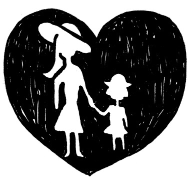
さて、この章では、心のブレーキの元になる「愛着に対する心の仕組み」についてじっくり触れていきたいと思います。
過去の失恋の痛手から、それ以来なかなか人を愛せない、という方は本当にたくさんいらっしゃいます。
その原型となる体験は、大なり小なり幼いころの両親や兄弟、つまり家族との関係ですでに起こっているのです。
記憶しているかどうかは別として、幼いころの家族との関係によって、その人の基本的な人間関係のパターンは形成されます。
家族との関係で自分自身のパターンの原型となる体験をします。
いくつか事例を挙げます。
子ども時代、家族との人間関係の中で生まれたパターンは、大人になった現在の男女関係に影響を与えます。
その影響がいかに大きいことか！ そのことが分かるエピソードです。
きのうは、楽しいワークショップをありがとうございました。
僕は、その中で出た「父親ってなんだろう？」という話にはかなり考えさせられました。
僕はあそこまで強く、かつ日常的に「父親」という存在を意識したことはないですね。
ただ、僕の母親が、父方のボケた祖父母の面倒をみているうちに体を壊して入院した折に、父が「元気になってお母さんが退院したら、また面倒をみてもらう」と話した時には、僕は激怒し、妹は泣いてました。
その時に僕は、「ああ、この人は自分たち兄妹の父親であることよりも、ボケた祖父母の息子であることの方を優先するのか！」と思い、失望しました。
さらに「自分が惚れた女（母）よりも、親優先かよっ！」とも思い、情けなくなったのをはっきり覚えています。
結果的に母親は、退院することなく亡くなりましたし、祖父母もその後、数か月のうちに相次いで亡くなりましたけど......。
僕が「父親ってなんだろう？」と考えたのはその時くらいですかねぇ。
後にも先にも。
僕がもし家庭を持ち、子どもができたら、自分の親の優先順位はものすごく低いですね。
「僕、お父さんの老後の面倒は一切見ないから、そのつもりで。」って話すと、父は、「分かってるよ」といいながら、寂しそうな顔をするんですけどね。
（岩田）
岩田さんはこのころ、お見合い相手と結婚を前提に真剣交際中でした。
とてもまじめで前向きで、優秀で責任感のある方ですし、女性にはとても優しいのですが、お父さんに対してこれほど激しい怒りがあったということはこのメールで初めて知りました。
「お父さんがお母さんを大切にしなかった」と、ずっと許せなかったんですね。
ただ......。
なんだか、お父さんに対して必要以上に怒っているようにも見えませんか？
正義感のようにも見えますが、何に対する正義なのでしょう？
もしかしたら岩田さんは、お母さんの目線でお父さんやお爺さんお婆さんを見ているのではないでしょうか？
お母さんを大事にしたいがあまり、「父親は母親のパートナーなのだからかばうべき」「一家の長として母も子も年老いた両親も支えるべき」という信念が強くあったように見受けられます。
「片方の親への愛情を証明するために、もう片方を悪く言ってしまう」なんてこと、ありませんか？
本当に......「親」ってなんでしょう？
例えば「親は子どもを導いてくれるものだ。」と信じているとしたら、ありのままの親の態度が許せないのは無理もありません。
それにしても、私たちはどうして親が「こうあるべき」だと思い込んでしまうのでしょうね？
他の親の、ほんの一部分だけを見て比較したりして「自分の親はだめだ......」などと信じ込んでしまいがちですよね。
あるいはテレビのホームドラマの理想的な両親像と比較してしまったりします。
岩田さんのケースを冷静に、客観的に想像すれば......。
もしかしたら、お父さんは心情的に自分でも辛さを隠しながら、親の面倒を看るためにどうしてもお母さんの手助けを必要としていたのかもしれません。
あるいは、お父さんはなんらかの事情があって、お母さんが抱えていた辛さをまだ理解できずにいただけなのかもしれません。
とても小さな子どもの頃、両親が喧嘩しているのを見てすごく不安になった記憶はありませんか？
もう忘れてしまっている方も多いかもしれませんが、小さな子どもの頃両親の諍いを、何とか和解させようとした記憶がある方もいらっしゃるのではないでしょうか。
子どもが間に入って和解できるくらいの諍いなら微笑ましい話として終わってしまいますが、それこそ子どものことが見えなくなるくらい罵詈雑言を浴びせあうような大喧嘩なら。
親にとっては痴話喧嘩の域だと思っていても、子どもにとっては目の前で自分の数倍の力を持つ大人同士が全力でぶつかり合っているのですから、圧倒的な恐怖を感じてしまうのは想像に難くありません。
それが、幼い子どもにとり何回も続くなら、永遠に続くように思われ、今後の人生に「希望」なんか持てないかもしれません......。
状況は人によってさまざまですが、子どもは「何らかの手段を見つけなければ危ない」と感じた時、自分を防衛するためにその子なりの「自立の手段」を選択します。
中には岩田さんのように、もともとお母さんへの愛着があり、何か理由付けをして必要以上に父親を憎むことでお母さんにとっての「いい子」として振る舞う、という戦略を取る子供もいます。
同じようなケースでも、中には「どちらにも付かない！」と、誰にも近づかないで一人で生きる、という戦略を取る子もいます。
また、喧嘩しているからこそ「私が家族みんなのお世話をする。」と決める子も、あるいは「私が困ったことをすれば二人は仲良くなるかも」と無意識に決めて「悪い子」になって問題を引き起こす子もいます。
「もう見たくないし、自分がいなくなればうまく行くかもしれない」とひきこもり、扉を閉ざす子もいます......。
家族の中での役割は人さまざまで、その家族との愛着の構造がそのまま自分自身の根幹に形成され、その行動パターンはやがて自分自身の性格の一部となるのです。
そして、多くの方がもう了解しているかもしれませんが、 「異性の親」に対しての感情は、大人になってからパートナーに転移（投影）する傾向があります。
そういう意味では、岩田さんは母親に抱いた肯定的な感情を自分の将来の奥様に転移していくことになります。
ですから、彼の将来の奥様はとても大事にされるかもしれませんね。
が、必要以上の強い結びつき（ 癒着 ）は、長くなればどこかにストレスを生み、無理が生じる可能性もあるんです。
一方の親と深く結びつき、無意識に親の期待に応えて「良い子」として生きてきた人が突然、親に対して反旗を翻すことがあります。
ある日突然親との癒着の関係に気づくという話は、近年マスメディアなどでも取り上げられてきていますよね。
「一卵性親子」などと言われるほど仲の良い親子だったのに、ある日いきなり決別した、といった話がときどきあります。
私は、岩田さんがもし、この機会を逆手にとって父親を許すことができたら、亡き母との強い癒着を超えることができ、交際相手と結婚した後も、さらに信頼しあえる良い夫婦関係を作っていけるのでは？ と思いました。
そこで「亡くなられたお母さんのためにも、そして二人の今後のためにも、この結婚を機に、お父さんと話してみてはどう？」と勧めてみました。
実はそれを勧めた理由は、他にもありました。
岩田さんは当時、「自分の成績を上げてトップになることに夢中になり、実力があるのに職場全体が見えず、リーダーにはなれていなかった」そうなのです。
先ほどもお伝えしましたが「父親像」とは「権威の象徴」的な意味合いがあります。
お父様と仲良くすることで、権威的な存在への理解も進み、リーダーシップを自然と受け取れる可能性があるのです。
岩田さんは素直に実行しました。
お父さまとのコミュニケーションを心掛けたところ、父親を許せただけでなく、なんと「皆の面倒を見て皆を勝たせるリーダー」として、自分の在り方も成長し、それに伴い部署も責任ある部署に替わって行ったそうです。
親って、私たちにいい意味でも悪い意味でも「見本」を示してくれます。
もちろん「反面教師」としての鏡でもありますから、私たちは、彼らをみて「間違い」をも体験し、そしてそれを自分の学びに生かすことができます。
だからこそ、彼ら（親）を超えて、さらに進んでいくことができます。
先人たちのやってきたことをありのまま認め、そこを超えることで「歴史は進歩してきた」と言えるのではないでしょうか？
そう考えると親は、「私が超えるための土台を作ってくれた人たち」ということができるのかもしれません......。
「いや、絶対に許せない！」と、今も親たちに感じている方は、もしかしたら何かを「親に期待している」のかもしれません。
それはまだどこかで自分自身を「子どもだ」と思い込んでるのかもしれません。
自分を責めないでくださいね。
「ああ、親にまだ期待してるんだ......」と自分自身を受けいれましょう。
さて、あなたはもうすっかり昔のことなので忘れてしまって、傷も癒えていると思い込んでいたことが、ふとした瞬間に亡霊のように出てきたりしたことってありませんか......？
とても納得できない受け入れがたい体験は、忘れようとしても体の中にその感覚が記憶されてしまうため、何かのきっかけで、まるでフラッシュバックのように思い出され、長く自信を取り戻せないことがあります。
男女関係にかかわる傷は、ほとんどの場合、その傷ついた体験が幼少期の親や兄弟など家族との未完了な関係性へと見事にリンクしていきます。
数年前、カウンセリングに訪れた女性、恵子さんの話です。
恵子さん 別の結婚相談所に登録していたんですけど、お見合いした人と交際し、先日成婚料を払って退会したんです。
相手の方は素敵な人だし、ずいぶん一生懸命愛してくれているのだけど、私はなんだかピンとこなくて、前に進む気がしないんです。
いま、自分の本当にやりたいこともあるし、そのためにもこの結婚はとても良いタイミングだと思うのだけど、例えば周囲の友人から、「あなたは性格的にもっと盛り上がらないと物足りなく感じるタイプじゃないの？
もっと本当に合う人を探した方がよくな〜い？」といわれたりして迷ってしまって。
その友人は、元カレとのことを知っているからそう思うのかも......。
確かに、その前の恋愛は、相手の男性とものすごく激しく盛り上がったんです。
あんなに恋い焦がれたのは初めてだった......。
私 前の恋愛は、どうやって終わったのですか？
恵子さん 相手の男性がなぜか突然いなくなっちゃって......。
理由は分からないんです。
......実は、形の上で「不倫」だったので。
私 不倫ですか......？
不倫って、自分の罪悪感を刺激するので、中毒症状みたいに激しく燃え上がりがちですよね。
（このあたり、かなり彼女は敏感に反応している）
終わりが見えているからこそ、ますますその一瞬の感情に浸りたくなる。
恵子さん 確かにそうでした。
奥さんとは別居していたんですけどまだ別れてなかったので......。
（突然びっくりしたように）
そういえば......今分かったんですけど......あの恋愛、私は母親の『追体験』をしたかったのかもしれない......！
実は、私の生い立ちはちょっと特殊で、母は父と結婚していなかったんです。
一緒に住むことも許されてなかった。
でも私は、母にとても大事に育てられ不満も特に持たずに、幸せに生きてきた、つもりだったんです。
けど、それはおそらく母がとても芯の強い人だったからだったんですね。だから、私を寂しがらせたりせずに生きることができたのかも......。
私は......（涙）、昔からそんな気丈な母が大好きだったんです。
......母が他人の夫を愛していくことができたのはどんな気持ちだったのか、体験したかったのかもしれない。今分かった......。
幼少期からの「その傷」があったから、無意識にあんな苦しい体験をしてみたかったのですね......。
彼女は自分が片親だったという体験もあったからこそ、「他人に迷惑を掛けるようなことなど望んでいなかったのに......
どうしてこんなことしちゃったのか？」と、自分を責めていたのかもしれません。
「あの激しい盛り上がった感情は、大好きなお母さんの気持ちを追体験したかったんだ......」と了解でき、そこにある自分の罪悪感を受け入れたことで、未完了な過去の恋愛を完了したんです。
恵子さんはその後も半年に一回ペースで、時々カウンセリングに訪れました。
今回のカウンセリングで、結婚願望があまりにも低い理由は自分自身の生い立ちにあるのだということを了解し、結婚へ向けて進めようと。
その後も少しずつ少しずつ、お相手の方と距離を縮めることができてようやくめでたく入籍！
生まれた時から家に父親がいないという体験をしている恵子さんは、母親から充分な安定した愛情で育てられた、と本人自身が感じられて過ごしてきたためか、通常の人間関係はとても安定している素敵な方です。
ただ結婚となると「家庭の中に男性がいる」体験自体に前例がないため、ついつい無意識に、男性に対する愛着を回避してしまうようで、お相手の方との関係に心から安心することが難しかったらしいのです。
面白いもので、前述の「お母さんの追体験」という気付き以来、数回のカウンセリングの中でお母様への気持ちも微妙に変化してきたそうです。
あの「絶対的な存在」から、「リアルな、弱点もあるお母さん」と受け留めることができたとのことで、対等な関係に変わってきている感じが伝わってきました。
現在、恵子さんは夫の仕事上の都合で仕事も中断し、一番の関心事である不妊治療に前向きにいそしんでいます。
結婚生活でのなにもかもがご自身にとっての「初体験」。
楽しみながら、幸せなつながりを意図して、彼女のさらなるチャレンジはつづいています♪
私たちは誰かと本気で向き合う時、無意識レベルで「親、あるいは親的存在への愛着との関係」を思い出しています。
多くの方にとって、生まれて初めて体験する自分以外の存在は、ほとんどの場合、親だからです。
赤ちゃんは、生まれたばかりのときは「自分」という概念がまだないので、何もかも一体だと感じています。
そして「この（自分の）手と、このおっぱいは別の物なんだ！」と、あるとき初めて認識します。
そのときはじめて「自分」と「自分以外」という存在を自覚します。
「自分の体なら自分で動かせるけれど、他人の体は動かせない」ですものね？
他人と関わることがどれだけ勝手が違うものか。
今まで子宮の中にいた時は自動的に満たされていたはずなのに、おなかがすいて、泣いたりしなければ欲しいものは自分のそばにはやってこないのです！
自分にとって一番の「愛着の対象」という体験として、「親との関係」を思い出さざるを得ないのです。
さて。
恐らく大多数の方が、どんなに素晴らしい親にも一度や二度は不満を持ったことがおありではないかと思います。
私たちはどうもそういう風に感じるようにできているようです。
むしろ、「私は親に大事に育てられてきた」とおっしゃる方ほど、前述の恵子さんのように後年になってから「親との密接な関係」をもう一度見直すことも多いです。
ですからこれは、
「親に問題があるから結婚がむずかしい」とか、
「親を責めるべきではない」
などというような表面的な話ではないということを、分かっていただきたいと思います。
例えば恵子さんは、もともとお父さんのいない家庭で育っているわけですが、だからといって誰かに不満を持っているわけではないのです。
むしろ、そのストレスの行き場が思いもよらないところへ行ってしまった出来事、といえるのかもしれません。
最初の岩田さんの場合は、お母さんへの愛着ゆえにお父様を責め続けていたわけですが、こうやって見るとむしろ、ストレートに不満や怒りをぶつける相手が目の前にいるというのは、ある意味幸せかもしれないとさえ思います。
なんだか「反抗期は早いほど後が楽だ」という話にも似ていますね。
どんな人でも、幼いころの親や家族への未完了の感情が、パートナーや新たに作る家族関係に形を変えて投影されていきます。
このことを受け入れると、愛着の感情を「学習しなおす」よい機会になりますね。
幼いころから親との関係で、
「こんなにしてもらったのだから『こうしなければ』」、あるいは、「こんなにしてもらえなかったから『こうするべき』」
と思い込んで生きている方は、むしろこの「べき」「しなければ」という考え方こそが、自分を不自由な状態に追いやっているのだと気づきましょう！
何度もお伝えしてますが、理由は何でも
「だから自分を変えなければ」とか、
「親を許さなければ」と「べき」や「ねばならない」にはまり、罪悪感にかられたり自分を責めたりすることは、「心のブレーキ」を複雑化させる以外の何ものでもありません。
前に進んでも苦しいし、後ろに退却しても叱られる感じになり、どっちを向いても不自由な感じですよね？
それこそダイエットで言う「リバウンド」が起こりやすくなり、「負のスパイラル」にはまりやすいのです。
望む方向にスムーズに行くためにこそ、自分も他人も責めず、「ただありのまま、そのことを受けいれる」ことが大事なんです。
「もしかしたら両親も、今の自分のようにその時精いっぱいだったのかもしれない。」
などと対等な存在として受け止めることができると、過去の恨みから自由になります。
とは言え、今もご両親をまだ許せない方もたくさんいらっしゃると思います。
「自分の親は特別ひどいから......」と感じているかもしれません。
でも安心してください。過去に「特別ひどい」と感じていた方でも。
自分の中の「○○するべき」を手放すことで、やがて許し受け入れることができ、年月を経て愛や感謝を感じることができるようになった方を、私はたくさん知っています。
変化の可能性はすべての人にありますから、とにかくあまり無理しないで、「まあ、できれば許せたらいいかもね」くらいの気分でいましょう。
さて質問です。
親を許せても、「誰かを許せない」と思うときはあるかもしれませんよね。
「もしあなたが、親や誰かを許せない！」と強く感じているとき、どんなふうに心がけたらうまくいくと思いますか？
答えは、「誰かを許せない自分を受けいれる」こと。
つまり「自分を許すこと」 。
「受けいれる」とか、「許す」ということをわかりにくいと感じる方へ。
これは「考え」ではなく「感覚」です。
実際にやってみましょうか？
まず、自分の体を感じると良いです。
まず、子どもの頃のことでもいいですし、最近起きたことでも構いませんので、「あれは絶対許せない」と感じた体験を、具体的に思い出してみてください。
頭の中はストーリーを思い出し、怒りとともにいろんな考えが浮かんでくると思います。
そこで思考ではなく、意識を体に向けるのです。
どうでしょうか？ 体のどこかが、緊張していませんか？
なんだか指先や肩などに力が入った方もいらっしゃるかもしれません。
「許す」という感覚は「緩み（ゆるみ）」とも似ています。
「心に緩み」を持つような状態です。
何も考えないで「緩み」を感じてみてください。
力を抜いて、リラックスして......。
さあ、それでは、「こうするべきだ」、「こうしなければならない」という時の、体の感覚を感じてみてください。
「親を許すべきだ」
「許さなくてはならない」
「でも親はやっぱり私を受け入れるべきだ！」
などと、自分の考えや信念が衝突している場合、なんだか、体の感覚もきっちり引っ張り合ったり押し合ったりして苦しい感じがしませんか？
余裕なく完璧を求めて生きてきた人ほど、この「心の緩み」を感じることは苦手かもしれません。
でも、その分効果的です。
まずは「情けない自分」、「恥ずかしい自分」、「無力な自分」をゆるゆると感じ、許し、受け入れましょう♪
いつも「ねばならない」を感じ、自分を緊張感で引っ張るのが癖になっている人は「こんな生ぬるい状態で大丈夫なの？」と思うかもしれません。
実はリラックスしたり深呼吸したりすることだけで、意識の変化に非常に効果があるのです。
普段から「べき」や「ねばならない」という意識が強いと体感覚の変化に気が付かない場合も多いのです。
「こうするべきだ」
「こうしなければならない」
とつい考えてしまう癖を持っている方は「べき」を、すべてその都度「こうしたい」と言い換えていくと効果的です。
これは一つの習慣を変える訓練だと思って、毎日やり続けてみるといいです。
だんだん、「誰かに命令されているのではなく、自分が望んでいるんだ」と、主体的な意欲が生まれ、心が自由になりますよ。
さて今度は、「チャンスがあってもタイミングよく動けず、結局いつも片想い......」という事例をご紹介し、その奥に広がる複雑な心理を考察したいと思います。
「同僚で気になる人がいるんです。
７歳年下なんですけど、どうもチラチラと目が合うし、私に関心があるみたいです。
ただ、恥ずかしいのか彼のほうからこれと言って誘ってくる気配がないんです......。
でも、こちらからアクションを起こして、変に動くことで今までのいい関係を壊したくないし......。
どうしたらいいでしょうか？」
「片想いを成就させたい」というご相談でいらっしゃる方には、私はいつも、具体的な会話内容などをお聞きして、相手の関心をさりげなくさらに惹くためには何ができるかを提案し、成婚を狙います。
ですが、この相談者のように「変に動くことで壊したくない......」とおっしゃる方が時々いらっしゃいます。
「壊したくない」といっても、まだ何も始まっていないと思うのですが......。
思うに、相手と何か新たな関係を作る事よりも、「好き」という「自分の気持ちが好き」みたいなんです。
その気持ちだけで満足してしまい、何かと理由をつけてそのままの距離を保とうとしてしまう。
いわゆる「片想い慣れ」してる人っていますよね。
10 代の頃、よくスターなどに抱いた「憧れの人」みたいなノリに似ていて、「好きでいること」自体に満足してしまい、もしかしたら、本当に現実としてのリアルな幸せを手に入れることを、最初からあきらめてしまっているのかもしれません。
こういった心理状態のために何も行動せずに、いろいろなチャンスを見送ってしまう人は婚活している人の中に案外多いのです。
そもそも何が原因でそういう気持ちになったのか、いろいろな人にその都度詳しく聞いてみたところ、実は多くの人が、人にあまり伝えたくないような嫌な体験をしていたことが分かったのです。
そのファンタジックな片想いの習慣は、現実の苦しさから逃げる「心の避難所」の目的があるようです。
どんな体験をしたかは人さまざまですが、幼い自分にとって絶望的な環境で、そこから逃げられない体験がある場合が多いです。
そこで「内なる世界」を持つことで、「心のシェルター」としての大事な目的を果たしていたんですね。
性的トラウマなどが介在しているケースも多く、その内なる世界は幼いころの苦しかった一時期を耐え忍ぶために必要だったのではないかと思われます。
いったんそういう場所を獲得しても、大人になる過程で知らず知らずに手放せる場合は良いのです。
ところが人によっては、その「お人形遊び」から覚めたくなくなってしまう、という場合があるようで、現実で誰かを好きになっても、すごく近づきたいのに無意識に近づくのを避けてしまう......。
だってそうですよね？
子供の頃の「あの辛さ」がまたやってくるかもしれないのです......。
無意識の生理的な反応なのか、本人自身はそんなことに全く気付かないまま、さまざまな理屈に合わない言い訳しながら、そのファンタジーに浸りつづけてしまう......。
心の内側に「自分だけの愛する小部屋」を持ってしまい、誰も入れずにピシャリと鍵をかけて、「心のマスターベーション」で終わってしまうのです。
「婚活がなかなかうまくいかない」という方の中には、どうもこの「ファンタジックな片想い」を繰り返している方も多いように思いますが、いかがでしょうか？
いくら外からリアルな相手が戸を叩いても、ファンタジーの世界の中の「完璧な絵のようなパートナー」と比較してしまうので、疲れたりすれ違ったり、イライラしたり臭かったり（！）する「現実世界の人間」が、「理想」と比べて却下されてしまうのは当然ですね......。
「でも、好きな人が心の中にいるっていいことじゃない？ ドキドキわくわくすることでいつまでも若さを保てるし」
と、心の中で「好き」という思いを大事にしてわざとその気持ちを掻き立てる人も多いです。
しかし、「ドキドキわくわく」って「リスクがあってこそ」ではないのでしょうか？
バーチャルな世界での楽しみは、それはそれで楽しめばいいのかもしれませんが、独身でこれから結婚したいと思っているなら、妄想にふけり続けることはあまり効果的ではないのではないか？ と思います。
もちろん、そこまで十分に分かっていながら「ジャニーズ系」や新大久保のイケメン韓流喫茶などに通うのは、「テーマパーク」のノリでファンタジーとドキドキわくわくを公然と楽しんでいるんだなと思います。
そういう場合、隠れてこっそりやると本人も罪悪感を感じ、それゆえ周囲からも「独りよがりでキモチワル〜い」と攻撃されかねません。
むしろおおっぴらに堂々とはまる方が、飽きたらすぐに手放しやすいですよ♪
問題は、自分のファンタジックな妄想が「現実だ」と信じ込んでしまっているケースです。
何度も何度も同じ繰り返しをしながら、自分が前に進めない原因が何か分からない場合。
自分の中にある恥ずかしさなどの「自意識」を手放して、現実と向き合う必要があります。
失敗のリスクなしに人生の変化は訪れないのですから。
「リスクに飛び込む」行為には、前述しましたがいろんな意味で大変なメリットがありますね。
自分を追い込むことで自分を「ランナーズハイ状態」にできる可能性が初めて生まれます。
もし仮に相手がノーと言ったとしても、伝えたという行為自体が自分の自信になったりします。 そうすると「出会いスイッチ」がＯＮになる可能性が生まれるのです！
つまり本気で結婚して人生を変化させたいと思っていれば、「失敗」だけで終わることなんてありえない！
たとえその時結果がノーでも、未来に向けて大きな学びをしたわけですから、「今回のエラーは、未来の成功を生み出している」といっても過言ではありません。
「リスクに飛び込む」、怖れを超えて望む状況を手に入れるんだと決めることで、いままで自分を守ってくれていた「心のブレーキ」を手放すことができ、新たに新鮮な体験がやってきます！
とは言え、前述しましたが、すべてのブレーキには大事な目的があるのです。
むやみに「頑張れ」と自分に強いても逆効果の場合もあります。
「片想い慣れ」してしまっている人から「一人遊びのお人形」を急に取り上げると、もしかしたら精神的にかなり不安定になるかもしれません。
すごくさびしかった子どもの頃、深い絶望感や無価値感を感じていたからこそ、「隠れ家」や「お話し相手」が必要だったのでは？ と考えられます。
スヌーピーの物語に出てくるライナス君が、いつも毛布を持っていなければ安心できないのと同じで、愛着の対象がどこかに欲しいのです。
あなたご自身がこのケースと共通していると感じられるなら、まずは「こんな自分」を、慈愛の気持ちを持って受け入れましょう。
それができて初めて、新たに別の選択が可能になります。
できれば、カウンセリングなど利用するのがベストだと思いますが、それがままならない場合は、ぜひ自分の中にいる「幼いままの自分」を受け入れ、いい子いい子してあげましょう。
自分自身のお母さんになる気持ちで、自分自身をときには甘やかしてあげるとか。
その上で、「隠れ部屋のお話し相手を手放し、現実のパートナーを見つける」という目的に、しっかり焦点を絞りましょう。
片想いの自意識過剰パターンはもちろん女性だけじゃなく男性にもあります。
「もうそろそろ出会って数か月になるのに、一向に関係が深まらない......」お見合いから始まる交際の場合、往々にして起こるパターンではないでしょうか。
男性の場合、カウンセリングの時に、話を聞いていても相手の女性のキャラクターや嗜好などが見えてこない。
こういう方は少なくありません。女性から見ると「モテない男の典型」のように見えるかもしれません。
一般的な、当たり障りのない会話だけで終わってしまい、しっかり相手と向き合っていないのです。
もちろんその奥にどんな気持ちが巣食っているのかは、女性側にとっては知る由もありませんが。
古田さんはとてもまじめで努力家な男性です。
「交際相手と頻繁に合うことで絆が深まる」 と信じ 「週に一回は必ず会う」 と決めているし、 いろいろと計画を練って楽しんでもらおうと、デートのときはいつも準備万端。
気が良くて誠実でほんとにいい人です。
交際中の彼女が「ジョギングをするので一緒に」と言えば、ついて行き彼女の真後ろを控えめに走る......そんな感じの男性です。
そんな交際中、女性が行きたいと言っていたあるイベントに二人で出席したそうです。
共通のテーマで話したりできる楽しいイベントなので、大いに気持ちが盛り上がって二人とも親密になって共感できたろう......と思っていたら---
「いや。あまり話しませんでした。彼女から『結婚を前提に自分と会っていることはみんなに話してほしくない』と言われたので。」
とのこと......。
「え？ そうなんだ。でもずっと一緒だったんだし、なんか話したでしょ？ 逆に公然の秘密ができると、ちょっとドキドキ感が出てきたりしない？ みんなには分からないようにこっそり一言伝えたりとか？」
と返すと、
「あ〜、そうなんですよ〜！ それやろうと......」
「うん！ で？」
「まあ結局、はっきり分かるようにはしませんでしたけどね〜」
「......」
せっかくのチャンスに全く会話しなかった？？？
こちらから見ると、「なんだかんだと理由をつけて逃げている」ように見えますが、本人はいたって正直に「まあ、今回は話せるチャンスがなかっただけなんですよ」と、全くご自分のついついスルーしてしまう問題には気付いてないのです。
そして、「今週は○○があって彼女忙しかったみたいだし。無理やり何かをして、迷惑かけちゃいけないし」
......そうやって毎回数々の違った理由を言い訳にしながら自分を納得させ「次回はもっと話しますよ、問題もないし」
そして、「こんなに自分は彼女のことを思って精一杯頑張っているんだから、この思いはきっと伝わっているし、次回はきっともっと親しくなれる」と、信じているようです。
でも、何度話を聞いても、相手がどういう人で、何を感じているのか？など、相変わらずさっぱり見えてこない。
話を聞くとどうも「相手にむやみに迷惑をかけてはいけない」といった考えが最優先され、自分自身の存在自体が相手に悪影響を与えてしまうかのように恐れ、異常に気を使っているのです。
それを超えてまで何かをするなんて「とんでもない！」と、固く動こうとしない。
その奥には「自分の存在は相手にとって迷惑に違いない」といった、強烈な自分を否定する思い込みがあるのが感じられます。
しかし、 本人はそこに全く自覚がなく「いや〜彼女、ホント素敵なんですよ......」と、赤くなり照れながら話します。
「そんな風に思っているなら相手に分かるように何か伝えようよ！」と励ますと、
「ええ。......そうなんです、やろうと思っているんですよ......次回やりますよ。」と、また同じ答え。
そして次回も......。
ある時、「２週間後、彼女を連れてドライブしたい」と何度も言うので、よくよく聞いてみたら............
「実は......その日にプロポーズしようかと思っているんです。」と............。
「え〜......っとね（深呼吸）。考えてみて。この状態で、彼女がプロポーズをＯＫすると思いますか？」
と、思わず聞いてしまいました。
するとなんと！
「あ、それは別にいいんです！」
う〜ん......。そこまで......か。
「あなたはよくても、彼女はよくないと思っている可能性があるかもね？」
「え？？？？ どういうことですか？」
一事が万事。
まさに「おひとりよがり」さま、なのです。
お見合いしたことのある女性なら、こういった男性に少なからず会ったことがあるのではないでしょうか？
女性の側にしてみたら、話していてもなんだか楽しくない。
「この人、私でなくても、女なら誰でもいいんじゃないの？」と思うときありませんか？
分かってもらえそうな感じが全然しなくて互いの距離が離れたまま。
「相手にも魅力を感じないから、そろそろ断ろうかな？」などと考えているような状態なのに、こんな風にいきなりプロポーズ......!?
古田さんに質問してみました。
私 それじゃ、夏子さんから『ごめんね。今まで真剣に考えてきたけど、やっぱり私、古田さんと結婚する自信がないの......』って言われたら？
古田さん 『あ、分かりました』って理由も聞かずに引き下がるの？
古田さん ああ。僕そういうタイプです。昔もそういうことあって、その関係はそこで終わりました。
（そりゃもちろん、彼女の希望を最終的に受け入れなくちゃいけないのは当然ですが、それじゃ、相手が何を悩んでいるのかなど、何も分からないまま!? ）
私 それじゃ、なぜ、わざわざ勝ち目がない状態でプロポーズするのかな〜？考えてみましょうよ。
それって、相手のために考えているんだと思うけど、もしかしたら実は『潔いスタイルが好きな自分』という、自己満足のためにやっている行動ってことになりませんか？
古田さん え？？ そうですか？......（「そんなつもりは全然ない！」と言いたそう......）
こんな風に、相手が結婚に不安になってしまい、「結婚する自信がないの......」と言っているのなら......
「何が気になるの？」と質問することで不安の正体を知ることができるし、
「......きっと大丈夫だよ、二人で力を合わせて前に進もうよ。」
と本気さを伝えることで、自分自身の情熱も伝わるのではないかしら？
それを「分かりました」と、どこまでももの分かりよく引き下がってしまう古田さん......。
裏を返せばそうやって、相手を一人残して「おひとりよがり」をしてしまうから、相手を不安にさせることにもなり、「古田さんと結婚する自信がない」という結果を作り出していたんだということがわかりますね。
彼にもやはり「片想い慣れ」の歴史を感じます。
「片想いの相手」に自分から関わると夢が消えてしまうかのような恐れがあるのではないでしょうか？
でも、愛とは「関係性」から作られます。
関わりを持たなければ、本物の愛を感じることはできませんよね。
そこが、「ファンタジーな片想いに浸りこむこと」との違い！ リアルなのです。
さて、それにしても、こういうときって本人の中で一体何が起きているのだろう？ と思いませんか？
こういう方は、男性だけでなく女性も意外にたくさんいます。
なぜそうなってしまうのでしょうか？
ちなみに古田さんのケースは、本人が幼少期の辛い記憶というものをあまり思い起こせなかったのです......。
質問しても、恥ずかしそうに「別に」「いや特に問題ないです」といった返答が多く、これといったパターンの根源がはっきりせずにおりました。
そうこうするうちに、夏子さんとの交際も、ある意味予想通り、終了しました。
ところが、夏子さんとの交際の過程で私が古田さんのパターンに気づき始めたあたりからでしょうか。
持病の気管支系の問題が続けざまに起こり、喘息がかなりひどくなってしまったそうなのです。
「婚活うつ」ではないですが、まさに体にそのストレスを抱えることになってしまいました。
感情を切り離してしまいがちな人は（男性には多いですが）、まさにストレスの出所が見つからず、体に出やすい傾向があります。
本人は全く気付いていなかったのですが、この「喘息」は、何か、誰かに絶望し、まさに「喘いでいる」様子に見えました。
このことをきっかけに、彼の忘却されていた過去を辛抱強く聞いていった結果、初めてその原因となる体験をありのままお聞きすることができました。
彼は、子どものころ、実の母親から何度か虐待めいた出来事があったそうです。
そして「分かってもらえないなら......」と母親に対し理解してもらうことをあきらめてしまったとのことでした。
とはいえ、以前から長男である彼に対し、母親はとても期待していたようで、家族のためにもその期待には応えなければと、感情を殺し粛々と「いい子」「いい人」のキャラを、ずっと生きてきたようです。
しかしそもそも、その頃なぜ母親が虐待めいたことをしてしまったのか......。
その理由が彼には今まで分からずじまいだったそうです。
大好きなお母さんがそんなことをしたとは思いたくなかったのか、ずっとその出来事を振り返りたくなかったし、実感を持てずにいたようです。
だからこそ、さまざまな女性に対し、それ以上近づくことを無意識に怖れていたんですね......。
目の前に椅子を置き、その椅子に座っているお母さんをイメージしてもらいました。
そしてそのお母さんの中に入り、お母さんがどんな体験をしているのか？
彼に内側から感じてもらいました。
話してもらっていくうちに、お母さんの感じていたであろう孤独感や苦しさを彼自身が感じとることができました。
お母さんは、その頃お父さんと共感しあえず、妻として、母としての責任を果たせない自分に苦しんでいた......
だから長男である彼に期待せざるを得なかったのか......と、彼自身が気づいたのです。
彼にとってはお母さんは一番愛着を求める相手であり、そして自分を一番必要としてくれている人間でした。
虐待めいた行動をしながら、「ごめんね」と繰り返していたお母さんという象徴的存在は、彼にとって「女性というものは理解不能な怖い生き物だ......」というブレーキとなり、ずっと作動していたのではないでしょうか。
彼は愛と怖れの両方から、何よりも第一義的に「お母さんの期待に応えなければ」と、自分を犠牲にして尽くしてきたようです。
大人になって、交際相手に対しても自分に犠牲を強いて（そして、ひそかに自分の愛着を受け止めてもらおうと期待しながら......）、ひたすら尽くしてしまうパターンを持ってしまったのです。
その結果、「優しくていい人だけど、何を感じているのかよく分からない、つまらない人......」と女性に思わせていたのです。
そして断られるたびにますます、「自分は絶対に近づかない」という、「我慢」のパターンを強化してしまっていたのですね......。
この気づきをきっかけに、古田さんはお見合いや交際を繰り返すうちに、彼自身も自分のうまくいかないパターンが、少しずつですが自覚できるようになりました。
もともと誠実な人ですから、彼と交際した方は彼と婚活友達のようになり、人間関係作っていき......そして見事、素敵なパートナーを手にすることができました！
会ったその日に、彼は自分がとても惹かれていることを正面から彼女に伝え、そして彼女はそれを受け取ったのです！ （この詳細は最終章でじっくりと。）
「女性は理解不能な怖い生き物」と感じ、無意識では「絶対に近づかない！」
とブレーキを踏みつつ、頑張って前向きにデートをしているときに、自分がうまくいかなくなるまでの心理プロセスを語ってくれました。
まずは何らかのきっかけで相手より自分自身に関心が向きます。
例えばデートコースでアクシデントが起きたりすると、
「自分はこれに対処できるだろうか？」
といった疑心暗鬼が起こるそうで、相手より自分自身に関心が向きます。
気づけば自意識過剰の「一人語り」が始まる。
この段階ならまだ修復可能なのですが、その後、「挽回しなくちゃ！」と焦って「どう見せるか？」とあがいてしまう......。
この「あがき」が問題なのは、相手のためというよりはむしろ「自分はこんな風なんだ、ということを相手に見せて証明したい」という衝動なんですね。
この自意識過剰な「承認願望」は、うまく行かない恋愛をしている時、というか、うまくいかないすべての人間関係で、意外に多くの人が陥るパターンではないでしょうか？
何かをついつい「証明したくなる」という時は、自分自身が、実はそれを信じてない時ですよね？
ですから、証明している内容は、相手にとって全く面白くはないはずです！
自分自身が「こういう人だ」と必死で証明しているその長い時間、相手にとってみれば非常に退屈な時間になっていきます。
だってそうですよね？
その愛しているはずの相手のことは全く考えてなくて、ただただ相手にとって「自慢話」をしつこくしつこく聞かされているようなものなのですから......。
この自意識過剰型のうまく行かないパターンを持っている方は、自分を「恥ずかしい存在だ」と思っています。
「自分だけの秘密の小部屋」があって、そこにいつでも姿を消して逃避できる感じです。
でも、「自分だけの小部屋」なんて、もったいないです。
むしろオープンにしましょうよ。
堂々と窓を開けて風を入れれば、愛するパートナーを、そこへ招くことができます。
結婚後、相手にすべてさらけ出せるように、今から「恥ずかしい自分自身」を受け入れて、堂々とさまざまな人と自己開示し語り合いましょう。
しっかりとコミュニケーションさえできていれば、二人でこの「妖しげな楽しみ」を共有し、さらに深くつながり理解し合うことができますよ♪
言ってみれば、ある意味私たちは、１００人中１００人が「自分だけの小部屋」を持っている、ともいえます。
一人妄想し、妖しげな気持ちに浸りながら、心のマスターベーションができる避難所を。
ですから、それを恥ずかしいと思ったりいけないことにしてしまうと、どんどん自分のありのままの状態を無視してしまうことになります。
それは幼い時、危険を感じたから隠れていた場所です。
ちっとも悪いことじゃないし、恥ずかしがる必要はありません。
ほとんどの人が、今まで性的な興奮をしたり、なんらかの妄想を懐いた経験はあるのではないでしょうか？
そこに罪悪感を持ち自分をずっと恥ずかしいと思っていると、自分がどうみられるかばかりが気になり自己嫌悪に浸り込むだけでなく、他人のことも「情けない！」「見たくない！」と思い始めてしまいます。
いわゆる、「キモい独りよがりのナルシズム」と本当の「自己愛」とは違うもの......と思われていますよね？
でも実は、同じものに対して、ものの見方が違うだけなのです！
それが前述の、誰にでもある「妖しげな小部屋を自分がどうとらえていくか」ではないでしょうか。
誰だって実はナルシストだし、ほとんどの人がエッチだったり、人に言えないような恥ずかしい要素を持っているのですから。
むしろ、「お互いの小部屋を覗き合い、分かち合うことこそ、結婚生活の営みを深めてくれる」と考えてもいいかもしれません。
夫婦とは、結婚とは、そもそも淫靡なものです。
誰にも見せたくない恥ずかしい自分を安心して見せ合える関係になると、お互いの昔の傷も癒しあえる関係になっていきます。
ですから、夫婦になってからセックスに飽きたり、別の異性に意識が向いてしまうという方は、お互い深く開示することを避けている可能性大です。
結婚後もその都度、抵抗を超えてさらにつながると、パートナーとさらなる絆が深まり、どんどん歩調があっていきます。
十分な絆を作り上げた夫婦間のセックスは、シングルのときには決して体験できない、丸ごとすべてを受けいれあうことができるゴージャスな至福の体験です。
よりたくさんの人が、結婚相手とのセックスを豊かに楽しんでいただきたいものです。
さて、先ほどの古田さんの事例もそうでしたが、家の中でお母さんは子育てや家を切り盛りするのに孤立状態だったのかもしれませんね。
「父親は何をしていたの？」という会話を良く聞きますが、実際「夫婦の絆」が家族の構造にいかに影響を与えているか、ご存じでしょうか？
日本の場合、昔から、子どもができると数年でセックスレスになってしまう夫婦は少なくないようですね。
これも一つの「常識」みたいに片づけられているかもしれませんが、日本では子どもが生まれると夫婦の絆よりも、「お父さん」と「お母さん」という家族の中での役割にはまってしまいがちで、セックスレスはあまり問題視されていない傾向がありますよね。
女性の場合、セックスレス自体はあまり気にならなくても、そのことがきっかけでパートナーとの心のつながりを感じられなくなることが、実は問題なんですね。
とはいえ実際は、程度の差はありますが男性だって体よりも心の問題の方が大きいのです。
どちらも「肉体を拒否されると、つい自分自身を拒否されたような気がしてしまう......」という思い込みは共通しています。
お互いそんなつもりはないのに、どちらかが前向きな時に、どちらかが拒否した、それが何回か続いた......ただそれだけで、セックスレス生活が始まってしまうというわけです。
特に女性の場合、妙に感情的な不満として募っていきます。
夫から関心をもってもらえない気持ちをずっと我慢しつづけていると、怒りとなってついついガミガミ叱りつけたりして、ますます夫を寄せつけなくなってしまい......悪循環でさらに本物のセックスレスに発展しがち！
そして、多くの男性は仕事中心になって家庭を振り返らず、ストレスや寂しさを一人で抱えた妻は、必要以上に子どもと癒着してしまいがち。
夫婦とは赤の他人同士の結び付きである以上、「セクシャリティーでつながるもの」です。
建て前ばかり並べて、お互いの具体的な「（夫婦として）こうしてもらいたい」というニーズを受けいれなくなってしまうと、夫婦関係が崩れはじめるのはあっという間！
「あの人は、まじめな性格だから浮気なんてありえない」などと根拠の薄い倫理観などに期待していると、案外とんでもない出来事が起こってしまうことも......。
離婚経験のある方に、「なにが原因で別れたのか」と、その理由を詳しくお聞きすると、往々にして「画に描いたように真面目で自分を愛してくれていたはずの夫が、まさかと思うような裏切り行為を......」というお話がよくありますが、それまでの間セックスが共有されていない場合も多いです......。
だからこそ、まだパートナーが決まっていない方にお伝えしたいのです。
自分の性欲を恥ずかしいと感じる必要はないのだと。
自分自身のセクシャリティーを、正直におおらかに受け止め、むしろ大事にしましょう！
性欲こそ、すべてのモチベーションの源ですものね。
そして、人間関係も男女関係も、失敗してもやり直しすることで、成長するのだと。
「本当はどういう関係になりたかったのだろう？ そして今後、私はどうしたいのだろう？」
と、自分に問いかけることで、起きた出来事を受けいれ、また新たな選択が可能になります。
二人で生きると、一人でいるときより、いい意味でも悪い意味でも「相乗効果」がありますよね。
ちなみにまだ「男女関係は相手選び」、「うまくいかないのは相手のせい」と思い込んでいた頃の私は、自分が何か失敗をすると、一人の時より３〜４倍くらいひどくなる感じがしました！
相手を責めたり自分を責めたり、負の「相乗効果」で、どんどん悪循環が起こります。
そして、うまくいくときは数倍幸せ感が手に入るような気がします。
よく「苦労は半分、喜びは二倍」といいます。
あれは、自分が「二人の関係をよくして二人で幸せになりたい」と前向きに思えているときのこと。
「相手が自分を幸せにしてくれる」と思い込んでいると、逆にひどくなる方も数倍になりそうです。
だからこそ------。
ちょっとした努力で「夫婦のほうが、独身者よりも数倍幸せになれる」のです！
永い人生の大半の時間を共にすごし、信頼しあい、支え合い、お互いのなりたい状態を二人で共有して、励ましあい、それこそ喜びも苦しみもホンネで分かち合える毎日は、何にも代えがたい貴重なもの。
結婚して何年何十年経っても、心身ともにメイクラブし、思いやりをもってお互いのニーズに応えていく二人は、いつまでも若くて健康で楽しみを発見し続けていられます。
「釣った魚にエサはやらない」ということわざがありますが、「釣った魚だからこそ、エサをやってしっかりとまめに日々可愛がる」のが幸せな結婚です。
最初は二人の価値観が合わなくても当然ですが、コミュニケーションし続けていくと、互いの価値観が共有され、やがて似てくることが多いのです。
これは夫婦でなくても、チームや友達同士でも体験することですが、しっかりコミュニケーションをして相手の価値観を共有しはじめると、先ほどの「苦労は半分、喜びは二倍」の言葉が、心から腑におちてきます。
スポーツでもなんでも、チームプレーのたまらなく楽しい理由が、そこにあります。
結婚生活は、いわば最長時間のチームプレーですよね♪
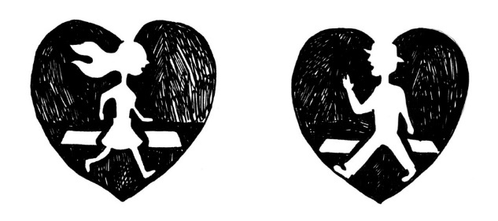
それでは、家族とは、私たちにとって一体何なのか？
子どもにとっての家族とは、どんな意味を持つのでしょうか？
これは、とても深い意味を持ちます。
子どもにとって、家族とは「安全を与えてくれるもの」です。
両親が安定している状態の中で育った子どもは心が安定し、安心して冒険もできるようになります。
親とは、子どもにとっての「安全基地」なのです。
子ども時代の家族関係を、「安全とは言い切れない安全基地」だったと感じている場合、思春期になるとパートナーに「今度こそ完璧なる安全基地を！」と求めるようになります。
10 代や20 代前半くらいまでのあの癒着ともいえる恋愛は、まさに親に求めて得られなかった感情を求めて確かめ合っている、と言っても過言ではありません。
そして何回か恋愛に失敗すると、やっと「パートナーが一方的に自分の甘えに付き合ってくれるわけ、ないよね......」と気づきはじめる人もいます。
ところが「大人なんだから依存しないようにしよう」と我慢しているだけではブレーキが強化されるだけです。
幸せな結婚生活を手に入れたいと願うなら、過去の親との関係をそのまま受け入れ、誰かとつながることで自分自身が「安全基地になりたい」と思うことです！
親との関係の中で「自分は期待に添えない、だめな人間だ」と思ってしまったことはないでしょうか？
自分が「ありのままでいいと思ってはいけない」と、幼いころ「誰か」に言われて育った記憶がある、という方はたくさんいますよね？
そんな経験を持って大人になった人は......
１ 「今も自分を卑下して生きている」か、
２ 逆に「結局親のせいだと思っている」か、
３ 「親も自分も許すことができるようになってきた」
あなたは今、この３つのどれにあてはまりますか？
ちなみに１と２は表裏一体。
親と自分、どちらを責めるか順番が違うだけで、過去の痛みに今も執着がある状態です。
１から２へ行って、また戻ったりと、行ったり来たりしている人も多いです。
「親を責めるなんて子どもじゃないんだからとんでもない」と、攻撃をまた自分の過去に向けたりと。
人間の親って、他の動物と比べるとホント子育てが大変ですよね。
未成熟の状態で子どもが生まれてくるのですから、どんな親でも、子どもがさまざまなことを一人でできるようになるために、いろいろと関わらざるを得ません。
それにもかかわらず、私たちは往々にして、例えば「親が大事にしてくれなかったせいだ！」と
思いこんだり、親にひどい目にあわされた、否定された、などと感じてきましたよね？
実は、私自身30 代までそう信じ込んでいて、堂々と「親のせい」にしていました。
今、思春期に差し掛かる私たちの息子も、「朝から機嫌が悪いのは親のせい！」になぜかなっているようです。
誰が教えているわけでもないのに、ホント不思議ですね......。
そもそも生まれてきたときの初期状態では、「自分」という概念さえないのです。
そして「自分」と「あらゆる関係」という概念は「親との関係」からインストールされる、と考えると分かりやすいかもしれません。
ですから、自分がつらい時、その対象関係である親を責めることで、子どもは多大なストレスを抱えずに済むのかもしれませんね。
さて、それを踏まえたうえで......あえてここでもう一度。
「誰かのせいにしてしまう癖は、将来パートナーのせいにしがち」......。
ただ、親を内心恨みながら、未完了な感情を無意識層に隠して、態度だけ我慢してもストレスがたまったり病気になったりします。
ですから「親のせい」になっている人も「未だに親のせいにしている自分は情けない、恥ずかしい......」と思っている人も、今もまだ自分や誰かに不満を感じているなら、まずは何かを動かそうとせずに、ありのまま認めましょう。
安心してください、本当は「誰のせい」という意味自体いらないのです。
そもそも 「誰のせい」という発想は、過去に意識が向いています。
過去のことばかり思い出している状態は、後ろ向きに生きているので「『最高に歳を取っている自分』を感じることになる」とお伝えしたと思います。
ジェットコースターを後ろ向きに乗ってみると想像してみてください。
恐ろしくスリル満点で、怖がりの人にはちょっと耐えられないですよね......。
あなたも、もしかしたら時間軸（タイムライン）を後ろ向きに歩いていませんか？
あるいは、自分の人生のタイムラインを、外側から客観的にグラフのようにながめて「分析」しているのかもしれませんね。
「過去の方が若かったしモテていた」などと。
でも客観的に見ていても昔には戻れませんし、何より問題なのは、 客観的な位置からは自分の人生のハンドルを握ることはできません。
私たちの人生は、ジェットコースターみたいに行先が決まっていて誰かに連れて行かれるものではないし、リモコンを動かすように、客観的なところから高みの見物もできません。
一人一人が「自分」という乗り物を運転しています。
ハンドルは目の前にあり、自分が行きたいところに行けます。
自分の安全のためにも、前を向いてハンドルを握りましょう。
「進みたい方向を見て進む」。
それによって将来の流れを作り出し、その流れに乗りさらに自由に進むこともできるのです。
「親との関係を自分がどう受け止めてきたかが、自分自身の基本的な人間関係・男女関係のパターンを作り上げてきた」。
真実はこれだけで、良いも悪いもありません。
そして誰のせいでもありません。
ただありのまま、これを前向きに受け止めましょう。
無理やり親を肯定したり、自分を過小・過大評価する必要は一切ありません。
すでに、「親からのメッセージ」は私たちの内側にインストールされ、そこから自動的に聞こえてきているのですから。
異性にもっと近づきたいと思った時「お前は何をやってもダメなやつ」などと内側から聞こえてくるとしたら、まさにそれはあなたの中にインストールされてしまった親からの「心のブレーキ」かもしれません。
まずは、頭の中でその声と闘うのをやめる ことです。
何でもそうですが、闘えば闘うほど、その対象もしつこく応戦して来ますから。
「私はいくつになっても親から自由になれない!! 」
と激しく思っている方は、自分が怒って恨んでいればいるほど、あなたの中の「親」的なブレーキに、喧嘩を挑んでいることになります。
そうすると、反動としてあなたの中の親（ブレーキ）も、まったく同じパワーで、あなたのしたいことを押さえつけてきます！
心の中は際限のない戦争状態になり、膨大なエネルギーが失われ続け、疲れ切ってしまいます。
この本の初めにお伝えした、「結婚したい自分」と「結婚したくない自分」との葛藤とは、そういうことです。
ですから、自由になりたいなら、「まずは自分との喧嘩をやめる」。
そしてそのブレーキが「本当は何をしたいのか」を冷静にしっかり聞き、受け入れることです。
何かする時に「こうしちゃいけない」とか「こうするべき」「こういうものなんだ」とつい考えてしまうとき、体のどこかに何となく力が入っているなら、「怒り」あるいは「怖れ」、ちょっとした「焦り」のようなものを感じませんか？
このネガティブな感覚によって、とっさの出来事から身を守ってくれていたかもしれません。
ですが、あなたが今までと違う、新たな生き方を模索しようとするとき、ネガティブな感覚は突然邪魔な存在となるのです。
こういったネガティブな思い込みが体の中にあるのをはっきり感じられれば、それを受け入れることで手放すことができます。
※実際のセッションでは、親との関係を癒し改善する目的で、椅子を親にみたてて会話したりします。
またワークショップなどで、自分自身の感情とつながり解放していくワークを行ったりしています。（必要な方は声をかけていただくか、あるいはお近くの専門家を訪ねてください。）
さあ、そんなわけで。
「相手は自分を満たしてくれるために存在しているのではない」のです。
もちろん、「親だって、子どものニーズを満たすために存在しているわけではない」わけです。 お互い自己責任を引き受け自由に生きているのです。
そんなスタンスから、大人同士の「対等な関係」が生まれます。
お互いを信頼し合い、丁寧にコミュニケーションすることで、お互いをお互いの「支え」とすることができます。
その絆こそが、自分にとって新たな「安全基地」となり、やがてこの絆の上に、二人の間に生まれた子どもが、安心して育っていくことになります。
「対等な関係」を作ろうと信頼し合うほどに、結婚生活は充実し、お互い癒しあえるのです。
とはいえ、多くの方々がこの「対等」という意味を誤解しがちなのでちょっと説明しておきますね。
「対等な関係」とは、初めて会った時から同じような実力で、同じような価値観を持っているもの、というわけではありません。
つまり「自分が有名大学卒なので高卒の人とは対等じゃない。」という意味ではありません。むしろ、客観的なものではなく「主観的な感覚」、ととらえていただければわかりやすいと思います。
本人同士が無理なく「私たちは対等だ」と感じていれば、どんな違いがあっても「対等さ」は手に入ります。例えば「上司と部下」でも「親と赤ちゃん」でも「犬と飼い主」でも、対等に関わりたいと思えば可能です。
「相手と対等に関わりたい」なら、勇気を出して相手に近づき、率直にコミュニケーションし続けるのがコツです。
「対等な関係」になるには、相手を鏡のように見立て、自分自身を見ることです。
相手の存在を自分のことのようにとらえることで、まだ知らない自分を発見し合うことができます。
対等な関係の夫婦から生まれてくる子どもは、親同士がお互いを受け入れているほど、豊かで平和な安全基地に守られて幸せに過ごして成長します。
自分のできないところも情けないところも、ありのまま受け入れる度量を持って育ちます。
少なくとも私たちの世代よりは。
長い目で世代を振り返ってみると、少しずつ私たち以降の世代は「対等な親子関係」に近づいているようにも思います。
例えば日本古来の「父親は絶対的な威厳を持っているもの」といったイメージが崩れて久しいですよね？
逆にその反動で癒着しがちな親子関係に悩む人々は今もたくさんいますが、「子どもなんだから......」とか「母親なんだから......」などの「家族の役割」から来る「こうするべき」という見方が全体として減ってきているのは事実です。
まだまだいろいろと問題はありますが、全体としては素敵な夫婦関係、親子関係が増えているように私には見えます。
これからももっともっと尊重し合いながらお互い言いたいことを言いあえば、素敵な家族はたくさん増えていくことでしょう。
こうやって私たちの世代が、こういったものの見方で自由にありのままの自分や相手を受け入れれば、今の若い人たちや子どもたちはおそらくあまり努力しなくても「対等な関係」が手に入ることでしょう。
そんな家族関係が進めば進むほど、人生がより一層楽に楽しくなっていきそうですね！
私たちは親なしには生まれてきませんし、無意識に親を模倣して自分自身を作っていきます。
だからこそ、「親は、先鞭をつけてくれた人」です。
そして、「超えていくための存在」です。
さて、親との関係はもう大昔に卒業した、と思っている方も、ちょっと思い出してみてください。
時として「親を喜ばせなくては......」とがんばっている自分にふと気づくことはありませんか？
親との関係は、「自分とパートナーとの関係」だけでなく、「自分と会社との関係」などにも象徴的に現れます。
「上司を喜ばせること」で承認を求めようとしたり、必要以上に相手に自分を小さく見せようとしたり......。
そういったことも、よくよく考えてみると、親の価値観に支配され、親を喜ばせなくては......という呪縛の延長線上にある可能性があります。
ちなみに「この癖がいけない」とか「問題だ」と言っているのではありません。
「親を喜ばせる」行動はもちろん良いことですよね？
ただ、動機が「べき」「ねばならない」あるいは「なんだか喜ばせずにはいられない」などと追い立てられているとしたら、不自然だし苦しいですよね？
そんな時は「そうか、親に対しての癖が出ていたんだ......それじゃ、本当の本当はどうしたい？」と問いかけ、前向きに気持ちを切り変えて接すると楽になります。
今、独身のまま実家に住み、何もかも親に面倒を見てもらっている方も増えていますね。
金銭面だけでなく精神面でも自立せず、そんな子どもに対して親の方が言いなりになってしまう、というケースも多いようです。
少なくともどちらかが問題を感じているとすれば、それは「行き過ぎた愛着」、つまり「共依存」や「癒着」と言われる状態です。
癒着している関係には「尊重」がありません。
そして互いの「責任の領域」があいまいだという特徴があります。
お互いの進みたい方向も、嫌なことも好きなことも「分かっているつもり」な場合が多いですが、実はさっぱり分かっていなかったりします。
もし、相手が自分を馬鹿にしたり、攻撃してきたり、軽く扱ってきたら......もしかしたら「癒着」し始めているのかもしれません。
その場合「自分の尊厳を守る」と決めて、率直に相手に伝えたり、ひどい時は距離をとったり他者に助けを求めることが大事です。
今、ＤＶや苛め、虐待など、さまざまな悪しき家族関係が取りざたされていますが、その根底にあるのもこの「癒着」。
この、癒着の関係に関してはこの本では語り切れませんので、また別の機会にお伝えしますね。
さて、「対等さ」の分かりやすい事例がありますのでご紹介します。
挫折を超えてベストパートナーをつかんだ方の気づきです。
そんな彼女に、幸せを手に入れた「秘訣」を尋ねたところ、次のようなメッセージをもらいました。
一度成婚まで行った方とのしっくりしない感じ、そして、本当に幸せを感じられる関係をつかんだ時のフィット感が書いてあります。
湯田さんこんにちは！
「昨年の挫折を超えて幸せを手に入れた秘訣は？」というテーマをいただきありがとうございます！
でも私としては「これが秘訣」というのはないので（笑）、ひとまず思うことをつらつら書かせていただきます。
昨年、もうお見合いするのが嫌になっていたんです。
毎回、毎回違う人と会って、気も遣うし、素敵な人とも思えないし、でも結婚はしたいし......。
ということで、もう「お見合いが嫌」&「結婚がしたい」を両立？させるために、次に会った人と結婚してしまえ！くらいな勢いでした。
で、もう「自分が好き勝手できればそれで幸せ」だと思って、交際を突き進んでみたわけです。
結婚相手なんて誰でも良くて、全部自分の好きにさせてくれればいいから！ という感じで。
結局、自分と彼はコミュニケーションがとれていなかったのでしょうね。
彼が投げたボールを私は適当なところにほうり投げ、私は彼にボールを投げつけるみたいな。
最後はどうにもこうにも幸せではなく、別れたわけです。
ただ一旦、結婚ぎりぎりまで行った事で自分の中で、少し吹っ切れたものがありました。
「そこまでして無理に結婚しなくてもいいかな」という。
結婚がしたいという思いは同じなのですが、なんか死ぬほど頑張らなくても良いのじゃないかなと。
ということで、気分を切り替えて、いろいろな人と気軽に会ってみました。
今までは、とにかく嫌でも頑張らなくちゃ！って義務感のほうが強かったのですが、それからは、楽しいって思えたら続けよう、という気持ちで会ってみました。
その中で今回プロポーズしてくれた人と出会ったわけです。
私が「この人いいな」って思ったのは、一緒に映画を見ていて、自分が安心していられたからです。
私はメールのやり取りも電話も、とにかく男性と関わるときは緊張してばかりで、今までいろんな人と映画見たときも、常にドキドキしてたんですよ（笑）。
いいか悪いか別として、この人とダメだったらどうしよう......
という崖っぷちの思いではなく、この人がダメなら、次に行く！っていう軽い気持ちでいられたから、安心につながっていったのかなぁって。
プロポーズさせた秘訣というと、やっぱり正直に「結婚したいです」って彼に伝えたことでしょうか。
結婚の話を女性からすると男性は重くて引くかな〜という思いもあったのですが、湯田さんのアドバイスを受けながら、いろいろな会話に混ぜ込んで伝えていったので。
どちらかというと生真面目な私は「〜しなくてはいけない」とか、「〜してはいけない」とか考えがちなので、人生や人間関係が時として、重く苦しかったりします。
湯田さんから、彼にこう言ってみればとかアドバイス受けるたびに、そんなこと言っちゃっていいの?!
でも、ありなのかな〜みたいな意識改革がありました。
（彼に結婚したいと伝えるのも私の考えでは思いつかない考えですので。）
今回、考え方が少し自由になったことが、この結果につながったのかなって思ってます。
結婚はゴールではなく、スタートですので、引き続き頑張りたいと思います。
人生を楽しんで生きたいな〜と。
いろいろ、どうもありがとうございました。
（あや）
「お見合いが嫌」。
そうですよね。
婚活も長くなってくると、確かに疲れますものね。
特にあやさんの場合、自分にとって惹かれるような男性像があまりなくて、「誰に会っても疲れてしまうし、デートも面倒だし、そもそも出かけることがあまり好きじゃない」そうで。
ですから昨年交際して結婚しようとしたときって、ある意味これこそが「妥協婚」みたいな感じだったかもしれません。
誰しも、本気で結婚したいと思って婚活するほど、「結婚相手に対する期待」はだんだん少なくなっていき、「条件」や「好み」を手放し現実的な選択肢に変わっていきます。
それは、自分が人生に責任をとって生きていくという、自覚的な大人の選択です。
実際、パートナーは「鏡」の役割をしてくれるので、ちゃんと向き合えば相手がどんな人でも、自分の課題が見えてきます。
「こういう人でなければ自分は幸せになれない」と執着しているとしたら、それは結婚を止めてしまうブレーキになりやすい、ということは第１章でお伝えしましたね。
「つまり、結婚相手は誰でも一緒」とあやさんは思ったのかもしれません。
でも、正直に言って実際は、一緒にいて何を感じるか、相手によって全然違いますよね？
「妥協は当たりまえ」と、会員に我慢の結婚を薦める結婚相談所の仲人さんは今でもたくさんいるようですが、私としてはそんな風に「妥協」することが自分自身できないですし、会員に性急な「妥協婚」は薦めたくありません。
ですから昨年、あやさんが相手の方と成婚の報告に見えた時、なんと言っていいか本当に困ってしまいました......。
一般的に言う「全然合わない」感じ。
二人が「合わない感じ」って「キャラクターの相性」や「育ちが違う」とか、そういったことに一見見えがちですが、よく見てみると何が違うか分かってきます。
あやさんたちの場合、二人ともなんだか無理が高じてストレスパンパンな感じに見えました。
もちろん「結婚する」と二人で言っているのですから反対はしませんでしたが、内心とても違和感をおぼえました。
結局、ミスマッチの正体は、「相手とのコミュニケーション」だったのです。
「彼が投げたボールを私は適当なところにほうり投げ、私は彼にボールを投げつけるみたいな」
そうなんです。
この態度じゃまるで、「お姫様と下僕」みたい！
これじゃ見た目も「対等」じゃありませんし、相手への「尊重」を大事にできてない感じがあります。
私どもにお二人で挨拶にいらしたときはすでに、あやさんのきりきりした声にイヤイヤ反応する彼の卑屈な態度が垣間見えました。
あやさんもそうでしたが、おそらく彼自身も「なんとしても結婚したい」と、必死だったのでしょうね......。
「相手なんてどうでもいいからとにかく結婚してしまえ」という投げやりなあやさんの態度に対し、彼は「不満を感じても何も言わず我慢し続ければ結婚できる......」とがんばっていたのかもしれません。
そして、彼の卑屈ともいえる態度を見れば見るほど、 相手を軽視し、ますます投げやりになってしまっていたあやさんだったのでしょうね。
「とにかく早く結婚したい」と心から欲している方なら、こんな経験のある方もいらっしゃるのではないかと思います。
「多少のことは目をつぶっても......」と思い、違和感があってもそこをスルーしてしまうと、ストレスがかかってますますうまく行かなくなってしまいます......。
一旦、結婚ぎりぎりまで行った事で自分の中で、少し吹っ切れたものがありました。「そこまでして、無理して結婚しなくてもいいかな」という。
ちなみに......。
「無理して結婚しなくても」の後に続くフレーズで「婚活やめます！」という方向に一気に多くの方が傾きがちなのです。
婚活ってかなりのエネルギーを費やすし、しばらく結婚は考えなくていいか......と。
実際結婚ぎりぎりの体験した後って、疲れて退会してしまう方も多いのです。
でもみなさん！ ここであきらめるなんて本当にもったいないです！
あと少しでゴールというところで、ちょっと登り方を誤っただけですから。
あやさんみたいに、そこからもう一度丁寧にやり直せば、案外すぐに結果が出るのです！
学校だって一回中退したからって一年生の入学式からやり直さなければならないものでもありません。
婚活だって同じです。
結婚するために、とがんばってきた学びは自分の内側に貴重な体験として蓄積されています。
あやさんは結婚をあきらめませんでした。
同時に「だからこそ、無理しなくてもいい」と自分を許すことにしたんですね。
「結婚」への生真面目すぎる執着を一旦手放し、「だめなら次に行く」という気楽な気持ちで婚活していったのです。
結果、心から安心して二人で過ごせるベストパートナーに出会いました。
ちなみに、あやさんと成婚するはずだったあの男性も、同じ年にめでたく成婚したとのこと！
よかったです。
本気の人は失敗の経験を活かして成果を出しますね。
どうか、早く結果を出したいからといって無理しすぎないでください。
自分を信じて、もし違和感を感じたら、その気持ちを信じて、相手と本音で会話してみましょう。
そしてもし、とにかく辛すぎる、という時には、何らかの形で、誰かに助けを求めるといいですね。
例えば、彼（彼女）との関係を客観的に見られる人に相談するなど。
ただ、自分自身が対等な関係を作りたいと思えば、どんな相手でもパートナーシップを作る可能性はゼロではありません。
目の前の人と生きる可能性を探り続けさえすれば、永年連れ添った夫婦が言うように、
「『結婚相手を間違えた』と感じたことがあったけど、あれこそ間違いだった」
などと思えるほどいい夫婦になっているかもしれないのです。
いずれにしても何を選択しようと、あなたの人生はそこで終わりになどなりません。
「失敗した？」と感じたら、またやり直せばいいだけ。
「間違い」なんて、人生にはないのです。
本気になって「結婚する」と決めていれば、あやさんのようにうまくいかないことがあってもそこから学び、あまり時間はかけずに結果を出すことができます。
無理せずに、お互いが尊重しあえる「対等な関係」を作りましょう。
その秘訣は、「本当に思っていることをありのまま丁寧に伝え合う」こと、です。
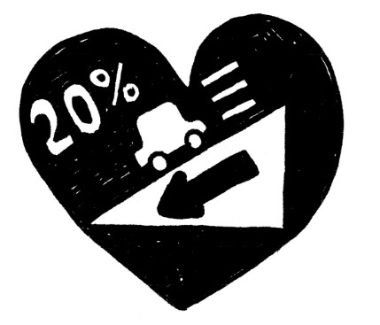
さて。
ここまで来てあえて伺います。
皆さん「結婚したい」とおっしゃいますが、「本気」ですか？
「心のブレーキ」を発見し「これが原因だ！」と分かったとしても、それを超えて「本当に結婚したい」と思わない限り、結婚を手にするのは難しいです。
原因究明は大事ですが、 もっと大事なのは「どうなりたいか？」
本気で、あきらめずに工夫し続ければ成果は必ず見えてきます！
とはいえ、いろいろとやってみたけれど実際これという人が目の前に現れてこない......出会っても結局残念な結果に終わってしまう方は実際多いです。
「何度も同じようなパターンが続いている......」と感じていらした方は、タイミングよくこの本に引き寄せられたのかもしれませんね。
過去の体験から、私たちは独自の信念や価値観を作り、それが「制限の枠」になってブレーキを利かせてしまいます。
「私は○○できないオンナ」とか......
「男とは○○なもの」とか......
「世の中ってこんな風でないと通用しない」とか......
「思い切り言いたいことを言ったら相手は傷つくもの」とか......
「ルールを破ったら世間から罰を受けなくてはならない」とか......
「男女関係はスイートなもの」とか......。
こういった「思い込み」のブレーキは、第３章でお伝えしたように、自分の役にも立っていたのです。
なんといってもこの状態は「安全」だし、とても「安定」して、見方を変えれば「心のブレーキで守られている状態」とも言えます。
そして、パートナーとの愛し愛される生活を手に入れたいなら、この「安定」を一旦崩す覚悟が必要というお話はすでにお伝えしています。
「心のブレーキ」が働いているのですから、前述したように無理やり力づくで変えようとすると面倒な抵抗にあい、さらにこじらせかねない......でしたよね？
「顔」が一人として同じ人がいないように、自分自身の「長所」も「ブレーキ」もそれぞれ違います。
何が自分にとって不都合な感じがしているのか、理屈ではなく、むしろ自分の「感覚」でその存在を感じ、肯定的に受け入れましょう。
そしてもう一つ。
大変効果的な方法があります。
自分一人でやるよりは、「鏡」（の存在）を使うことです。
さて、「鏡の存在を使う」とはどういうことでしょうか？
例えばニキビなど、自分ひとりではあまり気になりませんが、鏡を見た時初めて「わ〜！ こんなひどい状態？」と気づき、治したいと思えます。
それと同じように、自分以外の他人を「鏡」と見立てて、まだ気づかない自分のブレーキを発見していくのです。
相手＝鏡を見て、「おかしいな」とか「いやだな」と感じているところに、自分の中に制限として作られている「こうするべき」「こういうもの」という「枠」を発見できます。
それは、自分を縛っている信念であり、それが一つのブレーキの可能性があります。
たとえば、「あの人最低！ デートなのに私の後をついて来るの！」という気持ちになったとします。
それは「男性はデートをリードすべき」とあなたが無意識に信じている、ということがわかります。
鏡は自分以外なら誰でも、自分の鏡として自分自分を映し出すことができます。
例えば、婚活している人はこれから会うお見合い相手や、いま付き合っている交際相手としっかり向き合うことであり、ご自分の家族と向き合うことでもあります。
相手を見ていて「この人、ダサくていやだなあ」と思ったら、それはもしかしたら自分が「ダサくなる」ことを過剰に恐れている可能性があります。
自分自身が意識せずに無数に持っている「こうでなければいけない」などの信念が見えてきたりするのです。
「相手と向き合うなんて......ヤダ！」と感じた方へ。
想像しただけで、とっても気分が悪かったりする方もいらっしゃるかもしれません。
もしかしたら、あなたは長いことずっとブレーキが効いていたのかもしれませんね。
つまり他人とつながる喜びに、あまり慣れていないかもしれないのです。
一瞬向き合うだけでもかなりの思い切った勇気が必要かもしれませんが、慣れればそれが楽しくなるしそこから幸せな感覚が広がります。
少しずつでもチャレンジするといいですね。
「好きな人とならいいけど......」と感じている方へ。
そうなんです！
私たちは「あの人は好き」「あの人は嫌い」という思い込みを持っています。
だからこそ、その思い込みに縛られて、うまく行くはずのない相手に「好きなんだから」としがみついたり、また逆のことも起こしてしまいがち。
「好き」の反対は「嫌い」。
でも「愛」の反対は「無関心」ですよね？
つまり「好き」も「嫌い」も表裏一体。
両方とも 自分自身の中にある愛着の感情が動いています。
つまり、「嫌い」と感じるのは、自分自身の中にある、隠していたい「見たくない自分」を相手に投影しているにすぎないのです。
「嫌いだから」となんでも遠ざけてしまう癖を持っている人は、まだ発展途上の自分自身が誕生できる機会を自ら失っていると言っても過言ではないのです。
そして、ずっと「嫌いだから避ける」を続けていくと、自分の行動範囲がどんどん狭まってしまい、選択肢がなくなっていきます。
一見とても理解できそうもない、自分にとって苦手な相手と向き合うことで、今まで気づかなかった価値観に気づきます。
さて、「相手が現れたら、その時頑張ろう。」「状況が変わったら始めよう。」
と、「後出しじゃんけん」、つまり「待ちの姿勢」になってなかなか始まらない方がいます。
これを「タイミングを計る」ということと勘違いをしている方が多いです。
何が違うのか分かりますか？
その違いは、自分自身が「流れに乗っている」かどうか。
「引き寄せの法則」で有名なエスター・ヒックスは「人生は川」であり、「重力に従って流れに身を委ねることで必ず望んでいる海にたどり着く。」と説いています。
そして、「力を入れずに目的に向かって流れに身を委ねることで、求めているものは手に入る」のです。
もし「うまく行かない」のだとしたら、無意識のブレーキが作動しているだけ。
そんな「人生という海へ続く川」をイメージしていると、最近つくづく思うのです。
セミナーなどで使用する「自分が望む状態に変化成長するための図」って、昔からどこでも「望む状態」が右上にありますよね。
「望む状態」は、「努力して得られる」＝高い位置にあるものだと思い込んでいたのではないでしょうか？（山登りのイメージ）
むしろ「自然に手に入る」＝低い位置にした方が望みは手に入れやすいかもしれません。
「特に努力しなくても、人は自分が求めている方向を意図すれば自然にそこへ向かって流れている。」これが前提（川下りのイメージ）。
ただちょっとしたブレーキがあると、流れを妨げたり、別の方向に向いて頑張ったりしがちです。
意識しているかどうかは人によりますが、この自分の中の「人生の奔流」を怖がってついつい避けてしまうと、孤立し「流れを感じられない」ということに。
もし今「ブレーキがかかっている」と感じているなら、周囲から孤立し、ぬかるみみたいな流れが止まっているところへ迷い込んでいるのかもしれません。
その孤立しているところで待っていても、何かが近付いてくる可能性は低いですよね？
もしかしたらこれからも延々と待ち続けるかもしれません......。
「相手待ち」「時期待ち」ではなく、まず自分から動いて人に近づくことで流れを作ることもできるのです。
例えば、会社の中でとても理解しあえない上司との関係に悩んでいる女性がいるとします。
その上司は頭ごなしに自分の考えを押し付け、あなたの提案をことごとく受け入れず、せっかくの自分の企画を踏みにじられたりという繰り返し......。
そして婚活の分野でも、あなたの周りは頭の固いオトコばかり！
これは先ほどの鏡の法則を使えば、「オトコは女性を理解し支えるべき」などという信念がありそうですね。
また、こんな風に、自分の信念が引き起こしているブレーキに気づいたら、そこから自由になれるチャンスです！
問題が起きているときこそ、その問題を使って、「ピンチをチャンス」に変えることができます。
この現象をまずは思い切りポジティブな見方で表現してみましょうか？
これを「コミュニケーション力を磨くチャンス」と考えてみたらどうなるだろう？
相手の立場に立って理解してみたり、相手にどうやったら伝わるか、言い方を工夫してみたら、何か起こるかな。
起きた出来事を振り返り「このことは次回に何を生かせるかな？」。
婚活も気楽に楽しもう！
え〜!? とんでもない！
そんな受け止め方、自分はとてもできない！ と感じた方。
大丈夫。「ポジティブ思考って難しい！」という方はたくさんいます。
でもね、「ネガティブ」は、間違っているわけでも「悪」でもないのです。
まずは自分の「ネガティブ」思考も、貴重なモチベーションとして思い切り利用しましょう！
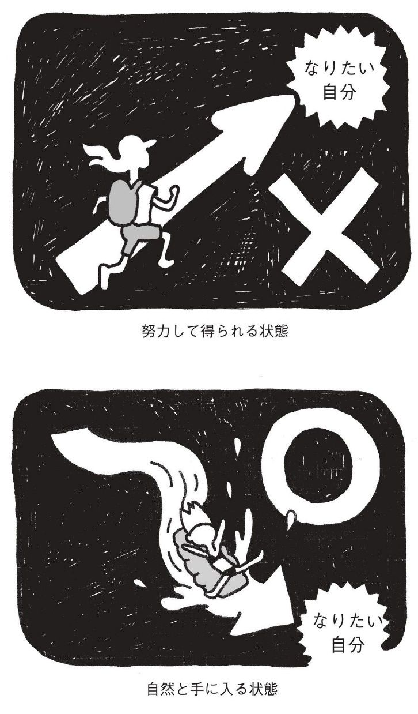
「ポジティブに希望を持つ」ということばかりが素晴らしいということはありえません。
ネガティブな気持ちを抑圧して不自然にポジティブな人もいますが、問題と向き合うことを無意識に逃避している可能性もあります。
ネガティブな感情は、問題を気づかせたり、危険を知らせすぐに行動を促す大事な目的がありますよね。
ですから、「ネガティブな感情」も思い切り前向きに利用しちゃいましょう！
ネガティブな感情は危機感をあおってくれますから、手っ取り早いモチベーションとしてすぐ作用します。
「あの人に認められなきゃ！」
「絶対負けたくない。 」
「一番にならなきゃだめだ」
「いつかあいつを見返してやる！」
「40 歳まであと○年しかない！」
ネガティブな欲求は、瞬間的に自分を動機づけてくれる、危機回避の逃走＋闘争本能！
このモチベーションは、とっさのできごとに対応するためのものなので、緊急時に大変便利に発動します。
ただ結果を出せたとしても、そこで「やれた！」と自己承認する感覚は手に入らない。
「やっとほっとした......」くらいかもしれません。
つまりプラスの効果はなく、マイナスからゼロへ移行するだけ。
このネガティブな感情だけを使って頑張って動いている人は、付け焼き刃みたいなこのやり方に慣れ親しみ、競争原理を使い、危機感をあおるだけあおり延々と努力しつづけてなにかを手に入れているんですよね。
努力して一流大学を卒業し大変立派なお仕事をされていても、自己肯定感が低いままの人って案外見かけます。
自己評価を点数で説明すると分かりやすいと思いますが、「やっと成し遂げて、初めてスタート地点＝０点」なんですね。
「マイナスじゃなくてよかった......」みたいな安堵感、ですかね......。
身近にそういう人がいるかもしれません。
あなた自身はどうでしょうか？
周囲からみたら、十分に大きな達成だと思えるような結果を立派に出しているはずなのに「出来て当たり前」とジャッジしてしまう癖があるため、日常が幸せな気持ちとはほど遠い状態......。
「親が褒めてくれなかったから」？
その通り！ そしてその親も自分の親に褒めてもらえなかったのかもしれません。
「親のせい」でも「自分のせい」でもいいですが、結局そういった会話は、過去への後悔や自己憐憫に意識が戻ってしまいます。
ほら、また「時間軸（タイムライン）が後ろ向き」？
あのジェットコースターを後ろ向きに乗る話です！
そういった「犯人探し」に明け暮れ、嫌なことを嫌悪している心の状態だと、ますますネガティブな現象ばかりを引き寄せ、悪循環で「幸せ感」も「幸せな現実」も、年齢と共に少なくなっていってしまうかも!?
だからこそ、「どうしたいか？」という発想です！
「楽しみたい」
「わくわくしたい」
「一体感を感じたい」
「つながりたい」
「チャレンジしたい」
「幸せになりたい」
......と、どこまでも純粋に正直にイメージしたり体感することが大事ですよね。
先ほどお伝えしましたが、ネガティブな感情にも自分を駆り立ててくれる大きなメリットがあります。
ただ、「最悪これだけは何とかしなければ......」といった追い立てられるような不安な気持ちだけだと、あまりの負のエネルギーの強さで「できなかったらどうしよう?? 」と不安になり、できないイメージばかりを思い描き、出来ない状態を作り出しかねません。
「もし、この問題を超えたらどうなりたい？」と質問すると、「できなかったらどうしよう」という不安からも自由になることができます。
ちなみに、「『どうしたい』のかが全然分からない......」と感じている方へ。
こういう悩みを持っている方は実はとっても多いです。
カウンセリングを行っていて多くの方がおっしゃいます。
「こうやって改めて質問されることがなければ、『自分がどうしたいか？』なんて分からなかった」
「考えたことさえなかった！」と。
そうですよね。
一般に義務教育などでそんな教育受けて来なかったし、親から教わった人も少ないでしょうからね。
でも、これからの時代は、そういう質問ができる親たちはどんどん増えていきます。
なぜって、そういう悩みを持ち、真剣に向きあい、超えていった私たち自身が親になるんですから！
自分がどうしたいか？
それを自分自身に問いかける習慣は、いろいろな意味で豊かな素晴らしい習慣です。
どんどん自分に、相手に、そして親になったら、自分の子どもに問いかけましょう！
「どうしたいか？」が分からない時、不安になる必要はありません。
「休みたい」とか「旅行したい」とか、まずはそういったことから身近な「したいこと」をイメージし、見つけていきましょう。
絶望的に忙しい方などは、「休みたい」などしか出ないことが多いです。
ただ「今の仕事の状態では、休んだり自由になることはとてもできない」と本人が思い込んでいる状態だと、「できないことを言っても仕方がない......」と思ってしまいがちなんですね。
「どうしたい？」の質問に答えられない時は、この制限となる思い込みがブレーキになっているかもしれません。
そんな時にとても有効な質問があります。
「もし、できるとしたら......？」と自分に問いかけ、自由に発想を広げてイメージしましょう。
自由になりたい、休みたい、幸せになりたい。
生きている意味を感じたい......などなど、視野が広がり「こうしたい」という気持ちがあふれてくるまで、自分の中の「できない」「べきだ」 の制限を外して、 自由にイメージしましょう！
あなたは「結婚」への過程でどんな体験をしたいですか？
例えば、親しみがわいたり、好感を持ったり、親密になりたくなったり、相手に触れたいと思ったり、本当に一体化したい気分になったり............。
そんなふうな、わくわくした気持ちを感じたいですか？
「どうしたい」を大事にすると、「方向」や「流れ」が見えてきます。
「そこへ行きたい」と本気で思っていると「流れに乗る」タイミングは無数にあることが分かります。
「流れ」は、スリルやドキドキする体験と同時に、私たちが一番求めている「最高の気分」も体験できます。
いろんなものが、いろんな人が、嬉しいことも嫌なこともいろんな出来事がやってきます......。
それらと向き合っていくことで「望むもの」もやがて近づいてきます。
流れに乗るためにも、「相手待ち」「状況待ち」ではなく、自分からどんどん自由に、出来るすべてのことをやりましょう！
まずは、自力で「流れを起こそう」。
できることは何でも行動！
できるまでやり続ける。
さて「流れを作る」には......？
「ん？ これはオイシそう！」と感じられる方向に、素直に従う。
自然で楽に、つまり地球の重力を信頼して身を任せる感じ。
（生真面目な人ほど頑張ってしまいやすいから要注意。）
そして「さらにこうなりたいな」となりたい状態をイメ---ジし、やりたいことをやりましょう！
流れに乗り始めると、ラッキーなことが起こり、一つ一つの現象に相乗効果が生まれやすくなります。
「たまたま」「偶然にも」と思っていると、「偶然だった」と「なかったこと」として処理されてしまうことになります。
でも、誰かが自分に対してしてくれた行いや、ラッキーやミラクルにその都度感謝したりすると、また体が緩み始め、だんだん流れに身を任せることに慣れていきます。
女性会員の一人ですが、会社の関係でフットサルを始めたそうなんです。
もともとテニスが大好きだった彼女は、思い切り汗をかきながら男性に交じって大いにフットサルを楽しみだしました。
そして、たまたま起きた錦織選手の大躍進を我がごとのように喜び、毎回の試合を楽しみにして過ごしていたら、なんと会社の同僚が、錦織選手の試合のチケットをを取ってくれ、一緒に応援に行こうと誘ってくれたとのこと！
それ以降さらに交友関係が広がり、楽しみが次々とやってきているそうです。
こんな風に自分がやりたいことを存分にやり、さらにこうなりたいなとイメージしながらこの瞬間を楽しんでいると、周囲もそんな自分に楽しさを感じてくれたり、交友関係も広がり始めます。
そんないくつかの現象を受け入れていくと......ちょっといい感じがやってきて、「流れに乗り始めているかな？」と感じ、さらに楽しみが広がります。
今までの「やらなければならない日々のタスク」ですら、前向きに没頭できるし、人間関係も......
例えば、自分にとって不得意だったあの上司が！
嫌いなはずだったあの同僚が!?
「意外に楽しめるジョークを言うじゃないか!? 」などと違った見え方ができ始めたら、すでにミラクルが始まっているかもしれません！
今までの自分だったら「最悪！」という出来事が起こっても、「これはピンチに見えるけど、もしかしてチャンスなんだ！」などと受け入れることができたり。
そんな時......あなたの気づきのセンサーがクリアなら、パートナーがすぐそばまで来ていることが分かります。
どこで出会うかは分かりません。
お見合いで出会うかもしれないし、友達の友達かもしれないし、会社の取引先の方かもしれません！
いい感じの手ごたえを感じていつつ、まだ出会わない......という方は、さらなる出会いの可能性を求めていろいろと行動してもいいかもしれません。
一旦流れを起こした体験に自信を持って行動し続けていると、やがてもっと大きな引き寄せを体験することが多いです。
「パートナーと幸せになりたい」
「生きがいを感じたい」
「もっと誠実に貢献したい」
と、自分自身を信じて、進みたい方向にあきらめずに工夫し続けると、新たなステージが広がっていきます。
さて、この段階を継続的に体験している時、
怖くなって、ついついいつものブレーキを使うと......
気づかぬうちに、失速します。
「実現化」って、実際はこんなにシンプルなんですよね。
ところが、私自身そうでしたが、なかなかこのシンプルさが受け取れない......！
人生をこじらせるブレーキを持ってしまうと、そこから自由になるのは案外大変です。
その最大のワナが、 「疑い」 。
うまく行きはじめると「え？ 自分に本当にできるのかな!? 」と、怖くなる。
例えば、先ほどの例、「嫌いだったはずの上司に対して違った見方ができた！」としても、「いや。たまたまあの人が機嫌よかっただけかも？」と疑い、サプライズを受け取る気持ちがなかったら、気づきは「なかったこと」になり、「変わってない」という自分の強固な信念が変化をなかったものにしてしまうのです。
せっかく気に入った人からお声がかかっても、「え？ 本当にパートナーがきちゃったらどうしよう？ きっと私、好きになれないかも......」と、ついついすぐに返事を出さずに放っておき、数日後、忘れたころに返事したりするので、相手の好意も萎えてしまったり......。
そんな自分の行動には気づかず「やっぱり私、モテないんだ」と、もともとあった自分への思い込みを証明し、さらに強化し悪循環を生みます。
例えばストレスが皮膚炎を発症させ、それがつらくてさらにストレスを生み、いらいらしてさらにかきむしり......という、あの悪循環といっしょで、自己嫌悪が「自傷行為」まで発展していきかねません。
その悪循環がパターン化してしまっている方の場合、誰かに対して、
「こんな私を見て。やっぱりダメだったでしょ？」
「いう通りにがんばってきたけど、結局手に入らないでしょ......」
と自分か相手を責め、その恨みを証明することにいつの間にかすりかわってしまうのです。
こんなふうな傾向がある方は、もともと努力家で、仕事などではそこそこ成果を出すことができるのに、一番求めている男女関係、人間関係はどうもうまくいかない、という方が多いです。
家族関係における問題だけでなく、そこから自分を守るために作った「思い込みのブレーキ」に、その後もずっと依存してしまって、今も「誰か、あるいは自分自身のせい」になってしまっている可能性があります。
「こんな私を見て。ほら、やっぱりダメだったでしょ？」という「恨み節」は、いつもいつも心の中で誰かに向けて言い続けている言葉。
過去、何らかの、厳しい事情があり、絶望しきって生きてきた事情があり、ずっと心の中で周囲を信頼できず、「疑い」が習慣になってしまった、と言えます。
「疑い癖」の習慣があると自覚している方は、まずそんな自分を受け入れましょう。
そして、自分自身の「疑い癖による思い込み」を、そのつど実際起きていることと比較検討して、事実を信頼していく習慣を身につけることが大事です。
一朝一夕というわけにはいきませんが、一旦習慣を変えることさえできれば、 そのあとの人生は今までとは全く違ってきますよ。
さて、もう少し無自覚なケースです。
少し前に戻りましょう。
「やりたいことをやり、なりたい状態をイメージして、流れを作ろう！」。
と、自分自身を信じて、進みたい方向にあきらめずに工夫し続けると、新たなステージが広がっていく、とお伝えしました。
そして例えば、「会社の同僚が、ふと自分に興味を持ったりしてきた」など、そんなささやかな変化が起きたりします。
「あ、やろうと思えばうまくいくんだ！......」そうなのです。
それが変化の兆候！
ところが、そこで、パタッと手が止まる人もいます。
本人の言っている理由はさまざま。
「仕事が忙しくなってきてしまって」......などと言いますが、これにまさか先ほどお伝えした「疑い」が介在しているとは、よもや本人は気づきません。
つまり、「自分が、あの人たちの期待にこたえられるかしら？」などという「疑い」が始まっている可能性があるのです。
そして、「あの人はもしかしたらその気になった私をある日捨てるかも？」
「彼は本当は悪い人かも？」
「今好きでもすぐに気持ちが覚めちゃったらどうしよう？」
などと、キリがなく疑いが始まります......。
疑いは「変化への怖れ」から生じています。
「不幸になったらどうしよう？」と頭はいっぱいですが、実は幸せになるのも怖いのです。
要は今の状態から変化することが怖くて仕方がない。
「何としても食い止めなければ......」と私たちの「心のブレーキ」は、ここぞとばかりに力が入るのです。
でも、ここで怖くなってパタッと手を止めると......
新しい出来立てのシナプスは元へ戻り、古いブレーキが再作動！
......また最初から、やり直す必要がでてきます......。
そして、たちが悪いことに、途中リタイヤを何度か繰り返していると、先ほどお伝えした「結局、やっぱり変わらないじゃない？」という自分のネガティブな信念をさらに強化し、証明する結果になります......。
疑い癖は本当に厄介です。
さまざまな人間関係にその癖が出てしまいます。
セミナーやカウンセリングに成長したくて参加しても、つい周囲と比べたりして「自分は効果的に学べてないのではないか」と疑ったりしがちです。
疑うこと自体、時間もエネルギーも費やすので効率悪いかもしれないですが、だからこそ前向きに、自分を信じて継続的に関わり続けていくことが大事。
でないとうまくいった体験はまた忘れてしまって、「ああ、やっぱり何をやっても変わらないじゃない！」という「疑い癖」をより強化し、ますます変化・成長が難しくなるという悪循環。
ダイエットなどでも、初めてやるときはある程度すぐに成果が出たりすることがあります。
その後、なかなか結果が出ないことも多いですよね......。
そこでちょっとくさくさしてお休みすると元の木阿弥！
でもね。誤解しないでください。
止まっても、努力が全部消えてスタートラインまで戻ってしまったわけではないのです。
うまく行きはじめた体験は、自分の中にすでにあるのですから。
「悪い癖がまた出た！」と気づいたら、それを受け入れ再度トライ！
今度休みたくなる時に、違った行動ができますよね。
失敗を学びにすれば、何度失敗しても不屈に立ち上がればいいだけ！
「失敗は恥ずかしい」「二度と見たくない」と、思う人も多いですよね？
でも、どんな失敗からも、必ず「学び」を発見することはできます。
何度失敗してもいいじゃないですか。
大丈夫。
あのイチローだって打率は３割前後です！
失敗すればそれだけ、何が失敗の原因だったか探すことができますよ。
実際、新たな習慣を身につけるには、なんでも時間がかかります。
「失敗して傷つく」必要なんてないのです。
失敗したのは「自分自身」ではなく、「自分の行為」にすぎません。
改善すればいいだけ。
「傷つく」のはやめて、「気づく」と決めましょう！
入会して３か月以内でスピード成婚退会した男性がいました。
なんと、以前90 キロあった体重を、健康上の理由から60 キロに落とした後の入会で、実際入会してからも、本当に自分の「なりたい自分」を創ろうと、大変意欲的でした。
まさに『希望を持って邁進中』と言う感じ。
まさに流れに乗った感じで、あっという間に素敵な方との出会いをつかみました。
その方が私どものカウンセリングで話したことは、会社の中での人間関係の話がほとんどでした。
彼と話すとテーマは毎回、たった一つのことに集中していました。
その方からの成婚メッセージです。
「妻とは、入会直後に初めて紹介を受けてから、１か月後にプロポーズし、３か月後には入籍しました。
実は、結婚相談所に入会することに関しては、多少抵抗を感じていたんですが、いざ結婚するとなったら出会いのきっかけとか交際の期間なんて、全然関係ないですね！
湯田さんとのカウンセリングの中で印象に残っているのは「執着を手放してみたら？」っていう言葉です。
なぜ今まで自分は女性とのお付き合いが長く続かなかったのか、職場でうまくリーダーシップがとれないのか、親に対して嫌悪感を抱いていたのか......。
「執着」の中身はそれぞれ違うのですが、湯田さんは分かりやすく、強制することなく、手放すことを勧めてくれました。
自分でも多少は意識することはありましたけど、気付くと周囲の環境が好転していたので不思議でした（結婚できたこともその一つです！）。
現在は未だかつてないほどの幸せ気分と感謝の気持ちでいっぱいです。」
（岩田）
そう！ あのお父さんを許せなかった「岩田さん」です。（第４章の事例１）
彼の執着の中身は成績だったり、スピードだったり、評判だったりとさまざまでした。
会社では同僚と競うことに執着していたんです。
そして、母をかばい父を恨むことへも執着していました。
「目の前の小さな勝利への執着」が、彼の「心のブレーキ」だったんですね。
彼は目の前の勝ちを手放し、大きく勝つことを意図したんです。
彼はもともと集中力のある明晰な方でしたから、今までのこだわりを捨てたことで、人間関係も会社内の雰囲気もグッと変わったようでした。
まさにそんなとき、真実の結婚相手候補が現れました。
岩田さんは、もともと真面目で素直な方だったと思いますが「徹底的に湯田さんを信じよう！」と意図的に決めていらしたのが良く分かりました。
毎月の勉強会にも参加し、仲間、チームとしての雰囲気にチャレンジしたりもし、自分の中にあるさまざまなパターンを自己開示してじっくり見詰めていました。
今後もおそらく、職場の周りからの期待から、きっと今まで以上の大きな立場に立ち、彼がなりたい自分にどんどん近づいていくことと思います。
さて。
まだ結婚したことがない人は、結婚にはどういう「うまみ」があるのか想像できないかもしれませんね。
私たち自身もつくづく実感しましたし、私どもの多くの成婚者も異口同音に話していますが、結婚するとなぜだか自分自身の本当の人生を初めて生きているような気がして、深いところから自信が湧いてきます。
未経験の方に、私たちが感じた結婚で得られる喜びの一端をちょっとお伝えしておきましょう。
１ 自分の足場が固まったという感じがして、楽に無理なく自己承認ができる。
２ 周囲の人がなんだか気安く声をかけてきたり、近しく感じられたりするし、自分も気楽に声をかけることができる。
３ 結婚相手以外の異性が安心して自分に近づいてくるので、公然とたくさんの異性を純粋に心から愛することができる。
４ パートナーから受けとれば受けとるほど、周囲や社会に与える事ができる。
パートナーに与えれば与えるほど、それ以外の関係から受け取れて、エネルギーが無駄なく循環しているように感じる。
５ そしてますますパートナーと仲良く高め、深め合え、二人で一緒に未踏の地を開拓しているように感じる。
つまり、結婚すると、自分も相手も、社会的に安心のエネルギーが自分たちを包むのです。
社会へ参加する権利を改めて得たような感じを受けたり、何か大人にさせてもらえた感じがあります。
結婚は、それ自体が「ミラクル」なんですね。
自分自身の今までの生活パターンとは明らかに違ったステージに、自分を連れて行ってくれるんです！
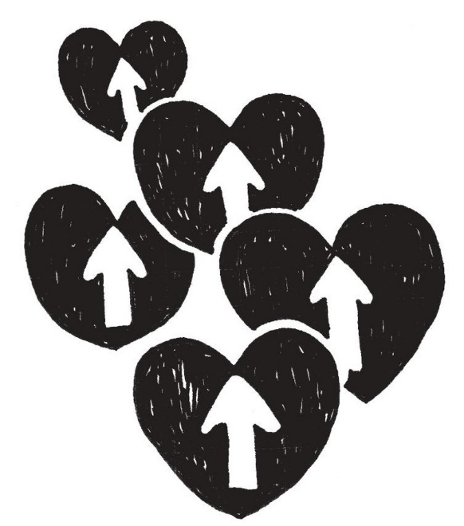
さて、この本も佳境に入ってまいります！
まずはメルマガ読者からいただいた質問をご覧ください。
こんにちは。
最近思うのですが、私を好きになる人はコンプレックスの裏返しで私を好きになっているような気がしてなりません。
そして、そういう人を私はどうしても好きになれません。
きっと、自分自身もそういう部分を持っているからだと思います......。
どんな基準でパートナーを選んだらうまく行くのでしょうか。
（かなこ）
「コンプレックスの裏返し」......。
関心はあるのは分かるけど、どうも自分が愛されているような気がしない。
なんだかこちらの一挙手一投足に過敏に反応していて気持ち悪かったり......。
そういう時って、何か相手の「自己満足的な欲求」を感じますよね？
そしてご自分をよく観察していらっしゃいますよね。
「自分もコンプレックスから人を好きになっているのかも？」と思ったのですね？
これこそ自己嫌悪ですね。
相手が自分と同じようなことをしていると思うと、たまらない気持ちかもしれません。
さて、この機会に、私自身の片想いの実例をお話しましょう！
若いころ、私自身も「自分を受けいれてくれそうな人は、どうもちょっとこちらからお声をかけたいと思えなくて、こちらが気に入る人は私のことを女性として見てくれない！」という悩みが続いていました。
若いころの私は、今でいうところのオダギリジョーみたいな、ふわっとしたヤサオトコ系男性が自分の好みだったんですが、どうも片想いばかりでした。
あるいは、片想いがバレバレになって相手に伝わり、交際にこぎつけたことも実際は何度かあったのですが、にもかかわらずなんだか居心地が悪くて、結局交際が長続きしなかったのです。
（第４章の「片想い慣れ」って、もろ私のことです......）
そして40 歳も目前になり本気で結婚を考えた時、初めて自分自身の「結婚相手選びのミスマッチ」に気づいたのです。
素敵でナイーブな男性と一緒にいると......短時間関わるだけならドキドキしてたまらない夢のような体験ですが、結婚生活となると、想像するだけでなんだか疲れてしまいそうだ......ということを発見したのです。
どうしてそんな風に疲れてしまうのでしょうか？ 分かりますか??
その理由は、そもそも、「私が何でヤサオトコ系が好き」なのか......。
「コンプレックスの裏返し」。
言ってみればこれだったんですよね、正体は。
つまり、女性としての美しさやナイーブさ、見た目の若さが「自分に足りなくて恥ずかしい」と思い込んでいたから、不足部分を「補てん」したい衝動に駆られただけのかもしれません。
ですから、心の中を正直に見てみると......、
イケメンさんとは「人生のパートナーとして支え合って一緒に生きていきたい」などというリアルな欲求じゃなく、「相手をただ見つめていたい......」とかいう、なんだかこう、「時間が止まったファンタジックなイメージ」だったんですね。
まさに、私自身「自分の秘密の小部屋」を恥ずかしいと思って隠したまま、物欲しそうな顔をして相手を見つめていたのかもしれません。
こういう、非現実的な関係って、続きませんし楽じゃありませんよね。
だから、その時間を一緒に過ごす相手も当然疲れると思います。
もちろん自分がコンプレックスを感じる要素を持っている相手を頑張ってゲットして結婚し、幸せになる人もたくさんいますから、自分がどの方向に進むかはそれこそ本人の選択です。
自分自身の美貌をこれからも意欲的に磨き続けようという女性なら、若くてイケメンな男性との年齢差婚には興味ありますよね？
前向きに、「彼に釣り合うだけの若さを保ちたい」と思うことで、彼と「対等な関係」を作り出せるかもしれません。
「対等な関係」という意味では、例えば「若さや美をコンプレックスに感じているオジサンが、金の力にものを言わせて若いオンナと結婚する」としたら、「対等な関係なんてありえない」と思ってしまう方も多いかもしれません。
こういった「違い」がたくさんある関係は最初の段階で「対等になるはずない」と感じてしまう方も多いかもしれません。
でも、どんなに違いのある関係でも、しっかり相手と向き合い共感し続けていけば、対等な関係は可能です。
「美女と野獣」など、典型的ですよね？
夫婦って不思議と、あらゆる違いを超えて二人の共通点を見つけていき、何年か経つとなぜか似てきたります。
そしておそらく、コンプレックスさえ癒しあうことができます。
「美女と野獣」の野獣は、ラストに愛の力で王子様としての真実の姿に戻りますよね。
さて、当時の私の話に戻ります。
そうやって考えてみると、私の場合、「美女と野獣」のように自分の命を懸けて恋い焦がれるほどの激しいモチベーションがなかったのです。
私の場合、イケメンたちのようなナイーブさ・優しさ・若さにある程度コンプレックスを感じていても、美しさをゲットするために自分自身が今後の人生を費やしたいなどと思ってはいない......と。
その気づきの瞬間を、今も思い出します。
私は40 過ぎて初めて、このことが腹に落ちました。
「パートナー選びって、今後の人生の方向を選択することになるんだ！」と。
だって、もしイケメン男性との人生を過ごすなら......今後の人生、ナイーブさや美しさに関心を持ち、向き合い続けることになります。
これ、他人事だと一見良い事に思えるかもしれませんが、私にとっては、自分が無意識に求めている家庭とはちょっと違う形の、「二人の関係を大事にするために頑張る毎日」になるかもしれません......。
もしかしたら、「イケメン男性を自分のように慈しんでお世話していくような人生」になる？......と。
「自分が脇役 ...... ？ 世話好きでもないしそれはありえない！」と。
夢のような一瞬の恋愛ならまだ楽しめるだろうと思うけど、結婚生活なんて長い今後の人生、絶対絶対そんなのイヤ！......と。
つまり、結果的に私にとって彼らイケメン男性は、私自身への自己嫌悪から現実逃避するための、ファンタジックな「観賞用」としての存在だった！
これに気づいたのです！
これから、また素敵な若いイケメンさんに惚れこんじゃって、もし結婚願望が起きてしまったら、「あ、現実逃避の妄想だ」と、否定せずにただ受け入れよう。
そして、自分の気持ちを隠さずに堂々と相手に関心を持ち、ただその素敵さを感じている自分と向き合おうと。
そして自分は、そのイケメンさんと現実として結婚したいのではなく、ただ鑑賞したいのなら「ファン」として、その方を大事にしよう、と。
「ファン」なら安全な関係で満足できるし、他の人と結婚した後も堂々と夫公認のまま好きでいられます。
私はこの時、自分の求めている男女関係についてもクリアになりました。
「スリリングでわくわくドキドキする恋愛からの結婚もいいかもしれないけど、私は恋愛の駆け引きはもういらない。
『お互いが楽で安心で、自由で快適で何でも話し合える結婚生活』がしたい！」のだと。
それからは「私にとって楽で安心で、快適な結婚」をイメージし、そんなふうに過ごせる、肩ひじ張らない快適な相手を見つけよう！ と。
こうやって、自分自身の生き方の方向が定まり始めた結果、結婚相手の条件に優先順位をつけることができたのです。
私は、良く考えてみると相手の造形はひどく不潔というのでなければＯＫなので、優先順位としてイケメンさんでなくてもいいし見た目はよほどでなければＯＫだと。
大事なことは、「楽で安心できる関係を作りたい」。
ですので、それ以降は「くつろげる相手」を探すようになりました。
私にとってこの一連の発見は、大変重要な意味がありました。
今までの自分の恋愛の歴史を全部ふり返り、「そうか......だから今までうまくいかなかったんだ!! 」と納得できました。
それから以降は、私の相手探しの「条件」はただ一点に絞られたのです。
「私という女性をありのまま受け容れることができる、懐（ふところ）の深い人」
あらためてリアルな目で見てみると、このたった一点の条件を満たすことができる男性がとてもとても少ないということが分かりました！
ただ、今までの数少ない恋愛を思い返してみると、過去全くいないわけでもなかったよな......と気付いたのです。
若い時は、私を愛してくれた人を、なぜかことごとく見下してしまっていたのです。
あれはもしかしたら「こんな私を好きになるなんて、ろくな男性じゃないからだ」と自分への嫌悪感を相手に映し出していたのかもしれません。
さて「コンプレックスの裏返し」ではない「パートナー選び」とは、いったいなんでしょう？
私は、この自分自身の独身時代の体験と、その後の結婚相談室での会員さんたちとのやり取りから、一つのはっきりとした確信が生まれました。
まずは、その結論からお伝えします。
それは------
「あなたの進みたい道の延長線上に、結婚相手は存在する」 ということ。
つまり、「自分自身の興味や方向性がクリアになればなるほど、結婚相手を見つけやすい」ということ。
横のライン＝人間関係やパートナーシップと、縦のライン＝やりたいことには、必然的な相乗効果があるんです！
ですから、自分自身に正直になって「パートナー選び」をしていると、自分の生きる方向性がさらに明確になっていきます。
こうやって、結論だけ話すと「まあそれはそうだよね？......だから何？」みたいな感じのことに聞こえるかもしれませんが、いやいや、奥の深いお話なんです。
例えば、目的もなくその会社に勤め始め「いつまでもここで働き続けるつもりもなかった。なのに、まだ結婚もできてないし......」。
「会社では必要とされてないし、年齢も年齢だから結婚しなくちゃと婚活したのに、これといった人が現れないんです......」。
そんな悩みを持っている方。
それは、「現われるはずもない......」ともいえます。
なんでそう言えるか分かりますか？
それは、「自分がどうしたい」という主体性を持とうとせず、「こうしてもらいたい」と、誰かが助けてくれるのを期待しているから。
誰かから命令されているかのように行動していると、誰か、何かの指示に依存していることになるんですね。
何かに依存すると、一見その場は楽に思えるかもしれませんが、気付いてみると「籠の鳥」です。
心理的にも自由がなく、苦しいし、工夫していこうというモチベーションもわかないし。
だからとっても人生が「退屈」です。
赤ちゃんだって、乳歯が生えたり歩けるようになってくると、お母さんのおっぱいにいつまでもしがみついていても退屈なので歩き回りたくなります。
周囲のせい、パートナーのせいにしていると、流れが止まりやすく、孤立しやすくなります。
そして「自分自身がどうなりたいか」に関心を向けると、状況は一変し始めます。
さあ、「自分がどうしたいか」がはっきりしない方々のお話をしました。
それでは「自分がどうしたいか分かっている。でも実は悩んでいる......」という方へ。
同僚の出産休暇を斜めに見つつ、女性だからと彼女たちの穴埋めをさせられつつ、同じ職場の男性と激しい競争に疲れ切っている自立型独身女性たち。
そういう方の多くは「自分がどうしたいか」はっきり言えます。
「結婚したい」そして「結婚してからも仕事は続けたい」などと考えています。
「男性に金銭面で依存するのは自由が無いからイヤ」などと明確に語ります。
そして、多くの場合、とてもカサカサに乾き、疲れています。
「仕事に対する逃げは許されない」
「男に対して依存するなんてサイテーだ」
------こんな風な厳しい信念を自分に強いて、逆に自分を縛っていませんか？
そして何年も何年も、漫然と苦しい毎日を過ごしていませんか？
そんなにガンバってきて、ご自身の「なりたい自分」は、ブレていませんか？
今、希望を持って、自分のなりたいものに邁進していますか？
「希望を持っている」とはっきり答えられる人は、早く確実に出会いを掴んで成婚して行きます。
もし、今出会いがなくても、意識的に見つけようと意図しさえすれば、やがて出会いはじめるでしょう。
男性と競い合って頑張ってきた自立型女性は、自分に厳しいがゆえに、男性に対しても見る目が厳しくなっている方が多いです。
甘えたり、お願いすることが苦手な方が多いですし、男性に合格点を出すことが難しい傾向にあります......。
「自分がどうなりたいか」は、分かっているつもりでも日々変化していきます。
今、目の前にある正直な気持ちは何なのか。
「本当はパートナーと手を携えて生きていきたい、甘えたい」など、今、目の前にある自分自身の正直な気持ちをはっきり意識して、目を向けることが大事かもしれません。
ただ、長く一人で我慢して生きてきたからこそ、こういう時に思い切り男性へ無茶な期待を持つ方も多いです。
「年収７００万くらいある人と結婚しちゃえば仕事をリタイヤしできるかも♪ 」などと期待して婚活を始めると、多くの場合、その期待は裏切られがち。
何のための結婚かを真剣に考え、意図をとらえ直し、前向きに目的に向き合って、「これからもっとやりたいことをやっていきたいし、まず、結婚して家庭を作ろう。」と思えれば、同じような婚活をするとしてもその意味は全然違ってきますし、モチベーションも上がります。
家庭は、なんといっても社会で活躍する人にとって活力の基盤。
希望の家庭を作るうえでも、あなたのなりたい自分や、もっとこうしたいということをはっきり意識に上らすことです。
「結婚」と「自分のやりたいこと」
この二つは別々のことではなく、連動しているんです。
私自身、妊娠を機にコトブキ退社をし、開業しました。
私の場合、「もし結婚できたら『こんな私でも結婚できた』という成婚実例をもとに、
「『心理カウンセリングを行いながら、成婚までとことんパートナーシップを組むような結婚相談所』を作ろうかな？」
と考えていたことで、「そのためにもまず自分が結婚だ！」と、やりたいことと結婚相手探しとが「相乗効果」となったのです。
そう。
「結婚」したいなら、その後の自分が生き生きと活躍できる生活を具体的にイメージしてしまうと、楽しく楽にモチベーションが上がり、相乗効果で到達しやすくなりますよ！
ただ......
自分自身が乾ききっている時って、「自分が幸せになれるなんて正直言って信じられない」と感じる方も多いですよね？
ですからまず、どうやって自分や相手を信じ、前に意識を向けていくか！
実際、うまく行かないパターンを持っていながら一人だけで何とかしようというのは本当に大変です。
それはなぜかと言うと、孤独な場合そのモチベーション自体が「何とかしなければ！」などのネガティブな「逃走・闘争本能」になってしまいがちだから。
お伝えしたように、ネガティブなモチベーションは長く維持しにくいので、リタイヤしてさらに「やっぱり駄目だった......」という信念（ブレーキ）を強化してしまうか、追い込まれて妥協し、頑張って決着をつけようとして、結婚後も問題を抱えてしまうケースも少なくありません。
なので「一人で何とかするのでなく、誰かと一緒にこの状況を変えよう！」と意図すると状況がだいぶ変わります。
幼少期から自立的に生きる癖を持っている人は、「人にモノを頼んだり甘えたりすること」を不得意とする方が多いようです。
また、「本当に悩んでいる事をなかなか他人に話しにくい」とおっしゃる方も少なくありません。
だからこそ、結婚相手という人生のパートナーを持つためには、その前段階での『パートナーシップ』の体験がとっても大事なんです。
私もそうでしたが、そもそも「相手を丸ごと信じること自体に慣れていない」という方は意外に多いです。
こういう問題を抱えている方は周囲の人間関係を使って、意図的に「相手を信じる」という練習をしていくとよいです。
先ほどお伝えした「鏡の存在を使うこと」です。
会社での人間関係や友達や家族など、今まであまり深い話をしてなかったような関係の人に、ちょっとした個人的なことを話すようにしてみたり、ちょっとしたことをしてあげたり、お願いしてみたり。
あるいは気を遣ってばかりいた相手に、時には前向きに「本音トーク」をしてみたり。
出来るところから自己開示し、「相手との距離をちょっとずつ縮めてみよう」と、チャレンジするのです。
人との距離が近づき、信頼関係がさらに増してくると、ただそれだけで何かやりたいことがもっともっと見えてきますよ。
（たとえば気の合うメンバーで音楽やスポーツをしたくなったり......？）
どうか、覚えておいていてください。
「あなたがやりたいことに耳を傾けると、結婚相手（パートナー）が、同一線上に現れてくる」
それは真実であり、あなたの心からの願いのはず。
真実の心の声に耳を傾けてくださいね ♪
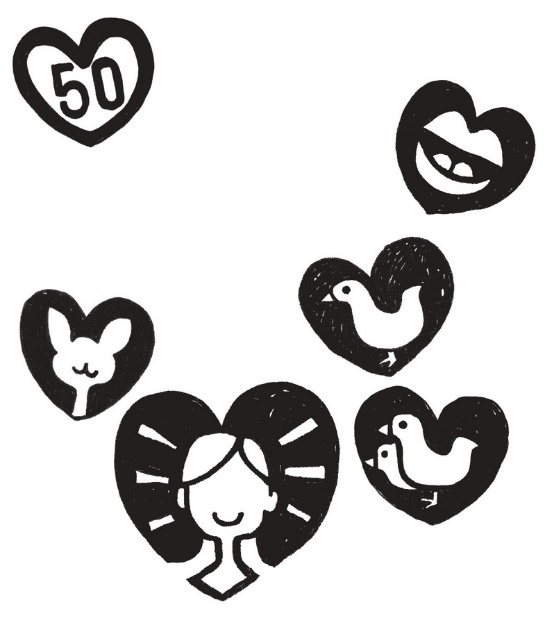
さて、「あなたがやりたいことに耳を傾けると、結婚相手（パートナー）が、同一線上に現れてくる」。
つまり自分が自分自身のテーマと向き合い、自分らしく生きていることで「結婚相手を引き寄せる状態」になっていきます。
その頃には、意識するしないにかかわらず今までとは違ったポジティブな心の状態になっています。
目的はパートナーを引き寄せることですが、それ以外にも良いことが起こり始めることが多く、意識してみると変化に気づきます。
さて、ありのままの自分を生きるとどんな変化が起こるのか、ちょっとまとめてみました。
１
職場でもプライベートでもさまざまなことに興味を持てるようになり、楽しめる。
人間関係や成績が良い状態に向かっている感じがして周囲の笑顔や自分へ承認の言葉が耳に入ってき始める。
「こんなわたしなんて......」などとすぐに思ってしまいがちな今までのネガティブな癖をだんだん手放しはじめてくると、気持ちは軽く、何か起きても「大丈夫、きっとうまくいく」と感じられ、自然と警戒を解き周囲ともつながり始めます。
ちなみに、ネガティブな癖＝ブレーキは「自分自身」ではなく、自分を守るために長いこと身に着けていた服や鎧のようなものです。
「ありのままの自分」とは、その「ブレーキに支配されている自分」ではなく「ブレーキを受け入れている自分自身」のことです。
２
何回もチャレンジして失敗してもトライアル・アンド・エラー（試行錯誤）。
起きた出来事をその都度学びに変えていくので疲れない。
問題が起きても「これはチャンスなんだ」と見方を変えていける。
「ありのままの自分を生きる」ということは「今を生きる」ということ。
「自分を責める癖」って、やってしまった過去のことを後ろ向きに責めてしまうことでしたよね？
責めても状況は何も変わらないだけでなく、多大なエネルギーロスになります。
ありのままの自分を信じれば、できるまで何度でもチャレンジすればいいだけ。
「そんな風にとてもできないわ〜」と思う方は、「私はできない」という思い込みにはまっているだけですから安心しましょう。
「自分を信じる。達成は必ず起こる」と、信頼する瞬間、瞬間を少しずつでも増やして行こうと思うと、それだけで、着実に変化が広がりはじめます。
３
付き合っていた人とうまく行かなくなっても、無理な執着を手放して次へ行ける。
過去の人に対する思いやりはむしろ深くなっているし、次の相手に対して心から愛せる状態になっている。
「ありのままの自分を生きる」ということは、何か限界を感じたらそんな自分を信じて、いったん手放す選択をすることにもなります。
私たちはパートナーができたりすると相手への忠誠心や執着を愛だと思い込みがち。
執着を手放すことで、いろんな新たな相手の魅力も発見できます。
相手も十分自分との関係を楽しんでくれるのです！
４ 人間関係や成績にはっきりと変化が見えてきて、「この人は自分の味方だ」と思える人や、自分の助けを求めているのではないかと思う人が複数現れてくる！
ありのままを夢中になって楽しんでいることで周囲に肯定的な影響を与えている。
その証拠として人が集まっててくる、そんな引き寄せが起こり始めています。
そこにいる人はたまたま同性ばかりかもしれませんし、既婚者ばかりかもしれません。
自分が心から楽しんでいると、自分の内側から出会いを求めるモチベーションがさらに高まってくるようです。
パートナー候補は思ってもみなかったところから現れてくることがありますから、あらゆるご縁の可能性を楽しみましょう。
もちろん今度のお見合い相手かもしれませんし、単なる飲み友達だと思っていた相手だったりする可能性もあります。
何とも思ってなかった相手に突然魅力を感じ始めるなど、 自分自身の意識の変化によって壁だと感じていたところに可能性を見出したりすることもあります。
さて「自分のやりたいことと結婚は同一線上にある」という話の実例を挙げていきたいと思います。
「え？ 私の『やりたいこと』?? 私には何もないかも？」
とまたまた内心焦ったあなた。
大丈夫、あなただけではないのです。
「自分のやりたいことをあまりしてこなかったような気がする」という気持ちは、大抵の方が分かる気がすると思います。
でもね、見方によっては、「すべての人がやりたいことをやってきている」んです。
例え「自分はいつも誰かのためばかりに生きてきてしまった......」という方でも、その方は究極、今までそれをやりたくて生きてきたのだと思います。
また、「自分を粗末にして生きてきたな......」と感じている方は、意識下で何らかの理由があって、自分を粗末にしたかったのではないでしょうか？
結局、私たちは何も無駄なことはしていないのです。
生きたい様に生きてきているし、望んだ結果を手にしているのです。
......もちろんそれが顕在意識のレベルか、潜在意識のレベルかは違いますが。
出来れば自分の自覚できるレベルで、望んだものを手にしたいですよね？
そのためにも、今まで自分はどんな「やりたいことを実現してきたか」を振り返ってみるといいです。
そして「望んだものを手に入れているか」ということもそうですが、「何を望むか明確にイメージできない」としょげる必要もないのです。
だってもし「やりたいことを明確にできない」なら、「明確にしたい」という「望み」をまず持てばいいのですから。
屁理屈のように聞こえるかもしれませんが、どこまでも自分自身に添って現状を受け入れましょう。
自分が何をしたいかをとことん大事にすることこそが、自己肯定感を育てることになります。
......前置きが長くなりましたが、下記の方のメール、長文ですが気持ちがこもっています。
じっくりご覧くださいませ。
メルマガに成婚報告を載せた後にいただいたメールです。
「メルマガ拝見しました。
私の事だ〜とニヤけてしまいました......。
それくらい今は幸せです！
前の私だったら、こんなに幸せで良いのかしら!? と心配になってしまっていたと思いますが、今は大丈夫！な気分。
結婚相談所に入るのは、やっぱり勇気がいりました。
そこまでしなきゃダメなのかって思ったし。
でも一歩踏み出して入会して良かったです。
いろいろな話を聞いていただいて、見えてきた事が、たくさんありました。
本当にありがとうございました。
結婚に関係ないけど......。
私はとにかく......会社で昇格出来ないことが最大のコンプレックスであり、卑屈になってる原因でもありました。
鍵をかけ忘れたこととか、本当に何で私はダメなんだろう......ってふてくされちゃってたし。
でも、それに対処する方法を教えていただいた時は、目からウロコが落ちた気分でした。
「自分で責任を持つ」ってことを教えていただいたときは、今までの卑屈になってる気分が、自由になって解放されました。
会社での今までの私は嫌なこと、苦手なことからは逃げたい......って、思い続けていたけれど、今は、私なりに責任感を持とうって思えています。
私も関わる仕事について、他の人達が話していても今までは「別に私はいいよな〜」と知らん顔をしてたり、「どうせ私じゃなくても......」と逃げ腰だったけど、今は、よく分からないけど、私も関わってるし、分からないなりに自分も参加しなければという風に変わってきました。
そうするとやっぱり周りの反応も違いますね。
まだまだ弱気で、後から入ったしたたかな？ 後輩に「なんであの人ばっかり......！ ズルイ」と思ってしまう所もあるけれど、あの人にはない私の良さだってきっとある！ と自分で自分を励ましてます。
それと「相手の人の要素は自分の中にあるかも？」って言ってくれましたね。
「正直で誠実という私の長所に後輩の持っている『したたかさ』がプラスされたら、すごいじゃない？」って、言っていただいたのが、とっても印象に残ってます！
仕事中も思い出しては、そうだ！ それを目指そう〜！って自分に言い聞かせています。
結婚の話とはちょっと違ってしまいました。
でも、そんな風に変われたから、今の自分があるんだと思います。
本当にありがとうございました。
今日はお相手の山田さんが我が家に来てくれました。
すご〜く丁寧に、母に結婚の話をしてくれて、嬉しかったです。
一人暮らしの現在の住居が２月で更新だそうなので、その頃引越しをして、入籍もその頃に？ と考えてます。
人の人生なんて分からないもんですね。
不思議です！」
（恵美子）
そういえば、思い返せば恵美子さんは、入会時もなかなか決心がつかなくて泣きながら入会したんです。
滝にでも飛び込むような心境だったかもしれません。
彼女は人がよいタイプで、自分がうっかりやってしまったこともなかなか器用にごまかせない正直な人です。
しかし、会社の中で実力よりも軽んじられ、他人から尊重してもらえなかったり......という悩みがありました。
「どうせ自分は......」とふてくされた考えがあったんでしょうね。
当時の彼女はいつもいつも心の中に「羨ましい」という言葉があったのだそうです。
「したたかに立ち回れる人は羨ましい」と。
恵美子さんも、まさに「自分のやりたいことなんて別に」と、ずっと長いこと恨みと嫉妬と文句の悪循環にはまっていた一人だったんです。
お見合いは順調で交際している方とうまく行っていましたが、当初は気になることがとってもたくさんありました。
その中でも最高に気になっていたことは、「このまま付き合って、もし結婚してくれなかったらどうしょう？」という不安。
相手の方は、すごく彼女に対し前向きみたいなのに、です。
実は彼女、何かを決心することをとても怖れていたんですね。
当初、私たちの相談所への入会を決心するのがとても大変だったのと同じく、自分は結婚するんだという決心がつかなかったため、それが相手への疑いとして出てきたようだったんです。
ですが、「男女関係でもなんでも『相手がどうなのかよりもまず自分自身がどうか』でしょ？」と、彼女を説得しました。
自分が本気なら、そういう好意的な態度が相手にも伝わるからです。
もし彼女が自分から意欲的に関わる決心をしなければ、彼がどんなに意欲的にアプローチをしても「糠に釘」。
そのうち彼も冷めてしまったかもしれません。
会社での話はそんな交際のお話と同時進行でうかがっていたのですが、やはり共通のパターンが見えてきました。
会社でたまたましてしまった自分の失敗を必要以上に自分自身で責めることで、実は「改善しよう」という意欲を放棄していることに気づいたんです。
ほんの少し態度を改めることすら、なかなかできにくい時ってありますよね。
職場での意識改革の焦点も、男女関係と全く同じことで「できるかしら？ きっとできない......」みたいな気持ちだったんですね。
今までのような卑屈な気持ちのままでいたら絶対にありえないような「周囲の変化」が、意識を変えることで起きてきます。
彼女が会社の仕事にも「分からないなりに関わろう」と決めたことで、おそらく自分の態度が自然と変わったことでしょう。
自分の態度が変化すれば、やがて周囲も少しずつ変わり始めます。
その後......彼女がなかなか昇格できなかった原因の一つでもある上司が、なんと異動になることがわかったのです。
以前は眼の上のタンコブとして嫌々ながら接していたのですが、腹をくくって前向きに「受け入れることが少しずつ出来るようになった矢先......」のこと。
不思議ですね。
こういう瞬間、あるんですねえ。
ミラクルって......。
さてこのケース、恵美子さんはとくに「やりたいこと探し」が具体的だったわけではなかったですよね？
ネガティブな愚痴と文句ばかりの時はなかなか「どうしたい」は出てきにくいものです。
「昇格できない自分が嫌だ。恥ずかしい、他人が羨ましい、ねたましい。」
↑ ふうん。それじゃ、どうしたい？
「こんな自分の感情も会社も嫌だ......、早く結婚しなくちゃ」
↑ ふうん。それじゃ、本当のところ、どうしたい？
「本音は、周りに自分をもっともっと尊重してもらいたい」
↑ ふうん。それじゃ自分自身は、本当はどうしたい？
「もっと（自分で）自分を尊重したい」
↑ そうだね〜。そのためには何ができる？
そんな問いかけを続けることで、「自分が少し努力することで楽に変化を創り出せる」とわかったのでした。
さまざまな自分自身の揺れる気持ちに気づいて、その都度、「どうしたい？」を繰り返す中で、自分のなりたい状態を発見し、そこから変化、成長していきました。
恵美子さんが心の痛みから逃げず、正直に向き合い手に入れた成果です。
先ほどの恵美子さんのケースは「やりたいこと」に焦点を当ててこなかったタイプの実例でしたが、次の方は「ガンガンお仕事も恋愛もやりたいようにやってきた、でも、結婚だけが......」というタイプの方の実例です。
「私のＬｏｖｅ Ｑｕｅｓｔ（愛の探求）は、年齢に比例して長かったのですが、単に長いだけで、自分はどこへ行きたいのか、長いこと詰め込んできた私のリュックの中身（心）は何なのか、これから何を捨て、何を拾っていけば、そこへ辿り着けるのか分からず、森の中をぐるぐるしていたように思います。
なぜ自分は男性と上手にお付き合いができないのか（したくないのか）悩んでいたところ、ネットで湯田さんのことを知り、カウンセリングを受けてみたくて、すぐに申し込みました。
数回湯田さんのところへ通っているうちに、何を思いっきり放り投げてしまい、何が足りないのかが、色々とはっきりとしてきました。
結婚を申し込んでくれた彼は、強面でそれまでは近寄ったことがないであろう程、外見はタイプではありませんでした。
カウンセリングに通って相手に誠実に向き合おうと決めたはずの自分なのに、ときどき彼に冷たく接してしまう自分がいました。
彼もそれは分かっていたようです。
今思うと悲しくなります。
しばらくして、彼には行動を起こしてそれを継続・成し遂げる強さがあることが分かり、外見と違ってとてもナイーブなところがあったり、コミカルなところもあったりして、
「これからの人生、パートナーとして楽しいかも」
と思ったら、私のココロの形は、とげとげ三角から丸になり、だんだん柔らかくなってきて、最後には、全く好みではなかった彼を、私は好きになっていました。
最初は、もっと若いときに湯田さんのところへカウンセリングに伺うことが出来ていれば良かったと後悔していました。
でも、今だからこそ彼と出会えたし、それまでの経験もできなかったわけで、やっぱり良かったです。
湯田さんには、ココロのプログラミングをし直して頂いたという感じです。
お世話になりました。」
（ドラゴン・タツコ）
ドラゴン・タツコ様！ おめでとう！
本当に「ドラゴン」さんでしたねえ。
この仮名、本人がご自分で付けました。
と言っても彼女は、小さな声で遠慮がちに話す。
奥ゆかしそうな「いい女」なのです。
でもでも、今までずっと男をさりげなく試し、冷たくしすぎて逃げられてしまうということが何度もあったのだそうです。
男性を前にすると、秘めた攻撃性が出てしまいがちな、まさに「ドラゴン」さんだったんですね。
タツコさんの活動は１年半くらい。
タツコさんは仕事もワールドワイドでしたし大変行動力のある人なので、基本は恋愛でゲットできるよう身近な人にターゲットを定めていましたが、一方で地道にお見合いもしていました。
しかし恋愛でも見合いでもタツコさんの選球眼に叶い、厳しいプレッシャーを超えてまで「タツコさんを愛しつくそう！」というひたむきな男性はなかなか現れてくれなかったのです。
何度お見合いしても、そのたびに出てくるのは相手への不満。
そしてコミュニケーションの行き違いから、カウンセラーの私自身へも不満を抱き始めてしまったこともありました。
（いやいやタツコさん、「不満ネタ」を与えてしまいすみませんでした。）
タツコさんは今まで、信頼関係にひびが入った時は相手を切り捨ててしまいがちで、誤解が解けるまで頑張り通すことはあまりなかったそうです。
だからこそですが、取引先やアシスタントなどさまざまな関係との行き違いも、丁寧にコミュニケーションしなおすことを学んだとのことでした。
「誤解を感じたら、率直にしっかりありのまま話す」。
これができるとそれだけで本当にパワフルです。
実際は単純に誤解が生じているだけなのに、「わかってもらえない」と感じてしまうと、もう絶望してつい相手との関係を避けたくなってしまいがち。
そこをあきらめずに丁寧に、分かり合えるまで会話し続けていくと、今まで自分が知らなかった価値に気づき、意識の変化が起こります。
だからこそ「今までの自分だったら近づくこともないようなタイプの人に『愛を感じる』」ことができたのではないでしょうか。
前もお伝えしていますが「自分の好み」って、それ自体が「制限の枠」として作用してしまいます。
好みの人以外の長所や魅力が感じられないのは、実は「違う」と思った段階で、すでにちゃんと見ようとしてないからなのです。
こういった自分の心の「枠」を超えるためにも、交際する前から率直なコミュニケーションが効果的！
タツコさんは「いい人なのだけどおデブちゃんで。メタボ予備軍の体型が気になっちゃうんです。」ということでしたので「じゃ、ダイエットを優しく薦めてみてはいかが？」という展開に。
しばらくして......
ダイエット自体にすごく大きな成果が出たわけじゃないのですが、タツコさんのために、そして自分の将来の健康のためにこれを機会に痩せようと努力している彼の姿は、可愛いらしいと感じられたそうです。
タツコさんは相手と向き合いコミュニケーションを丁寧に行うことで、「愛する選択」をすることができたのです。
もともと自分の力で、仕事も恋も自信を持ってやってきたドラゴン・タツコさんならでは、です。
彼女の場合、「どうしたいか」は......「もちろん、結婚してお互い楽しいパートナーシップを体験したい」と明確。
実は、成婚退会後もしばらく「オトコを試すクセ」はまだ続いていたそうです！
おひとり様ゆえの過剰防衛からくる癖を手なずけることができなかったようで......「習慣」て怖いですね、ホント。
でも、ある時ふと、それでも実は「傷ついているんだ」という彼の本音を聞くことができて、初めて「こんなオジサンに見えても、心の中はナイーブなんだ......！」と気づかされ、初めて彼の愛を丸ごと受け入れることができたそうなんです......！
その瞬間、「トゲトゲだった心がまあるくなった」のですね♪
ドラゴン・タツコさんに引きつづき、博識で世界を飛び回って活躍していたキャリアウーマン・薫さん（仮名）のケース。
奇跡的に、ブレーキになっていた思い込みの枠が外れ、心境の変化を起こした実例をご紹介します。
「湯田さん
私自身、予想外の、驚きの展開になったのですが、昨日、高橋さん（仮名）と結婚することを決めました。
その日、彼とは結婚しないと伝えていた私は、こころの呪縛がなく、こころが楽で、すごく軽い気持ちになって、高橋さんと再会しました。
一緒にホテルのランチを食べながら、２時間ぐらい「お断り」する話をして、今後どうするとか、ざっくばらんにいろいろ話しました。
彼には「幸せになってほしい」といわれました。
お互いに「じゃあね！」ということで、駅まで一緒に歩きました。
出張帰りの私の荷物が多かったので、彼が送ってくれていました。
銀座４丁目の交差点のあたりで、なぜか、初めて手をつないで歩きました。
交差点の真ん中で、お互いの気持ちが通じてＨＵＧしました。
そうしたら、私の中に、直感的に「この人と結婚しよう！」とメッセージが降りてきました。
私も高橋さんも、そのあと１、２時間、呆然としていましたが、結婚すると決めました。
本当に、本当に不思議ですが、そういう展開になりました。
湯田さん、高橋さんの事務所には、昨日のお断りの連絡をしないでいただきたいと存じます。
結婚するほうの連絡にしてくださいませ。」
（薫）
「どうしても、彼と結婚する気になれないんです......」
その前の日、薫さんは私にこう言いました。
「高橋さんのことは、いろいろとチャレンジしてみたんですが、やっぱり断ろうと思います。どうしても......ファンキーな感じで、生理的に好きなタイプじゃないし......」
「そろそろ結婚したい」と願い、結婚相談所やお見合いパーティーなどで知り合った方との何度か交際経験のある方なら、「好きになれない......」というつらさは、多くの方が感じていることではないかと思います。
頭の中では「いい人だし、安心できるし。それに好条件だし♪ 」と思っていても、なぜか自分の「心」が動かない......。
思考では「ＯＫ」でも、ハートでは「ピンとこない」 。
そんなわけで薫さんは、大変知的で行動力もある方ですから、さまざまなお見合いやパーティーに出かけ、「自分が好きになれる人」を探す努力をしつづけていました。
（まるで物件を選ぶときのような行動力！）
「ネガティブな面ばかり拡大視しないよう、積極的にポジティブな面を見つけて行こう！」と前向きに、本当にたくさんの方とお付き合いしてきて......
ある男性には、「安心感」に魅力を感じ、
ある男性には、「スマートなルックス」に魅力を感じ、
ある男性には、「世界に貢献するビジョン」に魅力を感じ、
ある男性には、「地元であることの快適さ」に魅力を感じ、
ある男性には、「ビジネスパートナー」として魅力を感じ......。
お会いする一人一人がどんな人でどんな魅力があるのかよく理解しているところがすごいですよね。
おそらく薫さんは、相手の方一人一人にしっかり興味を持ち、自分から深い話をしながら一人一人の魅力を聞き出したのではないかと思います。
ただ、この段階ではまだ、倫理的に理性だけで了解しているようで、どの方にも心が「惹かれる」状態にはならないようでした。
しかし現実的な薫さんは、「消去法」で順次一人に絞っていったのです。
つまり、高橋さんは、選りすぐった数名の方との交際に至った中で、そこからさらに選りすぐった男性だったのです。
誰もがそうですが、そもそも「たった一人の相手を本気で選ぶ」ということはとても怖いものだと思います。
相手を選ぶためには、まず相手に至近距離まで近寄らなくてはなりません。
独りで自立し生きてきていると、同性異性にかかわらず、相手との距離感を縮めることが難しく感じませんか？
相手と近づいたら、相手の生な感じがそのまま見えてしまいますよね。
ずっと隠し続けていた恥ずかしいことなんて、一つや二つ見つかってしまうかも？ とついつい身構えがちです。
そうでなくても「なんだか違和感」を感じて、その感情を感じること自体に抵抗が出てきたり。
だからこそ、多くの婚活中の女性は「彼を本当に好きになれたらどんなにいいか？」と煩悶します......。
「この人でなければという必然性」とでも言いましょうか、確固とした理由づけみたいなものがなにかあれば......。
もしかして、なにか二人の必然性が感じられるような体験をすれば......！
先ほどのドラゴン・タツコさんの時もそうでしたが、こんな時、相手の方にできるだけ率直に、自分が「気になること」を前向きに伝えてみると効果的なのでお奨めしています。
これは先ほどお伝えした「距離感を縮める」効果もあります。
★ 例えば、ファッションセンスがオジさんくさいなら------
「私、あなたの服装、もっとこんなのが似合うと思うんだけど、今度一緒に選んでみない？」
★ 例えばお相手の喫煙が嫌なら------
「ごめんなさい、実は私、タバコは苦手なので、できればこれを機に禁煙してもらえるとうれしいな♪ 」
★ 例えば、元カレがまだ気になっているなら------
「あなたとの結婚を前向きに考えてみて分かってきたんだけど、実は私、元カレとの傷がまだ癒えていないみたいなの。
ごめんなさい。もう少しだけ、結論を待ってもらえますか？」
文句でなく、前向きな気持ちで誠意をこめて率直に、思い切って伝えてみると、案外お相手の気持ちを動かし、誠意を見せて努力してくれたりします。
そのことで、「ほかの誰でもなく、この私を愛してくれているんだな......」と感じられれば、その愛を前向きに受け入れたくなるかもしれないのです。
もちろんこれは交際相手の方の「度量の大きさ」もありますし、本人の伝え方が本当にポジティブかにもよります。
ですから、壊れることだってもちろんあります。
ただ、結果的にそういう結論になる時は「あの時、思い切って伝えたことで手放せて良かった」と振り返ることが多いです。
お互いの願望を受け入れられるかどうかは、自分と相手の両方が成長しながら作っていくものですから。
薫さんにもそんな風なアドバイスしたところ、聡明で研究熱心な薫さんは、わざわざ元カレの話をし、なんと、元彼とたまたま会えることになったときには連れて行ったり！
（これは高橋さんが「せっかくなので同行させてほしい」とせがんだとのことでしたが）、また、自分自身が受け止めている仕事の社会的使命の話をして、高橋さんのビジョンを質問したり、など忌憚なくチャレンジをしていたのです。
そういったチャレンジの結果、人間としての信頼関係は充分築きあげることができたからこそ、冒頭にあったような「デートで断り話」をすることにしたのです。
通常は、結婚相談所を介してお断りを伝えれば儀礼的にはＯＫなのですが、薫さんはとにかく「誠意を尽くして付き合っていただけたので、『お断り』は自分で、今までの感謝と共に伝えたい。」と思ったそうでした。
振り返ってみれば、そういった一つ一つの丁寧なかかわり方のすべてが、ミラクルを生むステップだったのではないでしょうか。
特に、最後に会う選択をしなければありえない心境の変化ですものね......。
その翌日、彼女の身に起きた出来事が、冒頭の嬉しいメールだったんです......！
そして、下記はさらに一週間後のメール。
「湯田さん、
あれから、かなりのスピードでいろいろ進んでおります。
先週末に、婚約指輪と結婚指輪を、一緒に購入しました。
年内に、私の実家で、両親に会ってもらうことになりました。
彼のすごいところは、一貫して、コミットメントが揺るがなかったところです。
月末に元カレと再会したとき彼もいたのですが、私が元カレを目で追う姿もばっちり見られてしまい、「目がハートマークになっていた」と後から言われたりもしていました。
それでも、自分の信念というか意志を貫き、「お断りランチ」のときに、私を「いじらしいなと思った」と、言ってくれる人でした。
そんなこんなで、「お断りランチ」の終わりのころには、「ここまで私のことを、ちょっと離れたスタンスで観てくれる人はいないだろう」、と思い始めていました。
それで、家路につく駅まで一緒に歩いている途中で、自然と「天からメッセージ」が降りてきて、「この人と結婚しょう！」直感的に決断できたんです。」
しばらくしてお二人そろってごあいさつに見えましたが......
いやいや、「生理的に......」「ファンキーな感じで」なんて、一体なにが不満だったの？？？と改めて驚いてしまいました。
実に聡明で素敵な男性です！
要は自分の好みのタイプと違っていた だけってこと、なんでしょうね......。
つまりこれも「思い込みの枠」だったのです。
下記はその後いただいたお礼のメール。
「湯田さん、
本日は、二人でお目にかかれまして、とてもよかったです。
ちょうど１年前の１月７日に、はじめて湯田さんのところで体験カウンセリングを受けましたが、１年後に、結婚のご報告ができるとは。
当時は夢にも思っていませんでした。
湯田さんに、彼のことを「マインドがクリアで、すばらしい」とほめていただき、なんか、すごくうれしい気持ちになりました。
「合格印」を押してもらった感じがして、安心しました。
彼にも、「素直に受け取ろう」って話しました。
外見、服装の趣味などで、どうしても、自分のイメージと違う部分があり、コンプレックスを私のほうが感じているところもありましたが、それが、癒された感じがしました。
ここ１か月ぐらいで少しずつ、お互いになじんできまして、お互いによりよいパートナーになる、パートナーでいられるように、信頼し、感謝し、寛容を実践しようと、話しています。
結婚を決めてから、彼に「感謝じゃなくて、愛がほしい」といわれたのは、極めつけのセリフで、こころに刻みました。
「私になにかしてほしいことってある？」と聞いたときには、「ずっとプロフェッショナルとして輝いていてほしい」といわれました。（ほんと、すばらしい男性です）
私たちの結婚は、燃え上がるような恋愛関係があったわけではないけれど、
「お互いに少しずつ愛を育てていく関係なんだ」
「そういった愛の形があってもいいと思う」って、彼は繰り返し、言っています。
少しずつ、芽が出てきた愛を、育てよう、と話しています。」
ドラゴン・タツコさんと薫さんとの共通点は、仕事に関しては流れの中にいて、どんどん変化成長したり社会的使命を生きていたりしているのに、なぜか男女関係だけがうまくいかない、というパターン。
そしてもう一つ共通点は、「好みのタイプでなければ結婚は無理」と信じ込んでいたこと。
「自分の求めているものはこういうもの」と思い込んでいると、そばにどんなに素敵な人がいても気づかないものです。
つまり、裏を返せば、 結婚相手が見つからないのは「自分自身の大きさに自分が気づかない」だけなのかもしれません。
ワイルドでビッグなドラゴン・タツコさんだからこそ、たくましい「コワモテ」で心はナイーブな彼と最高のパートナーシップが築けるのでは。
そして、仕事で世界のたくさんの人々を救い社会進歩に寄与するという大きなビジョンを持っている薫さんが、そのビジョンを達成するためにも、「ファンキー」でどこまでも意志が強く行動力のある彼との出会いは必然的だったのかも。
そう思いませんか？
「あなたらしく生きるほど、ありのままの自分を受け入れてくれるぴったりのパートナーが現れる」ということです。
そして、「ありのままの自分を生きると、あなたのファンが引き寄せられる」
ありのままのあなたに引き寄せられるパートナーは、あなたの一番の「ファン」なのです。
自分が、何を望んでいるか、ありのままの自分に気づき受け入れた時......
あなたの目の前に、最高のパートナーがあらわれてくるかもしれません！
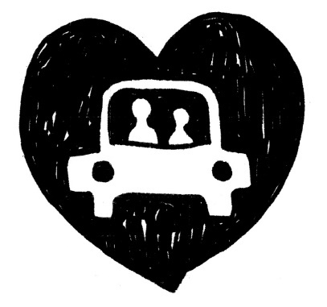
さて、いよいよ最終章です。
まずは第４章の「おひとりよがり様」、古田さんのその後と、結婚相手との関係の中から見えてきたことをお伝えします。
古田さんからの成婚メッセージ、少し長いですが大変具体的。
「こんばんは、古田です。
このたび、婚約することができました。
実は、初めて会ってから34 日（約５週間）で決まりました。
本当に、あっという間でした。
決まるときはこんな感じなのか？
何かと、今後のことなどを色々と進めながら、じわ〜っと、幸せを噛みしめています。
何とも言えない、満たされた感じ。
そして、周りの人々へ、感謝の気持ちが込み上げて来ています。
マイペースながらもあきらめないで続けてきて、良かったです。
そして、湯田さんのところで活動してきて本当に良かった。
湯田さんのところでなかったら、結婚できなかったのではと思っています。
とにかく、湯田さんとのカウンセリングでの私の課題は、自分にハマらない（自意識過剰にならない）、遠慮しない、だからまずは相手に集中すること！ でした。
それは結局、自分が思っていることや感じていることを、遠慮せず相手に伝える、また結果を怖がらず、相手との関係を深めることに集中する、ことだったと思います。
そして最近、決して沈黙は怖くない、ことが分かってきました。
昨年、好きになってはいけない、と思っていた女性を好きになりましたが、湯田さんのカウンセリングを通じて、好きと認めることができ、そしてその気持ちを相手に伝えたことで、どんな結果になっても受け入れる覚悟ができ、前に進むことへの怖れが少なくなった、ように思います。
今までは、湯田さんから「ウチの会員に『古田さん、どう思う？』って聞いてもイマイチ反応がね〜」などと言われても、「まぁ仕方ない」ぐらいな受け取り方でしたが、今年のゴールデンウィーク明け頃からか、何故か「まぁ皆さん、見てなよ〜！」という気持ちになっていきました。
婚約相手の彼女（以下「みち子さん」と呼ぶことにします）とは、お互いの波長が合ったのだと思います、が。
お互いに結婚したいのだから、失敗しないかどうか？ より、まずは結婚に向かう！ことを意図できた、ような気がします。
みち子さんの、飾らない、優しい人柄や、笑顔に惹かれ、楽しみを（将来のパートナーとのために）取っておくところや、結婚したらこんな生活がしたい、などの価値観が一致したように思え、「似た者どうしかも。」と安心感を得ることができ、かといって、舞い上がってしまうこともなく、落ち着いて次へと進むことができた、ような気がします。
とにかく、常に私のことを良い様に受け取ってくれたみち子さんのおかげ、と感謝しています。
そんなわけで、割とスムーズに交際に入ることができたのですが、実はその後、自分の中では、ちょっとした試練があったように思っています。
それは、交際になってから、みち子さんと会っている時、時折、彼女の表情が魅力的に見えないことがあり、「俺はずっとこの先、この女性を愛して行けるだろうか？ いつの日か、やっぱり嫌だ！とはならないだろうか？」と、不安を覚えたことがあったのです。
（みち子さんの表情がこわばっていたり、悲しい目をしていると感じる時がありました。 その後、彼女に聞きましたが、過去に、かなりの悲しいこと、辛いこと、を経験していたようです。）
そう言えば、数年前の話になりますが、交際となってから会った後に、その方の「見た目や雰囲気」がどうしても気になってしまい、自分から交際をお断りした経験がありました。
その後のカウンセリングでの湯田さんの言葉は、忘れていません。
「じゃあ、自分が思いっきり愛して、その娘をキレイにしてあげる、ってのはどう？」
そして、ワークショップでも、
「パートナーに何か足りない？と感じて他の女性へ求めても、ない」
「相手は自分の鏡」
とか、そんな言葉あったよなぁ、と思い出しました。
そこで、思い返してみると、みち子さんから、いかに自分が多くのものを受け取っているか、を再確認することができたのです。
そして、その後に会った時、みち子さんが、可愛くてしょうがないくらい、魅力的に見えました。
それからの日々、彼女は、ますます魅力を増しています。
結局、リアルラブでの４年を超える日々、カウンセリングやワークショップなどを通じ、一歩一歩、自分を成長させることができたのかな？ などと、今は思っています。
また、かつて交際して下さった方々からは、多くの気付きや学びを得ることができました。
感謝、感謝、です。
湯田さんご夫妻、本当にありがとうございました。
そして、ワークショップで一緒に学んだ皆さん、ありがとうございました。
取り急ぎ、ご報告まで。」
（古田）
ワークショップや飲み会への参加率第１位の真面目な古田さん。
彼のメッセージは多くの会員を感動させてくれました。
「遠慮せずに、好きな人に感じていることを伝える」。
これがそれまで彼にとり、どれほど大変だったか。
今まで、「なかったこと」にしていた自分自身の「恥ずかしい・情けない感情」と向き合うということになるのですから......。
ただですね......成婚報告会に参加した人たちですら陥りがちなのですが、
みなさん彼の問題を、もしかして「モテなかったオトコのラッキーな話」として「他人事」だと感じていませんか？
こういった「本音を伝えられない問題」って、実は多くの男女におきています。
男性だけでなく女性もとても多いのです。
実際、ある特定の場面で、いわゆる「スルーしちゃう」、つまり「人と対峙すること」ことを避けてしまいがちな方はたくさんいますよね？
避けていることすら本人は気づかない方が多いです。
危機感をあおる言い方でなく、思い切り前向きに言いますと......
今まで、限界を感じて終わっていたはずの恋愛が、「本音を伝え合う」ことで、つながりを取り戻せるかもしれないのです。
ポジティブに言うとすごく希望が持てますね！
「本音を伝え合う」ことで、今まで「なかったこと」にしていた自分自身の「恥ずかしい・情けない感情」と向き合うことになり、自分をありのまま伝えた分だけ相手との距離もぐんと縮まります。
古田さんの場合、第４章でお話ししたその後は、お見合い相手を何度も替えながら、「遠慮せずに、好きな人に感じていることを伝える」ことで相手との関係を深めることを、練習して行きました。
そしてやがて、彼の言う「昨年、好きになってはいけない、と思っていた女性を好きになりました」という体験がやってきたのです。
この表現そのものが彼の超生真面目な性格を伝えていますが、別段「不倫」などではなく、そもそも彼は「会社内で恋愛沙汰は起こさない」という強い信念を持っていたのだそうです。
お相手は「バツイチ子持ちで、なかなか結婚してくれないあいまいな関係の人と交際中の同僚」とのことでした。
すべての女性に対して当たらず障らずのように見える彼でしたが、ある日「会社ではバツイチ子持ちの同僚と打ち解けて、冗談が言えてすごく楽しめるんです」と話すので、「それじゃその人との可能性は？」と尋ねたところ「いや、女性として意識してないんで」と否定......。
実は、私はここでも、彼のお母さんとの苦しい体験から作られた「リアルな女性をつい怖れてしまうブレーキ」らしきものを感じました。
「会社で恋愛沙汰は起こさない」
「女性として意識してない」
と決めることで、彼は自分の安全を守り、正当化しているような印象を受けたのです。
そこで「じゃ、これは練習だと思ってやってみるのはどう？」と、改めて、「彼女を女性だと認識しながら仲良くしてみたらどうなるかな？」と提案してみました。
リアルな人間関係に男女関係の感情を感じてみることができる良い機会かも......？と。
やがて彼は率直に、自分が「女性として愛していた」ことを認めることができたのです。
彼は自分自身の「信念」（＝実は思い込みの枠）にチャレンジしたことで、「愛」に気づくことができたのです。
そして、そればかりではなく、それを相手に素直に伝えることができたのです。
結果は------
その女性は、少しの間検討してくれていたようではありましたが、どうしても決断までには至らなかったようで......。
彼は、冷静にその事実を受けいれました。
心に秘めた気持ちをありのまま認め、そして、 「自分の気持ちを率直に相手に伝えることができた」ということが、そのまま「内なる自信」になったのです！
ここで、「またダメだったんだ、だから会社の中で恋愛沙汰を持ち出したくなかったんだよ......！」と投げやりになり、「結婚なんてもういいや......」とやめてしまう選択もあったのでは......と、思いませんか？
でも、彼はそこで挫折しませんでした。
一番リスクの高い相手に対し「人に愛を伝える」という課題を、見事大成功させたのですもの！
「失恋」の苦しい体験が、自分にとってつらすぎて、今も日常に影響を与えている、なんてことはありませんか？
相手とつながろうと努力することにあまりに疲れて、無理しすぎて絶望し、「もう、愛なんていらない......」と。
かたや、そこから立ち直り幸せになっている人もたくさんいますよね？
さて、失恋の痛手から立ち直れない人と、失恋の痛手から学んで幸せになる人とは、何が違うか分かりますか？
それは......
「自分や誰かを、責めているかどうか」
ああすればよかった、こうしてあげればよかった、あの人があんなことしたからダメだったんだ。
私がバカだった。
なんであんなことになっちゃったんだ。
許せない！ あいつも許せないし自分も許せない......！
こんなふうに過去のことを思い返し、自分の中にある怒りや後悔の感情を「誰かのせい」・「何かのせい」・「自分のせい」にしてフリーズさせていると、次の恋愛は怖くてする気になれません。
何が自分にとって苦しかったのか冷静に振り返りましょう。
そうすると、気づかぬうちにさまざまなことで「無理」していた自分に気づきます。
そして「もっと楽に、自分のまま生きてもいいよね？」と思えれば、失恋がトラウマにならずに学びになります。
例えば、こんな風に考え直してみてはいかがでしょうか？
ああすればよかった、こうしてあげればよかった、あの人があんなことしたからダメだったんだ。
私がバカだった。
なんであんなことになっちゃったんだ。
許せない！ あいつも許せないし自分も許せない......！
↓ ↓ ↓
◯いろいろとやってみたな。
やろうと思ってできないこともあったけど自分ではホントにがんばって良くやった。
あれだけ気持ちがすれ違っていたし、あの時の自分にとってはあれがベストな選択だった。
（まずは自分を承認。）
◯今はあいつのことをまだ許せない。
とりあえずこんな自分を受けいれよう。
（許せなくてもＯＫ。今はこの状態をありのまま受け留める。）
◯ホントのホントはこうしたかった。
もし今度同じことが起こったら、こうしよう。
古田さんも「愛する女性に堂々と愛を伝えることができた」と自己承認し、今回の結果を肯定的に受け入れたことで学びに変えることができたのです。
「自分が心から信頼しあえるパートナーは必ずいる。」と。
「あとは時間の問題」というわけです！
そして、彼がそんな風に確信できたのは、失敗するたびに学び、「できるまでやり続ける」と深く決意できたからです。
だからこそ、「まあ、みなさん、見てなよ〜」だったのですね。
さて、古田さんがとうとう引き寄せた運命のお相手について、触れて行きたいと思います。
リアルラブでは成婚が出ると、ＯＫしてくださるカップルの方々には「成婚報告会」を行い、スピーカーになっていただきます。
参加者はお祝いをかねて質問攻めし、二人の結婚へのプロセスをお聞きし、それぞれの婚活の学びにしていきます。
古田さんご夫妻の成婚報告会は、会場いっぱいの人が集まりました。
これは、彼が人間として信頼されている人物だったことと同時に......交際だけで終了した人さえ、彼の婚活仲間として励まし合う友達関係になっていた、というのもありました。
その成婚報告会では、「過去古田さんと二人でデートしたことがある」という女性が（カミングアウトはしませんでしたが）少なくとも３人いました......！
お相手のみち子さんは、古田さんから何もかもありのままお聞きし、すべて了解済み！
みんなの前で、自分自身の今までの結婚への苦手意識や、うまくいかなかったいきさつもすっかり開示してくださいました。
これは古田さんがやりたいことに対し一緒に興味を持つことができていて、二人の間に深い絆がすでに築かれているからだと分かりました。
お話を聞いてみると、みち子さんは結婚相談所は２度目だそうで、以前は別のところで一年活動したそうですが、なんとそこでは一度もお見合いが成立することがなかったそうで！
そんなふうに伝えると、「一体どんな顔？」と思うのではないでしょうか？
ところが目鼻立ちがはっきりしていて女優・前田美波里似のボーイッシュな美人なのです！
しかし一年もの間、お見合いも成立せず放っておく結婚相談所も、あるんですよねえ!!
と、私としては同業者にあきれ返りますが、まあ気を取り直して......。
みち子さんはそんなわけで「自分はもしかしたら結婚に向いてないんじゃないか？」と悩んでいたそうなんです。
が、頑張ってそれこそ気を取り直して、結婚相談所を替えてみて、そこで二人目のお見合い相手が古田さんだったそうで。
運命の女神様はよくぞ彼女に一年もの長い間、見合いさせないでいてくださいました！
そんないきさつも手伝ってか、とても前向きで謙虚な気持ちで二人が出会うことができたんですね......。
成婚報告会は、いつもいろんな人がそれぞれ自分の興味本位で質問し始めるので「そんなことどうでもいいでしょ!? 」みたいな質問もポンポン出ますが、逆に未知な発見もあったりします。
「プロフィール段階では、お互いどういう印象だったんですか？」という質問に対して、これまた二人とも共通していたこと......。
そもそもは古田さん自身、プロフィール段階ではみち子さんをあまり「好みのタイプ」とは感じられなかったそうでした。
つまり、いつもの自分が「いいな」と思うタイプではなかったのだけど、「いや、申し込んでみよう！」と思ったそうです。
そして偶然にも、みち子さんも実は同じような気持ちで、古田さんのことは好きなタイプではなかったそうですが「ま、受けてみようか。」と思ったそうです。
ところが会った瞬間から、お互いに実に「いい感じ」を受けたとのこと。
「好みのタイプ」というブレーキは、すごく大きく作用する、という話はこの本の冒頭から第８章までの間、さまざまな事例を挙げてお伝えしていますが、ここでまた偶然にもその話が出たんです。
二人とも「今までの好みのタイプじゃないかも？」と思ったのに、あえてそれを超えてみようと思ったことで、すでに会う前から「思い込みの枠」から出る選択をしたことになったのかもしれません。
加えて、古田さんは、ずっと課題だったはずの「相手に自分の感じていることを率直に伝える」ことを全く自然に行なっていたそうです。
彼女の「会った時から、すぐに自分をどう感じているかを率直に話してくれたし、その後もたびたび『まじめに将来のことを考えています』と伝えてくれて安心できた」と言う発言からも、彼の自然な成長ぶりが分かります。
二人とも出会いの体験を「なんだか自分と似ている......と感じた」と口をそろえて言っていたのも印象的です。
確かに、客観的に見てもなんだか見た目まで似ていると感じられる「鏡」のような二人でした。
さて、「パートナーは鏡」。
なぜか「結婚すると似てくる」などと言われていますよね？
私と夫も、顔のつくりは全然違うのに、時々「似ている」と言われます。
「夫婦はお互いを鏡として映しだすほど、お互いの共通点を見つけることができる」。
これは法則のようです。
二人が共通点を見いだすほどに、そして二人のコミュニケーションが共感しあえるほどに、二人はなぜか似てくるのかもしれません。
古田さんのように「初めて会った時から似ていると感じた」ケースはミラクルかもしれませんが、どんな相手も一緒に生活し始めて馴染めば馴染むほど似てきます。
だからこそ、逆に古田さんのように「自分が一度結婚相手として選択した相手を素敵だと思えなくなる」ということもよくある事です。
「鏡」ですもの。
通常、自分への肯定感が低ければ、相手も肯定できないですよね。
自分が決めたモノでも相手でも「おいおい、この選択で大丈夫か？」と疑いを持ちたくなりますよね？
「鏡」に向かって「なんて顔だ！」と言っているわけですから、「自己嫌悪」みたいなものです。
特に今回の古田さんみたいに、「今まで自分が感じていた自分の価値」以上の価値を、相手からあふれるほど与えられた時など、なんだか急に不安になりがち。
私も最近そんな体験をしました。
出版社に行った時、言われた言葉です。
「こういう本を待ってたんです！」
......なんて言われちゃうと、天にも昇る気持ちと同時に
「ホント？......でも、この人、なんだか大丈夫？」
なんて思ったりして......。
失礼な話です！
自分を卑下する癖で、相手まで一緒に卑下しちゃっているのです。
いかに自分の価値を正当に感じていないか。
誰しもそういった自己認識の変遷は起こるのではないでしょうか？
今までの「自分はこういう人」という感覚とあまりに違う評価をもらうと、そのギャップに落ち着かないのです。
それは、今まさに自分が変化している瞬間だからこそ、自己イメージが追い付いていない、とも言えますよね！
古田さんは、今までの「恥ずかしい自分」というイメージを手放し、パートナーのみち子さんの心からの尊敬の言葉を信じました。
愛する人を信頼することで、自分自身への信頼を取り戻したのです！
「結婚」！
本当の人生を生きるのはこれからです。
家族に愛のエネルギーを与え、受け取り、どんどん循環させることで、社会にもやさしい影響を与えていけます。
もし自分を卑下すれば「苦労は２倍、喜びは半分」になるし、自分を肯定すれば「苦労は半分、喜びは２倍」どころか、合わせ鏡のように、無限大に幸せが広がっていく ......
これが結婚生活です。
自分が何を選択するとうまくいくのか、パートナーは鏡のように見せてくれます。
信頼し合う二人なら、互いを鏡として今後もさらに成長し成熟していくことでしょう。
そして......今後も喧嘩したり、お互い話さなくなったり、セックスからしばらく遠ざかったり......さまざまな危機があるかもしれません。
でも、その都度その都度、自分からつながり続けようと思うことで、必ずどこかで修復できる何かを発見していくことでしょう！
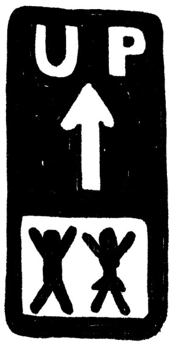
突然ですが、リアルラブで婚活中の現役会員さんが、私と夫の馴れ初めから現在にいたるまでを突撃インタビューしてくれました。
〈二人の「心のブレーキ」は？〉
会員（インタビュアー） お二人の出会いは？
夫（博和） そもそもの出会いは、2 1 歳の時に入った演劇研究所の同期生だったんです。
会 員 その時お二人はどういうご関係だったんですか？
博 和 出会って１年くらい経ってから交際したんですが、卒業後には別れました。
会 員 そのあと、お二人は連絡を取ってたんですか？
博 和 全然。直接連絡とってなかったけど、共通の知人を通してお互いの消息はなんとなくは知ってた程度。
会 員 その間、博和さんも結婚されていなかったんですよね？
博
和
同棲とかはいいけど、結婚して社会的に認知されたい気持ちはなくて、30
代後半くらいかなあ、やっと結婚してもいいかな？ と。
それまでは、結婚よりも自分の夢の方が優先で。
会 員 どんな夢があったんですか？
博 和 作家になるという夢があって。
会 員 博和さんも結婚に対して何かブレーキがあったんですか？
博
和
「自分は特別だ」という思い込みかなぁ。
小さい頃に人の生き死にに関わる特別な体験をしたからそれを文学的に昇華させたい、という思いが強くて。
それが亡くなった人を大切にすることだから、それをしないと先に進めない、と思い込んでいた。
今思うと、それが足かせになっていたのかもしれない。
何人かお付き合いした人もいたけど、結婚がちらついたら逃げてたし。
会 員 結婚がちらついたら逃げるんですね。
博
和
まぁ、相手もそんな感じの人を選ぶんで。
そんな風に過ごしていたら、40
歳過ぎてこの人から突然電話があったんです。
〈20 年前は依存的だったのに......？〉
会 員 電話があった時、どう感じました？
博
和
電話の印象が明るく前向きで「あれっ？ あいつってこういうやつだっけ？」と。
20
年前のはすっぱで生意気で依存的で重いやつという印象とは違ってた。
電話をもらって会うかどうか迷ったよねえ。
億劫だったし、「彼女を捨てた」という罪悪感があったので。
会 員 湯田さんは別れについてどう感じてたんですか？
湯田佐恵子（以下
佐恵子）
とにかくこの人が暗いのが嫌で。
まだ20
歳の頃だったし、ものすごく依存的だったから嫌なところしか見えなかった。
「もう少しいいオトコがいるだろう」と別れた。
会
員
面白いですね。
お互いに自分から別れたと思ってたんですね。
それで「迷っていたけれど、でも会った」のはどうしてですか？
博
和
「この前はありがとう。迷惑でなければ会いませんか？」
という軽い感じのハガキが届いて、こちらから電話をかけました。
それでこちらも軽く連絡できた。
佐恵子 ......え？ ハガキなんか送ったっけ？ 全然、覚えてないけど......ホント？
会 員 そもそも湯田さんはどうして連絡しようと思ったんですか？
佐恵子
その頃の私は、40
過ぎて午前と午後ダブルヘッダーでお見合いしたりしながらことごとく断られ続けてたの。
私って今も何でも蹴散らしちゃう癖あるけど、独身時代は今の３倍くらいひどかったわけ。
で、こんな性格の私に人生賭けてくれる人なんていないだろう......。と本気で思ってた。
結婚相談所の人がなんとか相手を説得してくれて一人だけ交際した人がいて、その人は遠くに住んでいるし話は合わないけど、まあ私の年齢は41
になってたし、とにかく「相手」はどうでも「出産年齢」にコミットしてたので、もう少しだけ探してダメだったらそのオトコと結婚して子ども産んで、それでもダメなら別れればいいかと思って。
で、最後のあがきという時に「こんな私でもオンナだと思ってくれた人って全くいなかったわけじゃなかったよね？
そういや今も独身だって言ってたような？
そうだ！ 昔の伝手という手もあるかも？」と思いついたわけ。
〈自分の思ってた好みと違う、というところがストライク〉
会 員 実際に会ってみるとどうでした？
博
和
20
年ぶりに会った彼女は、電話の印象と同じで明るくて前向きで。
営業やってて車の運転もばんばんしてて、昔知ってるグズで文句しか言わないヤツとは違うな、と。
会員 湯田さんはどうでした？
佐恵子
話すと、あんなに暗くて理屈っぽかったのに、妙に明るいおじさんになってたのもびっくり。
前は毛深い人でそれが嫌だったんだけど、会ったら見事にハゲてたんですよ。
ひぇ〜ってびっくりしたけど「昔のジャック・ニコルソンみたいになってカッコいいかも？」となぜか思えた。
まさかと思ったけど、自分の思ってた「好み」と全く違うかたちでストライクが入ったというか。
会
員
お互いに相手が暗いところが引っかかっていたのに、再会すると相手は明るくなっていた。
合わせ鏡のようですね。
佐恵子
私たちは全くそうは思わなかったけどねえ、明るさの意味も違うし。
でも、不思議と他人から見るとそう思えるのかもね？
博
和
その時、彼女はエニアグラムやビジョン心理学の分厚い本をバーンと持ってきて、僕の知らない世界を知ってて、僕の読んでた哲学の本とは違う、直接生きていくことに直結することを話すわけです。
それで、彼女になにがあったのか興味をもって会うようになりましたね。
会 員 それですぐに結婚の話になったのですか？
佐恵子
そりゃ「なった」んじゃなくて「そう持って行った」。
「ここで決めないと私には時間がない！」と。
さっそく実行あるのみ。
２回目に飲んでて、もともと泣き上戸なんだけど、無言で目をうるうるさせてその気にさせてから、「実は私、結婚相手を探してるの......」って言って「うん」と言わせたの。
会 員 博和さんの方は結婚してもいいと思ったんですか？
博
和
その必死さに心が動いた、という感じかな。
でも結婚前提でというのはそんなに抵抗なく、流れに乗ってもいいかなと。
〈怖れを超えて、結婚を決めた〉
会 員 それですんなり結婚が決まったんですか？
佐恵子
いや、もう一山あった。
うちの両親にあいさつに行った帰り。
私はあまり運転が得意じゃないので、ハンドル握ると余裕がなくなっちゃうのね。
この人は運転しないから、左車線走っているのに「そこ右」とか言うわけ。
そんなことが何度かあって、「いい加減にしてよ！」ってどなったら......
泣き出しちゃって。
「結婚すると言ったけど、君とはとっても結婚できないよ」って。
博
和
とにかくみじめで。奈落に突き落とされた感じで。（笑）
親御さんがとても喜んで、あまりにも幸せでいい雰囲気で来ていたのに、こんな豹変ぶりがあまりにショックで。
佐恵子
「あ〜、せっかくここまで来たけど、すべてが水の泡......」と。
そういや昔もこんな感じになって「なんなのよ！」と怒って何度終わりにしてきたか、と。
で、さすがにここは窮地に追い込まれた心境で、慎重に......
「大丈夫だから」と、肩に手を置いて言ったわけ。
会 員 それで......？
佐恵子 ごまかせた感じ？
博
和
この人は「私、成長する！」って何度も言ってた。
この必死さにもう一回騙されてみようかと。（笑）
会 員 結婚することになったんですね？
佐恵子 この人、婚姻届に印鑑つきながら「ほら、これがお前のあれほど欲しがってた印鑑だ、もってけ泥棒〜！」って言ってたし。
会 員 （笑）
<結婚して楽になった〉
会 員 結婚してみてどうでした？ 「豹変」は怖くなくなりましたか？
博
和
ずいぶん鍛えられた（笑）。
僕は自分では弱いって思いたがるけど、実はそんなに弱くない。
僕たちけっこう喧嘩するんだよね。
この人に触発されて喧嘩して、自分の中の怒りが引き出されて、そうすると自分が自分になれて楽になった。
それまでの自分の人生のパターンでは、喧嘩するときはその関係を終えるときだって決めてたから、ここまで喧嘩しても終わらない関係もあるんだなって初めて受け入れられたんだよね。
初めて怒りも出せて、怒るってこんなに気持ちがいいんだなって。
そこから変わっていきましたよ。
会社の中でも楽になって。
今まで反論もできなかったんだけど、言いたいことも言えるようになった。
とにかく毎日がリアルで、地に足がついた感じ。
会 員 湯田さんはどうでした？
佐恵子
結婚した時は......むしろ雲の上にいるみたいな気分でリアルじゃない感じかな。
でも子どもが生まれてから夫の関心が子どもに行き、やっとそれこそ地に足がついた感じ。
そうそう、引っ越し先を選ぶとき「この部屋だったら結婚相談所を開業できるかも？」ってイメージがかすめてたけど、まだその時は妄想みたいなもので真剣には考えてなかったの。
で、結婚したら一か月もしないで妊娠が分かって、高齢出産で絶対安静だったし、「思い切って退職して、これを機に結婚相談所をやってみよう！」って決めたんですよ。
会 員 結婚・出産をきっかけに、夢もかなえたんですね。
〈結婚は貢献、そして変わらないと思っていた自分も変われるということ〉
会 員 最後に、読者の皆様にメッセージをお願いします。
博
和
この人に半分脅されて決めたって言ったけれど、今覚えてるのは、本当は変わりたかったっていうこと。
人生を変えたかった。
誰かが変えてくれるのを待っていたんです。
佐恵子
私は、「この人モテなそうだし結婚なんて考えられなさそうだから、私が結婚することでこの人に家庭や子どものよさを体験させてあげられる」って思った。
ま、これは私の勝手な「上から目線」だったんだけどね。
「この人を幸せにすることは貢献なんだな」って思った。
「こんな私でも、人を幸せにすることができるんだ」って。
これって結婚の一番のうまみじゃないかな？
お互いの存在が「相手への貢献」なのよね。
博
和
僕は、「自分だからお前のいいところ分かるよ」って思ったんです。
この人は10
人いたら10
人皆に好かれるタイプじゃないしね。
そして、言いたいのは人は変われるってこと。
子どもが生まれるまで、子どもが好きだなんて全然思ってなかった。
自分の中に父性があるなんて知らなかった。
独身の時って自分で好きなように自分のこと解釈してるし、自分の性格とか価値観って変わらないって思ってるじゃないですか。
でも目の前に具体的なものが現れるとコロッと変わるんですよね。
どっちがいいか分からないよ。
いい悪いじゃないけれど、変わるよね。
会
員
私も結婚して自分がどんな風に変わるか、楽しみになってきました。
湯田さん、成婚までよろしくお願いします！
二〇一四年は、私にとり本当に波乱万丈の年になりました。
ディズニー映画『アナと雪の女王』が超ロングランの一年間でしたが、私にとっても雪山に独り引き籠るエルサのような不退転の決意から始まりました。
温めていた原稿は出版社とめぐり逢えず三年過ぎ、当時個人的事情で孤立感Ｍａｘの私は、まさに絶望の中からありのままを選択したエルサの心境。
「もう、（人のことを考えて遠慮するのは）やめよう！」
納得いくように自分を表現し、「自分にとって面白い事」をどんどん書こうと。
ありのままを！
そもそも私は、結婚に希望が持てない人が結婚したくなるような本を書きたい、と思っていました。
毎日接する目の前の会員が徐々に変化して行くさまをそのまま丁寧に書きさえすれば何か伝わるものがあるはず。
私にとり最大のリソースは、すべて会員との交流から生まれているのだと感じました。
そんな時、たまたま雑談で出版の話をしていたら、「その原稿、良かったら私に読ませてください。私、そういうキャッチとか得意なんで」と言ってくれた会員が現れたのです。
でも......「え〜？ 会員さんにそんなことお願いするなんて......？」。
これ、メンツというかプライドというか？
これも、本文中に山ほど出てくる「思い込み」にすぎないわけで。
まさに「ブレーキ」。
そして本文にも書いたように、思い込みを超えていくと、必ず何か大きな発見があるものです！
その方は、メッセージパートナー＝綾子さん。
目次を見直してくれ、「心のブレーキ」というメインのキャッチを作ってくれたのです。
最後の「とつぜんインタビューです」のインタビュアーも彼女です。
ちなみに、彼女は私を助けてくれただけではなく、この体験で手ごたえを感じてくれたとのことで、これを機に「メッセージパートナー」として活動していくことになったそうです。
私自身は、妙なこだわりを手放し「人の助けを借りる」という新たな選択ができたことで、直感的に「流れに身を任す準備が整った」と感じました。
まだ出版社が決まってないうちに周囲に「私は出版できる」と公言していたくらいです。
『企画のたまご屋さん』に提出すると、プロデューサーさんから「タイトル自体を『心のブレーキ』でいきませんか？」と提案していただき、それが功を奏し、アルマットの、私よりずっと広範囲に婚活事情をご存知な編集者さんに「この本は私が読みたいと思って」と、お声掛けいただきました。
まさに「渡りに舟」です。
本当に出会いが出会いを生み、流れが流れを生みました。
流れはさらに急になり、夏に、なんと私の心臓病がわかり、発売時期のことを考えて早めに手術を決意。
とはいえ手術・入院と原稿直しとを両立をさせる中で揺れる私がおり、編集者さんには大変ご心労をおかけしました。
さまざまな友人・知人にも原稿を読んでいただき励ましをいただいたり、出版関係をご紹介いただいたり、本当にたくさんの方にお世話になりました。
そもそも、出版なんて夢にも考えてもいなかった頃、「あなたの本が紀伊国屋書店で平積みされているイメージを見た！」と、私の五年先のビジョンを勝手に思い描いてくださったＴ先輩、本当にありがとうございました！
また「自費出版をしませんか？」と３年以上前に何度も営業してくださった、ある出版社の○○さん、あなたが「湯田さんのメルマガは本当に面白い！」と励ましてくださったから原稿をまとめてみるつもりになりました。
会員の何人かの方々に「リアルラブ」や「湯田さん」のカウンセリングについての生のコメントをいただいていますので、手前味噌ですが、ご紹介させていただきます。
◇湯田さんとのカウンセリングやワークショップを通じて、心が穏やかになり、人との関わり合いに責任が持てるようになりました。
そして、素晴らしいパートナーに巡り合うことができました。
（40 代男性）
◇湯田さんとのやり取りで、ワークショップなどで自分の思い込み、あるいは妄想？ が明らかになるのが最初、怖かったです。
なぜか？
自分がダメな存在であることがバレる感じがして、格好をつけていられなくなるからだったのかな、と今にして思います。
しかし、何も怖くないんだ、誰も自分をおどしてない、と気付かされたのは、大きな発見でした。
結婚できたことももちろんですが、とても良い仲間が出来たのも、ほんとにうれしく、心の支えになりました。
（40 代男性）
◇湯田さんのカウンセリングは、表層意識では気づいていない深いところをグサっと突いてくれるので、ドンドン変化がやってきます。
湯田さんに出会って、自分が結婚できない本当の理由がわかりました。
「心のブレーキ」は、相手ではなく自分にあったんですね。
湯田さんのカウンセリングは痛い！
そして終わると元気になります。
「あなたの本当に望んでいることは何？」と問われ続けて、自分が自分にどれだけ嘘をついていたかわかりました。
（30 代前半女性）
◇自分では気づけなかった考え方の癖を指摘していただいただけで、くよくよ悩まなくなりました！
自分の思考パターンや人間関係の罠がよく見えるようになって、パートナーとの関係がみるみる改善してきました！
湯田さんの指摘で「心のブレーキ」が幾つか消えたら、ストレスが激減しました！
湯田さんとお話すると、その度に自分のつまずいている点（ブレーキ？）が見つかって、少しずつ世界が変わっていくのを実感できます。
（40 代女性)
◇失恋しても、失敗しても大丈夫。
だって私には湯田さんがついてるから！
そう思っていろんなことにチャレンジできるようになりました。
だって、大事なものは何も失なわれないんだ、ということに気付けたから。
自分に自信がない、とか、婚活なんてしたくないけど、なんか気になる......という人はぜひ、湯田さんに会ってみて！
本当に欲しいものを、手に入れることができると思います。
（30 代前半女性)
◇私がカウンセリングを受けて良かったこと
・自分が不安を作ってることを理解でき、不安感が減った結果生きやすくなった。
割と最近のことですが、とても楽になったし自信もついたというか「ありのままでいい」ってこういうことかも（キラキラ）とポジティブに思えるようになりました。
・自分の親と関わり易くなった。
カウンセリングを受け始めた当時の自分が全く想像できなかった幸せを手にいれています。
楽しいし、平穏で、家族三人が調和してきてる感じですね。
もちろん問題もありますが、それも受け入れられるようになったのがホント強いです。
レベルがあがって、武器も手にいれた！って感じです。
結婚できたー！ ということ以上に、私の中では、「自分が変われた」ということが本当に大きいです。
（30 代女性）
最後に、この本をここまで読んでいただいた読者のみなさまに感謝を申し上げます。
ありがとうございました。
皆様の幸せな結婚を願って......。
湯田佐恵子
本書「『心のブレーキ』がわかればあなたも結婚できる！」がアルマット（国際語学社）から刊行されたのは２０１５年１月末のことでした。
お陰様でアマゾン「婚活部門」１位を獲得したり、他の電子メディアやＳＮＳで紹介されたり、順調に売れつづけていました。
異変に気づいたのは、増刷も視野に入れはじめた翌年５月頃のこと。
アマゾンの在庫が切れていることに気づき、出版社に連絡してもなぜか返事がなく、出版のきっかけを作っていただいた「企画のたまごやさん」に連絡し調べていただいたら「夜逃げ倒産したらしい...」！
でもアマゾンでは、今も中古で販売され続けており、最近では１４０４円の本がなんと「１４７９３円」の値が付くことも！
また今も「中古で買いました」「図書館で借りました」と来訪される方も多く、この際次の出版社探しに時間をかけるよりも、必要としてくださる方にすぐ届くよう電子出版＆ オンデマンドで出版で行こう、となりました。
ちなみに出版権の問題があるので、「契約解除通知書」を内容証明付きでお送りしました。また、正式な破産の場合、破産管財人との話し合いがなければ動けないらしいので、念のために会社法人の履歴事項証明書を入手したり、都立中央図書館で官報情報検索システムから破産情報を検索してみたりした結果、破産していたという記録は一切見つかりません。事実上の「夜逃げ」状態のままのようなので、交渉しなければならない相手はいない、ということを確認。
正直、今までの私なら、「やっぱり私ツイてない！」という感じですが、どうも逆にツイているところがクローズアップして見えている今日この頃。
アマゾンのセルフパブリッシング出版も、会員に薦められて決めました。いつもありがたいことに会員に助けられています。
私事ですが、最初の「あとがき」に登場する夫が定年退職しまして、一緒にカウンセリングに入り、ボケとツッコミの「湯田家カウンセリング劇場」となり、会員さんやカウンセリングにいらした方に充実した癒しと笑いを提供しています。
ぜひ多くの方が、ご自身の「心のブレーキ」に気づき、本来の自分らしさを取り戻すきっかけにしていただけたなら幸いです。
読者の皆様のご多幸を祈って。
２０１７年９月吉日
湯田佐恵子
東京・恵比寿にて結婚相談所リアルラブを主宰。結婚＆ 婚活カウンセラー。
自らも３つの結婚相談所を体験し、30 人連続でお見合いを断られ41 歳で成婚、42 歳で出産。
経験と知識を活かし、本格的なカウンセリングを提供する結婚相談所を創設して16 年。
アラフォーを中心に、カウンセリング実績のべ１万回以上。２０１５年の成婚率は脅威の５８％ 。
リレーションシップセラピスト、エニアグラムファシリテーター、ＮＬＰｍａｍトレーナー。
♡
♥
２０１５年１月に『「心のブレーキ」がわかればあなたも結婚できる！』を出版。
アマゾン他で結婚部門ランキング１位を獲得。ｙａｈｏｏ！ニュース（ライフ）に掲載。
♡ ♥ メルマガ読者約１万人（まぐまぐ殿堂入り）。
♡ ♥ アメブロ「恋愛テクニック」部門３位。
♡ ♥ メディア掲載： 週刊文春、光文社新書、月刊ＳＡＹ他。
リアルラブＨＰ： http://www.reallove.to/
アメブロ： http://ameblo.jp/reallove/
メール： info@reallove.to
ＴＥＬ： ０３‐ ３４４３‐ ３０９０
◆タイトル
「心のブレーキ」がわかればあなたも結婚できる！
◆発行日
平成二九年一〇月二一日
◆著者
湯田 佐恵子
本作品の全て、または一部を、著作権者に無断で複製・転載・配信・送信、或いは内容を無断で改変する等の行為は、著作権法によって禁じられています。